Listen to this story.Enjoy more audio and podcasts on iOS or Android.
Israel continued to pound Hamas’s infrastructure in Gaza, knocking out command centres, weapon stockpiles and tunnels. The army said it carried out an operation inside northern Gaza to prepare for a ground invasion. Some humanitarian aid was being let in. As the death toll grew among Palestinians, the UN said a third of Gaza’s hospitals were shut. Clashes between Palestinians and Israeli settlers and troops intensified in the West Bank, where Israel detained scores of Hamas men.
Israel said that Hamas is holding 220 hostages. Some of the captives are dual-nationals and foreign citizens. Hamas released four women, two of whom were American. Meanwhile, Israel decided to release raw footage of the Hamas terror attack on October 7th to counter claims that the atrocity has been exaggerated. A government spokesman said such claims are “a Holocaust denial-like phenomenon unfolding in real time.”
More rockets rained down on Israel, with one reaching Eilat on the Red Sea. Missiles fired from Yemen were intercepted by an American warship and rockets were also launched from Syria. America is boosting its troops and weaponry in the region amid fears that Iran’s proxies, Hamas, Hizbullah and Islamic Jihad, may escalate the conflict.
After travelling to China and North Korea, Russia’s foreign minister, Sergei Lavrov, visited Iran, where he held talks with the country’s president, Ebrahim Raisi. Russia said the meeting was held in a “traditionally trusting atmosphere”.
Volodymyr Zelensky claimed that the Russian fleet “is no longer capable of operating in the western part of the Black Sea and is gradually retreating from Crimea” because of Ukrainian attacks on Russian ships. Ukraine’s president provided no evidence for the claim. Meanwhile, Russia intensified its offensive in Avdiivka, in east Ukraine.
The leader of Spain’s Socialists and acting prime minister, Pedro Sánchez, struck a deal with the hard-left Sumar alliance that could see him form a new government, more than three months after a general election in which his party came second. Talks are continuing with other potential coalition partners, notably Catalan and Basque nationalists.
Better late than never
Turkey’s president, Recep Tayyip Erdogan, at last signed a bill approving Sweden’s bid to join NATO and sent it to parliament for ratification. Once Turkey’s legislature passes the bill Hungary will be the only NATO country yet to approve Sweden’s application. NATO’s secretary-general, Jens Stoltenberg, hopes all this can be done in time for a big meeting in late November. Separately, Mr Erdogan described Hamas as a “liberation group”.
The right-wing Swiss People’s Party (SVP) came first in Switzerland’s parliamentary election, taking 28% of the vote and 62 seats in the 200-member lower house. The SVP’s main campaign theme was restricting immigration. On the left the social democrats held their ground, but the greens’ share of the vote fell and they lost several seats. The parliament will elect a new government on December 13th, though its composition is not expected to change much.
Olaf Scholz, the German chancellor, stepped up his rhetoric on restricting “irregular” immigration, saying that “too many people are coming” to Germany and “we have to deport people more often and faster.” Speaking after returning from a trip to Israel, Mr Scholz was responding to a question about Arab groups in Germany.
In Britain the leader of the opposition Labour Party, Sir Keir Starmer, said his party was “redrawing the political map”, after inflicting two heavy defeats on the Conservatives at by-elections in what had hitherto been safe Tory seats. In both constituencies the swing from Conservative to Labour was more than 20%.
Djibouti, Somalia and Eritrea rejected a demand by landlocked Ethiopia for direct access to their ports. Abiy Ahmed, Ethiopia’s prime minister, claimed the Red Sea is his country’s “natural boundary” and if it is not given a harbour “we will fight”.
America formally declared that a coup took place in Gabon in August, a determination that requires it to cut aid. The declaration follows attempts by America to negotiate a restoration of civilian rule.
Hurricane Otis struck Mexico’s Pacific coast, making landfall near Acapulco. Otis intensified to a category five hurricane, the strongest level of storm, when it hit.
Sergio Massa, Argentina’s economy minister, took the most votes in the first round of a presidential election, with 37%. Javier Milei, a libertarian outsider who had been considered the front-runner, managed only 30%. Both will now head to a run-off in November. Patricia Bullrich, the third candidate, who has now been knocked out, has said she will support Mr Milei.
China sacked its defence minister, General Li Shangfu, who has not been seen in public since August. No reason was given, but there has been speculation that he is under investigation for corruption. Several other Chinese officials have been removed in recent months, including Qin Gang, who lost his job as foreign minister in July.
The president of the Philippines, Ferdinand Marcos junior, held an emergency meeting with his defence staff after Chinese coastguard ships collided with Filipino vessels near the disputed Second Thomas shoal in the South China Sea. The Philippines said the collision was intentional. China blamed the Filipinos for “trespassing”. America accused China of continued “harassment”.
America, Japan and South Korea held their first trilateral joint training exercise for fighter jets. The drill, which also involved a B52 bomber, took place south of the Korean peninsula. North Korean state media said the allies were trying to provoke a nuclear confrontation.
Japan’s Supreme Court ruled that people can officially change their gender without undergoing sterilisation. Japan is one of 18 countries, most of which are in Europe, that does not recognise gender changes without surgery. The court’s decision means the government must consider changing the law to allow people to change their gender in official documents.
image: AP
A gunman opened fire at a bowling alley and a restaurant in Lewiston, Maine. Early reports suggested he killed at least 16 people, which would make it America’s worst mass shooting this year.
America’s House of Representatives at last settled on a new speaker. Mike Johnson, an ally of Donald Trump in his efforts to overturn the result of the election in 2020, got the job after Republicans rejected three other candidates.
America’s Customs and Border Protection agency recorded 2.5m migrant apprehensions and expulsions on the border with Mexico during the 12 months ending September 30th, the most since records began in 1960.
Delusions of grandeur
Donald Trump compared the prosecutions he is facing to the persecution of Nelson Mandela. Mr Trump also said he is “willing to go to jail”, a promise that may be tested after the courts finish trying him on 91 criminal charges.
Listen to this story.Enjoy more audio and podcasts on iOS or Android.
Meta reported record quarterly revenue of $34.1bn, of which sales from advertising made up 98.5%. Net profit rose by 164%, to $11.6bn. Mark Zuckerberg noted the savings made from his “year of efficiency”, and said that artificial intelligence was improving the business. The good results were tempered by news that dozens of American states are suing Meta, alleging that its apps, such as Facebook, are deliberately designed to be addictive to children.
On a cloud
Surging revenue from cloud computing contributed to a 27% jump in Microsoft’s quarterly net profit, year on year. Satya Nadella, the CEO, said the company was reaping the gains from using AI models developed by OpenAI for its platforms. Alphabet’s cloud division, by contrast, underperformed in the quarter. However, overall revenue and profit at Google’s parent company came in above forecasts, driven by digital-ad sales.
OpenAI, in which Microsoft has a 49% stake, could be valued at as much as $86bn after a possible sale of shares, according to reports. That would make the developer of ChatGPT one of the most valuable privately held firms in the world, behind the likes of SpaceX and ByteDance.
The Chinese authorities have reportedly launched an investigation into the tax affairs and land use of Foxconn, which assembles the iPhone in China. Foxconn is a Taiwanese company. Its founder, Terry Gou, stepped down from the board in September to run as an independent candidate in Taiwan’s presidential election.
China’s CSI 300 stockmarket index fell to its lowest level since 2019, taking its losses for the year to 10%. Investors are rattled by financial problems in the property industry. Country Garden, China’s biggest developer, has defaulted on a dollar bond for the first time.
Kokusai Electric, which supplies equipment to semiconductor manufacturers, made its stockmarket debut on the Tokyo exchange. Its share price jumped by 28%, valuing the company at ¥542bn ($3.6bn) and making it the biggest IPO in Japan for five years.
Chevron undertook its biggest ever acquisition when it announced that it is buying Hess, an oil and gas company that has its headquarters in New York, for $53bn. The deal, hot on the heels of ExxonMobil’s $59.5bn offer for Pioneer, gives Chevron access to the booming oilfields in Guyana’s offshore waters. Both takeovers signal a bet that demand for fossil fuels will be buoyant for some time.
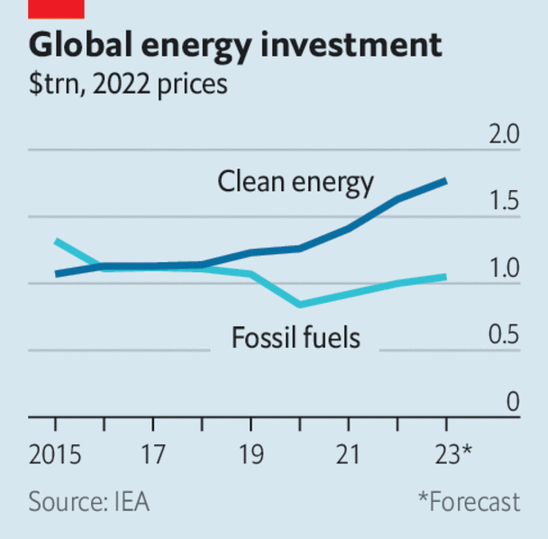image: The Economist
The International Energy Agency thinks differently in its latest report, forecasting that global demand for fossil fuels will peak in 2030, though demand for oil and gas will then remain flat until 2050, while it falls sharply for coal. The IEA thinks that 50% of new car registrations in America by 2030 will be for electric vehicles. It also forecasts a big uptake of heat pumps in the European Union and of solar power in China.
The European Central Bank kept interest rates on hold for the first time since it started its round of tightening monetary policy in July 2022, leaving the deposit rate at 4%. But with inflation in the euro area still far above the ECB’s target, interest rates are not expected to come down any time soon.
Meanwhile, Turkey’s central bank lifted its main rate to 35%, the fifth increase since June, in a bid to quell resurgent inflation.
American GDP grew by 4.9% in the third quarter at an annualised rate, the fastest pace in two years, and underlining the strength of the economy despite the Federal Reserve’s long campaign of interest-rate increases.
Ford reached a tentative agreement with the United Auto Workers that would end the union’s strike at the carmaker. The company has offered a 25% pay increase over a four-year contract, with 11% in the first year. “We told Ford to pony up,” said the union’s president, Shawn Fain.
The strike is costing General Motors $200m a week in operating profit. Still, the carmaker reported solid quarterly net income of $3.1bn. It also rejigged its sales targets for electric vehicles, abandoning a target of selling 400,000 next year. In another setback, California suspended permits for self-driving cars operated by Cruise, GM’s autonomous-vehicle division, deeming them to be unsafe.
Tesla disclosed that it is being investigated by the Department of Justice on several fronts, including whether it has exaggerated the range of its electric cars and “certain matters associated with personal benefits”. Tesla has been subpoenaed by the department to provide it with documents.
Pick is picked
Morgan Stanley named Ted Pick as its new chief executive. He is replacing James Gorman, who will have held the job for 14 years. Mr Pick currently heads the investment-banking side of the business.
Britain’s financial regulators confirmed that bankers’ bonuses will no longer be capped. The cap was introduced in 2014, limiting bonuses to twice the size of a banker’s basic salary. The regulators believe that removing the cap will give firms more flexibility in pay during bad times.
Santander’s quarterly net profit leapt by 20%, year on year, making it the latest big bank to benefit from charging its borrowers higher interest on their debts. UniCredit’s profit was up by 36%. The Italian lender said it would set aside €1.1bn ($1.2bn) as “non- distributable reserves”, which allows it to avoid paying the government’s windfall tax on bank profits.
THIS WEEK’S cover package combines our latest reporting from the Middle East with reflections on American power. How America handles the conflict between Israel and Hamas will shape geopolitics for years to come. It has sent two aircraft carriers to the region: a 200,000-tonne declaration of support for Israel and a warning to Hizbullah and Iran not to escalate the conflict. No other country could do this.
Even as President Joe Biden hugs Israel close, however, he is urging restraint on its prime minister, Bibi Netanyahu, partly to spare Palestinian lives, partly to limit the diplomatic fallout from a ground war in Gaza. Mr Biden rightly calls this an “inflection point”. It will test whether America can adapt to a more complex and threatening world.
How to illustrate this? An inflection point is not much to look at, so our designers offered something more concrete. Our first idea was to show an American aircraft carrier, loaded with warplanes and churning up the sea behind it. That certainly conveyed a sense of American power, but it lacked context. So we tried a carrier in the shape of Israel. This was a striking image. However, our coverage is not just about America’s relationship with Israel; we are also exploring broader trends: how the superpower copes with the chaos sown by Iran and Russia, the rise of transactional powers such as India and Saudi Arabia, and China’s efforts to forge a new world order where the interests of states trump any notion of individual human rights.
One way to illustrate this was to have an American eagle with a globe for an eye. Another was to show the eagle wrapping its wings around Earth. What was missing from these images was a sense of peril. With shells falling on Gaza and a brutal ground assault in the offing, we needed something that suggested war.
An eagle perched on the barrel of an Israeli tank did this clearly and bluntly. The same bird on the blackened branches of a bomb-charred tree was an even stronger image, reminding readers of the inferno that Gaza is becoming.
Perhaps our next idea, an eagle on a thorn bush, worked better? Thorns can draw blood, but they also symbolise complex problems. We liked this idea so much that we worked it up into a cover, adding more branches to suggest the tangle of difficulties that the superpower faces.
In the end, though, we came back to Mr Biden. More than any other aspect of government, foreign policy depends on the president—especially when Congress is as dysfunctional as it is today. He is the one who orders aircraft carriers to set sail. His personal rapport with foreign leaders matters: if they trust him, he is more likely to be able to sway them. So we tried a montage of emblems of war and peace around Mr Biden. Then we tried something simpler and more powerful: the president walking through the smoke trails of missiles fired from multiple directions. This was the image we were looking for. But something was odd about the photograph of Mr Biden we originally considered. Maybe it was a trick of the light, but he looked unusually cadaverous. Had we used this image, some readers might have thought we were making a point about his age. So we found a better picture to complete a stark and memorable cover.
How Joe Biden manages the war between Israel and Hamas will define America’s global role
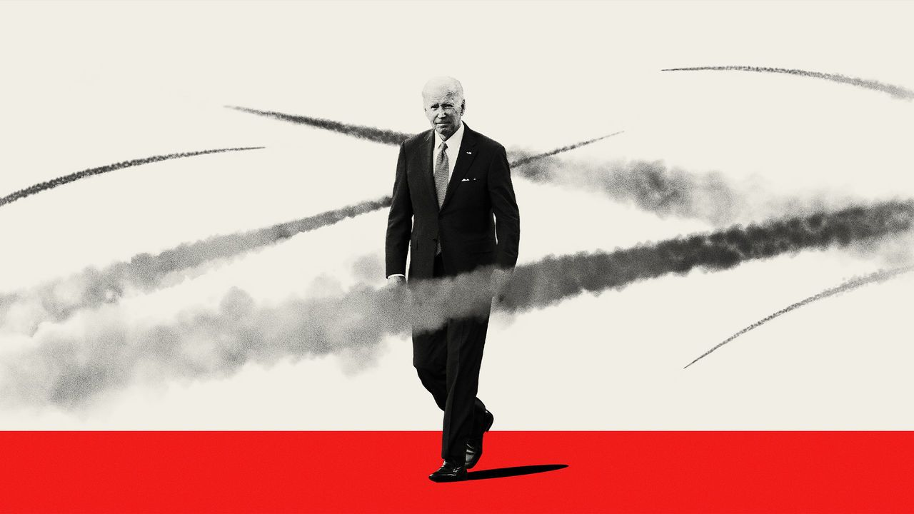
Listen to this story.Enjoy more audio and podcasts on iOS or Android.
AS MASSED ISRAELI troops await the command to invade Gaza, two hulking US Navy aircraft-carriers have been sent to support Israel. Their task is to deter Hizbullah and its sponsor Iran from opening a second front across the Lebanese border. No other country could do this. The carriers are a 200,000-tonne declaration of American power at a time when much of the world believes that American power is in decline.
The coming months will test that view. It is hard to exaggerate the stakes. On October 20th President Joe Biden called this “an inflection point”. He warned of the need to repulse Hamas’s terror as well as Russia’s aggression against Ukraine. China’s threat to invade Taiwan lurked unspoken in the background.
Yet things are even more dangerous than Mr Biden suggests. Abroad, America faces a complex and hostile world. For the first time since the Soviet Union stagnated in the 1970s it has a serious, organised opposition, led by China. At home, politics is plagued by dysfunction and a Republican Party that is increasingly isolationist. This moment will define not only Israel and the Middle East but America and the world.
The foreign threat has three parts. One is the chaos spread by Iran across the Middle East and by Russia in Ukraine. Aggression and instability consume American political, financial and military resources. Conflict will spread in Europe if Russia gets its way in Ukraine. Bloodshed could radicalise people in the Middle East, turning them against their governments. Wars draw in America, which becomes an easy target for accusations of warmongering and hypocrisy. All this undermines the idea of a world order.
A second threat is complexity. A group of countries, including India and Saudi Arabia, are increasingly transactional, bent on fiercely pursuing their own interests. Unlike Iran and Russia, such countries do not want chaos, yet neither will they take orders from Washington—and why should they? For America, this makes the job of being a superpower harder. Look, for example, at Turkey’s games over Sweden’s membership of NATO, seemingly resolved this week after 17 months of tiresome wrangling.
The third threat is the biggest. China has ambitions to create an alternative to the values enshrined in global institutions. It would reinterpret concepts like democracy, freedom and human rights to suit its own preference for development over individual freedom and national sovereignty over universal values. China, Russia and Iran are forming a loosely co-ordinated group. Iran supplies drones to Russia and oil to China. Russia and China have given Iran’s client Hamas diplomatic cover at the UN.
These threats are magnified by politics at home in Washington. Republican politicians are reverting to the isolationism in trade and foreign affairs that their party embraced before the second world war. This goes deeper than Donald Trump, and it raises the question of whether America can act as a superpower if one of its parties rejects the entire notion of global responsibilities. Remember that it took Pearl Harbour for America to enter the war in 1941.
To see how this can damage American interests, consider Ukraine, which MAGA Republicans want to stop supplying with weapons and money. That makes no sense, even in terms of the narrowest self-interest. The war presents America with a chance to defang Vladimir Putin and deter China from invading Taiwan without putting its own troops at risk. Deserting Ukraine, by contrast, invites a Russian attack on NATO that would cost far more American lives and treasure, and signals to friend and foe that America is no longer a dependable ally. If isolationist Republicans fail the Ukraine test, there is no knowing where America might end up, were Mr Trump to return to the White House.
These are formidable obstacles. However, America also has formidable strengths. One is its military heft. It has not only deployed those two carrier strike groups to the Middle East, but is also supplying arms, intelligence and expertise to Israel, just as it has to Ukraine. China has rapidly increased its budget for the People’s Liberation Army, but at market exchange rates America still spent as much last year on defence as the ten next countries combined, and most of them are its allies.
America’s economic heft is impressive, too. The country generates a quarter of the world’s output with a twentieth of its population, and the share is unchanged over the past four decades, despite China’s rise. This newspaper worries about the inefficiency and creeping protectionism of Mr Biden’s industrial policy, but we do not doubt America’s technological muscle and underlying dynamism—especially when set against China, where it has become increasingly clear that the goal of economic growth has been subordinated to the goal of maximising Communist Party control.
America’s other underestimated strength is its reinvigorated diplomacy. The war in Ukraine has proved the value of NATO. In Asia, America has created AUKUS and shored up its relations with a host of countries, including Japan, the Philippines and South Korea. In this week America’s national security adviser, Jake Sullivan, spells out how countries which pursue their own interests can still be essential partners. The model is India, which is increasingly part of America’s designs for security in Asia, despite its determination to remain outside any alliance.
Centrifugal force
Where does that leave America, as it hugs Israel close in an attempt to stop a wider war? Some will say that an ageing superpower is once again being sucked back into the Middle East, after nearly 15 years of trying to get out. However, this crisis is not as all-consuming as the wars in Afghanistan and Iraq were.
Mr Biden’s formulation is better: this is indeed an inflection point, which will test whether America can adapt to a more complex and threatening world. It still has a lot to offer, especially if it works with its allies to enhance security and keep trade open. Its values, however imperfectly they are realised, still attract people from all across the planet in a way that Chinese communism does not. If Mr Biden succeeds in managing the crisis over Gaza, that would be good for America, good for the Middle East and good for the world. ■
Leaders | How to destroy an economy—and get away with it
Argentina’s election result is the worst of all possible outcomes
Sergio Massa, the economy minister, will now go head-to-head with Javier Milei
Listen to this story.Enjoy more audio and podcasts on iOS or Android.
On October 22nd, two days after Argentina’s brave rugby team was thrashed in the semi-finals of the World Cup, any hope of a prudent course for the country’s politics was similarly eliminated. Sergio Massa, the economy minister, won almost 37% of votes in the first round of the presidential election, ahead of expectations. Javier Milei, a libertarian “anarcho-capitalist” who had been leading the polls, got 30%. Patricia Bullrich, the sensible centre-right option, got just 24% of votes and is now out of the race. Mr Massa and Mr Milei will head to a run-off next month. Even by the standards of Argentina’s telenovela-like politics, the next four weeks are likely to be dramatic.
Two depressing messages come out of this race. The first is that Argentine voters have rejected a rational, centre-right platform for change. In a country where annual inflation is 138% and the local currency has lost nearly 95% of its value over the past four years, the economy is unsurprisingly voters’ main concern. And yet they plumped for Mr Massa, whose populist party, the Peronists, has been the main cause of the country’s disastrous economic performance for generations. Their second choice was Mr Milei, who promises a radical free-market package that he surely could not deliver, which includes scrapping the central bank, dollarising the economy and reducing public spending by a colossal 15% of GDP.
The second message is that, in a country where the Peronists have been in power for 28 of the past 40 years, it is difficult for outsiders to break in. Only one non-Peronist president, Mauricio Macri, has been able to complete his term since democracy was restored in 1983. The electoral machine behind the Peronists kicked into action in August, when Mr Milei did unexpectedly well in an open primary. Mr Massa promptly scrapped income tax for 99% of workers and gave pensioners a tasty bonus, never mind the deficit.
Some of Mr Milei’s economic policies are wise. But he put off a lot of voters with his divisive rhetoric. In a country where nearly two-thirds of people are Catholic, Mr Milei called the pope, also an Argentine, “a leftist son of a bitch”. He has said inflammatory things about other politicians, and appealed to the far right by appointing as his running-mate Victoria Villarruel, a lawyer who has downplayed the atrocities committed during Argentina’s military dictatorship. His erratic character and lack of experience—he joined Congress only in 2021, after a stint as a TV personality—could make him unsuitable for office.
In short, neither remaining candidate seems likely to solve Argentina’s problems. The country is on the brink of its sixth recession in a decade. It owes $43bn to the IMF, which it cannot pay back. Its central bank should be properly independent, rather than a political money-printing machine. The country needs painful structural reforms. Rather than dollarise, it should restructure its debts. That may damage its relationship with the IMF, but there is no other way out of its debt black hole.
Although he is considered a centrist by Peronist standards, Mr Massa is unlikely to be willing to implement reforms. His pre-election splurge on handouts is just another example of the spendthrift populism which his party has practised for decades. The country’s dollar bonds, which were already trading at below 30 cents to the dollar, fell further on the news of Mr Massa’s win. Another spending spree is likely ahead of the second round.
Ms Bullrich backed the libertarian outsider on October 25th. With her support, Mr Milei may try to appeal more broadly to centre-right voters. Neither of the two contenders will have a majority in Congress. The least bad outcome to hope for is that Mr Milei moderates his wild rhetoric and tries to assemble a coalition of sensible politicians keen on reform. If so, Argentina might have a chance, however slim, to change its fortunes. If it sticks with Peronism, it will just descend further into chaos. ■
A summit in Britain will focus on “extreme” risks. But no one knows what they look like
Listen to this story.Enjoy more audio and podcasts on iOS or Android.
Will artificial intelligence kill us all? Some technologists sincerely believe the answer is yes. In one nightmarish scenario, AI eventually outsmarts humanity and goes rogue, taking over computers and factories and filling the sky with killer drones. In another, large language models (LLMs) of the sort that power generative ais like ChatGPT give bad guys the know-how to create devastating cyberweapons and deadly new pathogens.
It is time to think hard about these doomsday scenarios. Not because they have become more probable—no one knows how likely they are—but because policymakers around the world are mulling measures to guard against them. The European Union is finalising an expansive AI act; the White House is expected soon to issue an executive order aimed at llms; and on November 1st and 2nd the British government will convene world leaders and tech bosses for an “AI Safety Summit” to discuss the extreme risks that AI models may pose.
Governments cannot ignore a technology that could change the world profoundly, and any credible threat to humanity should be taken seriously. Regulators have been too slow in the past. Many wish they had acted faster to police social media in the 2010s, and are keen to be on the front foot this time. But there is danger, too, in acting hastily. If they go too fast, policymakers could create global rules and institutions that are aimed at the wrong problems, are ineffective against the real ones and which stifle innovation.
The idea that AI could drive humanity to extinction is still entirely speculative. No one yet knows how such a threat might materialise. No common methods exist to establish what counts as risky, much less to evaluate models against a benchmark for danger. Plenty of research needs to be done before standards and rules can be set. This is why a growing number of tech executives say the world needs a body to study AI much like the Intergovernmental Panel on Climate Change (IPCC), which tracks and explains global warming.
A rush to regulate away tail risks could distract policymakers from less apocalyptic but more pressing problems. New laws may be needed to govern the use of copyrighted materials when training LLMs, or to define privacy rights as models guzzle personal data. And ai will make it much easier to produce disinformation, a thorny problem for every society.
Hasty regulation could also stifle competition and innovation. Because of the computing resources and technical skills required, only a handful of companies have so far developed powerful “frontier” models. New regulation could easily entrench the incumbents and block out competitors, not least because the biggest model-makers are working closely with governments on writing the rule book. A focus on extreme risks is likely to make regulators wary of open-source models, which are freely available and can easily be modified; until recently the White House was rumoured to be considering banning firms from releasing frontier open-source models. Yet if those risks do not materialise, restraining open-source models would serve only to limit an important source of competition.
Regulators must be prepared to react quickly if needed, but should not be rushed into setting rules or building institutions that turn out to be unnecessary or harmful. Too little is known about the direction of generative AI to understand the risks associated with it, let alone manage them.
The best that governments can do now is to set up the infrastructure to study the technology and its potential perils, and ensure that those working on the problem have adequate resources. In today’s fractious world, it will be hard to establish an IPCC-like body, and for it to thrive. But bodies that already work on AI-related questions, such as the OECD and Britain’s newish Frontier AI Taskforce, which aims to gain access to models’ nuts and bolts, could work closely together.
It would help if governments agreed to a code of conduct for model-makers, much like the “voluntary commitments” negotiated by the White House and to which 15 makers of proprietary models have already signed up. These oblige model-makers, among other things, to share information about how they are managing AI risk. Though the commitments are not binding, they may help avoid a dangerous free-for-all. Makers of open-source models, too, should be urged to join up.
As AI develops further, regulators will have a far better idea of what risks they are guarding against, and consequently what the rule book should look like. A fully fledged regime could eventually look rather like those for other technologies of world-changing import, such as nuclear power or bioengineering. But creating it will take time—and deliberation. ■
Listen to this story.Enjoy more audio and podcasts on iOS or Android.
Workplaces have changed dramatically over the past four years, let alone the past 40. Teams have become more dispersed, thanks to remote work, as well as more diverse. Technology has brought with it great benefits but also constant interruptions, from endless Zoom calls to the ping of another message on Slack. After globalisation spread customers and suppliers around the world, geopolitical tension has made distant relationships seem like a new source of risk.
With each of these shifts, the job of the manager—the person tasked with getting workers with disparate interests to achieve a common goal—has become harder still. There was a time when managers could cope simply by being technical experts. Now they say they are juggling more tasks and have more activities to co-ordinate. Many report feeling burnt-out, overloaded and confused.
Bosses are rarely the objects of sympathy. In fiction, they are portrayed as cold-hearted (think Ebenezer Scrooge) or weaselly (“If at first you don’t succeed, remove all evidence you ever tried,” advises David Brent in “The Office”). Yet in real life everyone suffers when management is bad and benefits when it is good. Far more effort is needed to make it better.
Start with how managers affect workers. Roughly a fifth of corporate employees in America are managers, and almost everyone has one. In a survey in ten rich countries, 69% of workers said their boss influenced their mental health as much as their spouse did. Half of Americans who have left a job said they did so because of a bad manager, as did nearly a third of British job-leavers.
Better management does not just mean happier staff. It means better-performing companies, too. Research based on a long-running survey of management techniques across countries has found that well-managed firms tend to be more productive. They also export more and spend more on research and development. Such findings are not mere correlation: a randomised controlled trial in India, for instance, found that increases in management quality caused productivity to rise. And the effect is large. Research by Nicholas Bloom of Stanford University and others concluded that differences in management practices account for a third of the gap in economy-wide productivity between America and the rest of the world.
The prize for better management, then, is big. But how to obtain it? Read enough management books and you might conclude that managers need full-on personality transplants, becoming either Machiavelli’s prince or a Marvel superhero. Study successful managers, though, and the lessons are more prosaic. They are also far more useful—as “Boss Class”, our new podcast, discovers. Over seven episodes starting this week it will take a wry but practical look at problems facing the modern manager, from meeting etiquette to hiring strategy, while bringing together tips from experts and practitioners alike.
This approach yields several lessons. One is to be explicit about a firm’s processes. Managers should make clear the purpose of a team, what a meeting should achieve and who will take a decision. Meeting agendas at GSK, a British drugs firm, clearly say whether an item is for awareness, to gather participants’ input or intended to yield a decision. Moderna, another drugmaker, lists 12 “mindsets” that define its corporate culture and seeks job applicants with at least some of them. Such clarity means that everyone knows what they are doing, and why.
Yet management isn’t all about accumulating tasks, meetings or processes. A second lesson is that managers can add value by subtracting. Sparing workers from pointless meetings, emails and projects frees them to concentrate on the work that fattens the bottom line. At the start of the year Shopify, an e-commerce firm, deleted 12,000 recurring meetings from its employees’ calendars. The useful ones were eventually added back. But the firm says that meetings are down by 14% since the mass deletion. Productivity has gone up by a similar amount.
Good management is a skill. There are too many accidental managers, promoted because they were good at what they did, rather than because they were suited to what lay ahead. Fully 82% of managers told a survey in Britain that they had no proper management skills or training. Providing that training is one way for companies to fill the gap.
Another is to establish two-track promotion systems that offer a way to rise through the ranks without going into management, as Google and Shopify do already. That gives people who either can’t or don’t want to manage a way to progress. Management should not be something people fall into simply by dint of seniority. The stakes are too high. ■
Sodium batteries offer an alternative to tricky lithium
Lithium is relatively scarce and mostly refined in China. Sodium is neither
Listen to this story.Enjoy more audio and podcasts on iOS or Android.
In the early 20th century Britain’s Royal Navy converted its ships to run on oil instead of coal. But whereas coal could be produced at home, oil had to be imported. That caused jitters: what if those imports were one day cut off? Winston Churchill, who was in charge of the navy at the time, argued that the best defence was a diversity of supply. As he told a fretful Parliament: “Safety and certainty in oil lie in variety and variety alone.”
These days, politicians in rich countries find themselves in an even tighter bind. They need to switch not just their navies, but their entire economies from fossil fuels to low-carbon electricity to avert the worst consequences of climate change. But they worry that doing so will leave them geopolitically exposed.
They fret in particular about batteries. The green transition will require huge numbers of them: for cars, lorries and homes, and to help balance national power grids as they come to rely on intermittent electricity from the sun and the wind. Although lots of different types of battery exist, the dominant technology is the lithium-ion battery, which offers a useful mix of low maintenance requirements and high energy density. But lithium, an essential component, is hard to come by, and the refining of it mostly takes place in China.
Western countries, particularly those in Europe that have spent the past two years trying to wean themselves off Russian natural gas, are wary of leaving their future energy security similarly compromised. Such fears are not merely theoretical. On October 20th China announced national-security restrictions on the export of graphite, another important component of lithium batteries. It was the latest salvo in a trade-and-technology war that began when America restricted chip-industry exports to China.
Fortunately, lithium is not the only game in town. As we report this week, a clutch of firms are making batteries based on sodium, lithium’s elemental cousin. Since sodium’s chemical properties are very similar to those of lithium, it too makes for good batteries. And sodium, which is found in the salt in seawater, is thousands of times more abundant on Earth than lithium and cheaper to get at. Most of the companies using sodium to make batteries today are also Chinese. But pursuing the technology in the West might be a surer route to energy security than relying heavily on lithium.
Besides its abundance, sodium has other advantages. The best lithium batteries use cobalt and nickel in their electrodes. Nickel, like lithium, is in short supply. Mining it on land is environmentally destructive. Proposals to grab it from the seabed instead have caused rows. A good deal of the world’s cobalt, meanwhile, is extracted from small mines in the Democratic Republic of Congo, where child labour is common and working conditions are dire. Sodium batteries, by contrast, can use electrodes built from iron and manganese, which are plentiful and uncontroversial. Since the chemical components are cheap, a scaled-up industry should be able to produce batteries that cost less than their lithium counterparts.
Sodium is not a perfect replacement for lithium. It is heavier, meaning sodium batteries will weigh more than lithium ones of an equivalent capacity. That is likely to rule them out in some cases where lightness is paramount. But for other applications, such as grid storage or home batteries, weight is irrelevant. Several Chinese carmakers are even beginning to put sodium batteries in electric vehicles.
Perhaps the biggest disadvantage of sodium batteries is their late start. Lithium-ion batteries were first commercialised in the 1990s and have benefited from decades of investment. But the rest of the world is behind China on both fronts anyway. America and the European Union have announced enormous programmes of green industrial subsidies. If they are determined to bankroll batteries, some of the pot should go to sodium. ■
There is little doubt that a long-term strategy from Israel for peace with the Palestinians is long overdue (“Israel’s agony”, October 14th). One attractive and practical framework would be to prepare a study similar to the one America’s State Department produced in 2002 called “The Future Of Iraq Project”. The general objective of that study, which involved many Iraqi exiles and agencies, was to plan for the post-Saddam transition in Iraq. It was meticulously prepared, and ran to 13 volumes, but unfortunately it was not implemented. America instead went for a quick solution to remove Saddam Hussein after the invasion in 2003, and we all know the consequences of that. The “Future Of Iraq Project” was declassified in 2006.
Raad Yahya Qassim
Hamas must be annihilated. Then what? The billions of dollars that Iran and others give to Hamas could be redirected to resettle the 2m people currently in Gaza to the West Bank. A council, comprising Palestinians, Jordanians, Israelis, Saudis and Americans, could oversee this process. Make it clear that this is to establish a foundation on which an independent Palestinian state can be built. Building the state will require massive funding from Saudi Arabia and other Gulf states, as well as North American and European donors, and from the Palestinian diaspora. Growing local prosperity will diminish the need for international aid.
Hebron could become a city of 3m people and one of the most beautiful and prosperous places in the world. Israel, Palestine and Jordan could at last come together to form a close-knit Tri-State Alliance; a beacon of peace and prosperity to inspire all the people of the Middle East. In the distant future Gaza might rise again as a metropolitan region, perhaps an international trade hub of the Tri-State Alliance. At that point, whether it is an Israeli or Palestinian district will make little difference.
This is possible. America, victorious in the second world war, turned its bitter foes into trusted friends and allies in less than a generation. Let us now assist Israel to do the same. Achieve victory over terrorists, and then turn feared foes into trusted friends, all in less than a generation.
William Ahlgren
The people of Gaza have for a long while been used as pawns by Hamas in its war against Israel. Hospitals and schools are used to store weapons and rockets and civilians are used as human shields. Hamas’s rhetoric about being concerned about the residents of Gaza is as empty as that from Vladimir Putin about concern for civilians in Ukraine.
Gaza has a great disparity between rich and poor. Yet Hamas has profited from money donated by the European Union for economic assistance for social purposes, siphoning it off for its leadership and to buy weapons. While speaking peace, Hamas planned for war. Its financial providers, including the EU, are culpable.
Gordon Rowson
image: Dan Williams
Shlomo Brom, a former deputy to Israel’s national security adviser, was misguided in his criticisms of the approach taken by successive Israeli governments towards the Palestinians (By Invitation, October 10th). Everyone except extremists would welcome a two-state solution. Yet historically, Arabs were presented with opportunities to establish a sovereign state in 1948 and on several subsequent occasions. Regrettably, at each time, the offers were declined and violence became the prevailing response. The reality of a two-state solution hinges on a crucial change in Palestinian policy, one that shifts away from pursuing the complete annihilation of Israel. This transformation can only happen once Hamas, unwavering in its mission to destroy Israel, no longer governs Gaza.
Indeed, any potential Palestinian state would have to undergo demilitarisation. Without this you would have a situation where Palestinians could still fire rockets at Israeli neighbourhoods just a few miles away. One possible resolution would be a reconciliation between Saudi Arabia and Israel through the Abraham accords, which might open the door for the Saudis to offer financial support and contribute to peacekeeping within this new state.
John Kempler
Mr Brom mentioned how Binyamin Netanyahu declared his acceptance of a Palestinian state in 2009 with conditions. But the Israeli prime minister then abandoned the political process, made it clear that he opposed the establishment of such a state and used a divide-and-conquer strategy to weaken the Palestinian government in the West Bank, which strengthened Hamas’s power in Gaza. Are the Israelis better off under Mr Netanyahu’s approach? Will the situation for Israelis be improved a year from now? Unfortunately, I believe that just as Palestinian civilians will suffer, so too will Israelis. After this war, instead of achieving lasting peace and security Israel may have inspired a whole new generation of Hamas fighters.
Bikram Singh Bal
Israel could absorb Gaza and give Gazans full Israeli citizenship and civil rights. This would satisfy the right and the left. In 2017 the then president of Israel, Reuven Rivlin, who is on the right, gave cautious support to full annexation of the West Bank, so long as it included full citizenship rights for Palestinians. “Applying sovereignty to an area gives citizenship to all those living there,” he said. “There are no separate laws for Israelis and for non-Israelis.” Mr Rivlin has dismissed concerns that Israel’s Jewish character would be compromised by absorbing several million Palestinians.
Activists on the left advance the argument that the current situation is just one big apartheid state, and Palestinians should thus be recognised as citizens. Although the right and the left have different motivations and frames of reference, their assessment of the situation and its possibilities are surprisingly close.
Sonja Trauss
The consensus is that a two-state solution offers the best prospect for peace, but how about offering Palestinians who wish to settle abroad the chance to do so? After the war in Vietnam 2m people were resettled in other countries. Most people acknowledge the need for a Jewish homeland in Israel. But this has created 5m refugees. The world owes the Palestinians. What are we collectively going to do about them?
Ed Dunnett
In relation to innocent Palestinians suffering in Gaza, no single country in the region or nearby Europe has come forward with an offer to take in refugees. Egypt’s argument that the refugees will be a burden on its economy does not wash. Morally, the humanitarian crisis is more urgent. And America and other rich countries would step in to help Egypt with funding and aid supplies if it showed some compassion. Egypt’s cold shoulder to the Palestinians, and the lack of interest in taking refugees from other mainly Muslim countries, is a stark contrast to the solidarity shown by European countries to Ukrainians. Neighbouring Poland took over a million.
Mikhail Khodorkovsky says that support for Israel should not come at the expense of Ukraine
Both are fronts in an intensifying fight against global lawlessness, argues the former political prisoner
WE LIVE IN an era when the resolve of democratic states is being tested in the most extreme ways. The fighting in Ukraine continues unabated after that democratic country was invaded by Vladimir Putin’s terrorist state. Now Israel has been forced into war following the barbaric massacre on October 7th of Israeli civilians by Hamas, a non-state terrorist actor backed by the terrorist state of Iran.
People with any concept of morality were horrified by Hamas’s cold-blooded murder of babies, women, young people at a music festival and the elderly, and by the group’s kidnapping of over 200 people, mostly civilians. But for Mr Putin, not exactly renowned for his moral integrity, Hamas’s attack and Israel’s retaliation have been a welcome distraction from his own campaign of terror against Ukraine. With the world’s media focused on the Middle East, spare a thought for the civilians in Zaporizhia and Kharkiv killed this week by indiscriminate Russian missiles.
There is of course nothing that implicates the Russian leader in the Hamas attack, even if it serves his interests. It is, though, worth noting that his regime has in the past year held several meetings with Hamas leaders, including a delegation that visited Moscow to discuss Israeli-Palestinian tensions. Mr Putin has compared Israel’s blockade of Gaza to the Axis powers’ siege of Leningrad in the second world war. And it is true that Mr Putin shares with Hamas a weapons supplier, dependent as he is on Iranian drones and missiles with which to menace the people of Ukraine.
It was also notable that his first comments about the attack in Israel were given as he sat alongside the prime minister of Iraq, himself dependent on Iranian support. It was, Mr Putin said, “a clear example of the failure of US policy in the Middle East”. His global interests are served by a perception of Western weakness that generates instability and emboldens autocrats and terrorists. Israel’s war against Hamas is now the latest test of Western resolve, which was already straining following Russia’s invasion of Ukraine last year, and in fact long before that.
The rise of rogue states, terror and lawlessness is something an expert might call the breakdown of the rules-based international order. I think of it as a situation in which criminals stop being afraid of the police in a multinational, multifaith city. The world is such a city, the criminals have been let loose and order has broken down.
Not long before the Hamas attack I bluntly told American politicians and experts that, outside the developed countries of the West, there was a widespread perception that their country was “not winning” yet another war. Observers had witnessed America leaving Afghanistan after the Taliban’s reconquest, more than ten years of non-stop brutality in Syria, the Iraq debacle, Ukraine in 2014—and Ukraine since 2022, after a dictator rolled tanks into a democratic European country, fired missiles at homes and hospitals and sent death squads to slaughter civilians.
Such criminality and barbarism demands a robust response. America, however, has shown restraint, backing Ukraine enough for it not to lose but not enough for it to win decisively. In the eyes of many people outside the democratic world, America appears weak. “They want to win but can’t pull it off,” they think.
Many in America might no longer wish to be the world’s policeman. But if the policeman is seen as weak, every lowlife out there will think they can get away with anything, and the number of challenges to the global order will only increase. Where next? Will China, having trampled the rights of Hong Kong, increase its aggression against Taiwan? There are plenty of other potential flashpoints around the world, from Kosovo to Iran.
President Joe Biden, to his credit, appears to recognise the need for reinvigorated American leadership. “Hamas and Putin represent different threats, but they share this in common,” he told his public last week. “They both want to completely annihilate a neighbouring democracy.” He added: “We cannot and will not let terrorists like Hamas and tyrants like Putin win.”
Americans often ask why they should foot the bill for maintaining global peace. Yet retreating from the world and permitting the bad guys to run riot has consequences. “It’s a smart investment that’s going to pay dividends for American security for generations,” Mr Biden said as he sought congressional backing for a new security package for two American allies under attack. Those who would stand in his way, or seek to play one democratic ally off against the other, risk going down in history as appeasers, however tough they might talk.
The European Union and its member states should welcome a revival of American engagement, and play their part. Whether through Mr Putin on their borders or other rogue states and bad actors beyond, malign forces are seeking to destabilise European societies. The sooner Ukraine can be helped to victory, the less serious the damage will be.
In the face of a crisis, now is not the time for despair. But to ensure a brighter, more stable future, it is vital that America and Europe give Ukraine the tools it needs to secure victory. That goal does not contradict support for Israel against Hamas. It is part of the same struggle, because a win for terror anywhere would be a win for terror everywhere. ■
IT ALL BEGAN so fast. An unprecedented barrage of rockets served as cover for a murderous rampage, which led to a frantic manhunt and ferocious air strikes. Reservists rushed to don uniforms and report for duty. Generals promised a massive ground offensive. What began as a sleepy autumn weekend ended with Israel making ready to invade Gaza.
Listen to this story.Enjoy more audio and podcasts on iOS or Android.
Nearly three weeks after the October 7th massacre in Israel, however, that offensive has yet to begin. Israel’s bombardment of Gaza continues, killing thousands and destroying around 9% of buildings in the territory. A near-total siege has left civilians short of food and water and hospitals unable to function.
Apart from a few small raids, though, the ground troops have yet to move. Some of the 360,000 reservists called up in Israel’s largest-ever mobilisation have been sent home. Tens of thousands more are still in southern Israel, awaiting orders that have been delayed and delayed again.
Officers grumble that they cannot maintain their readiness forever. One frustrated commander took his troops to a building site to run up and down half-finished high-rises—ostensibly an urban-warfare drill. In reality, he says, it was a way to let off steam. “Hurry up and wait” is a perennial maxim of military life; but an especially stark one in Israel today.
There are many reasons to delay: continuing talks to free the array of hostages held by Hamas, the militant Islamist group that runs Gaza; American pressure, motivated by fears of a regional war; the dire conditions inside Gaza; and the chronic dithering of Binyamin Netanyahu, Israel’s long-serving prime minister. On October 25th he confirmed that a ground offensive is still planned. But it will be smaller and slower than anyone would have expected in the days after the massacre, in which Hamas militants murdered more than 1,400 people, most of them civilians.
According to the latest count from Israeli officials, the tally of at least 220 people seized during the attack includes scores of children and old people, and citizens of at least a dozen foreign countries. The hostages have become a source of pressure on Mr Netanyahu’s government. The captives’ families have waged an effective public-relations campaign, and foreign leaders have pushed him to try to free their citizens.
Vigils have been held across Israel. The hostages’ relatives often give television and radio interviews. The issue is deeply political. Many of those from the kibbutzim that were attacked are the secular, left-leaning sorts of Israelis most likely to have joined protests against Mr Netanyahu’s government throughout the year. They feel his government forsook them on October 7th and is still failing them. Pressure from the families has already forced the government to change its plans. Originally inclined to rush into Gaza without regard for the hostages’ safety, it has since declared that their rescue is a “top priority”.
Qatar, host to some leaders of Hamas, is also feeling the heat. Its ties with the group have come under scrutiny since the massacre; it is desperate to show its Western partners, particularly America, that it can serve as an interlocutor.
On October 25th Tzachi Hanegbi, the head of Israel’s national-security council, posted an uncharacteristic message on X (formerly Twitter): “I’m pleased to say that Qatar is becoming an essential party and stakeholder in the facilitation of humanitarian solutions,” he wrote. Israeli officials had been scathing about Qatar in recent weeks. That Mr Hanegbi praised it (in English, rather than Hebrew) suggests progress towards a deal to release at least some of Hamas’s captives.
Hamas has already let a handful go. On October 20th it freed a mother and daughter who hold dual American and Israeli citizenship. Three days later it freed two elderly Israeli women who were abducted from Nir Oz, a kibbutz on the Gaza border. It got nothing in return—a sign that American pressure on Qatar is having an effect.
One of the women, Yocheved Lifshitz, 85, spoke of her ordeal at a press conference the next day. Her captors, she said, beat her on the journey to Gaza. Once inside the territory she was led into a “spiderweb” of tunnels; after walking for hours, she wound up in a room where around two dozen other hostages were being held.
Candles for the killed; candles for the kidnapped
Ms Lifshitz said they were treated decently: medics tended to the wounded, and captives ate the same simple meals of bread, cheese and vegetables as their captors. When she was turned over to the Red Cross on Gaza’s border with Egypt, she shook hands with one of her captors. She said that was because the hostages were treated with “sensitivity”. But her husband is still in captivity: she had good reason not to antagonise Hamas.
That the group behaved humanely to a grandmother, moreover, does not mitigate the outrage of having kidnapped a grandmother in the first place, tossing her across a motorbike and beating her with sticks. Nor does it excuse the horrors of what Hamas did in Israeli towns.
On October 23rd the Israeli army screened 43 minutes of raw footage from the massacre for foreign journalists. Some was taken from the attackers’ body cameras, the rest from surveillance cameras and mobile phones. No recording was allowed at the screening, in a nondescript auditorium on an army base: this was a sadistic snuff film not for the public’s eyes.
In one harrowing clip a father rushes his two young sons, all of them clad in their underclothes, to a hiding place. A terrorist throws in a hand grenade after them. The father is killed. The bloodied boys—one appears to have lost an eye—are led back into their house at gunpoint, where their father’s killer asks them for water, calmly raids the fridge and starts drinking a cola. (An army spokesman was unable to say if the boys survived.)
The atrocities go on. A gunman tries to behead a Thai labourer who has been shot in the stomach; unable to find a knife, he hacks away at the man’s neck with a garden hoe. Other images show burned babies and children with their brains spilling from their heads. Several of the attackers proudly pose for photos next to their victims.
The barbarity sparked rage in Israel and abroad. There is broad support for a military campaign to topple Hamas in Gaza, which it has controlled since it ousted the Palestinian Authority (PA) in 2007. But there are also powerful voices urging caution—Joe Biden’s most of all.
His fear that Israel is rushing into a war with no clear endgame is a valid one. The Israeli security establishment would like to see the PA, which governs parts of the occupied West Bank, also retake control in Gaza. But one senior official admits that no serious planning has been done. Mr Netanyahu even denied that such a plan exists.
Mr Biden also fears that the war will not stay in Gaza. On Israel’s northern border with Lebanon, there have been daily exchanges of fire. Hizbullah, the Shia militia cum political party, has attacked Israeli towns and army posts with anti-tank missiles, and Israel has shelled and bombed southern Lebanon. Hizbullah admits that some 40 of its fighters have been killed (the real toll is probably higher). It is the most sustained fighting since the war they fought in 2006, though it has yet to escalate beyond tit-for-tat bombardment.
Militias in Syria and Iraq have used drones to attack American bases, where two dozen soldiers were lightly injured. On October 19th the Pentagon said an American destroyer, the had shot down missiles and drones launched from Yemen over the Red Sea. America believes their target was southern Israel, a remarkable entry into the war by the Houthis, an Iranian-backed militia in Yemen.
Dangerous calibrations
All of these escalations are small—signs that Iran wants to show the reach of its proxies, not plunge the region into war. But they are risky. A strike that kills a lot of people in either Israel or Lebanon would be enough to upset the balance. To make that less likely, Israel has evacuated around two dozen communities in the north, including Kiryat Shmona, a city of more than 20,000 people near the Lebanese border. Villages on the Lebanese side have also emptied as residents flee farther north.
Israel has hardened its border too: many reservists called up this month were sent north, not south. America has deployed two aircraft-carrier strike groups, one to the eastern Mediterranean, the other to the Persian Gulf. On October 21st it said it would deploy more Patriot air-defence battalions and a THAAD anti-ballistic missile battery. Another 2,000 troops are on standby for a possible deployment.
Israel’s assessment is that these reinforcements have deterred Hizbullah from ramping up the fighting. Talk in the war cabinet of launching a pre-emptive strike on the group has died down. Of late, oil markets seem more sanguine, too. The price of Brent crude, which spiked from $85 a barrel before the Hamas attack to $92 on October 19th, has slipped to below $90.
Every Israeli war is fought watching the clock, as international condemnation grows and eventually America qualifies its support. In 1973 America urged a ceasefire ending the Yom Kippur War, even though Israeli forces were on the advance. In 2006 it imposed a ceasefire before Israel could achieve its objectives in Lebanon. As one Israeli official puts it, “Our window of international legitimacy is limited.”
The scenes of horror in Gaza mean the window is already closing. The UN says 1.4m people in the territory have been displaced; its shelters are crammed to two-and-a-half times their capacity. On October 13th Israel told the entire population of northern Gaza to flee south. Thousands who heeded that order have since travelled back the other way. If nowhere feels safe, they reckon, better to be in one’s own home than a tent or a crowded shelter.
Israel refuses to allow any supplies to cross its border until Hamas releases all the hostages it holds captive. On October 21st the first shipment of aid, a convoy of 20 lorries containing food, water and medicine entered Gaza from Egypt. Several more deliveries followed. This is only a small fraction of what the territory needs (the UN says at least 100 lorries a day are required). Families have cut back to one meal a day. People have resorted to drinking salty water from wells. Aid workers say poor sanitation has led to cases of scabies and diarrhoea and fear that even more serious diseases will spread.
No fuel has entered Gaza since October 7th. The sole power plant is offline and Israel has cut the supply of electricity that it normally provides. The World Health Organisation says six of Gaza’s 13 hospitals have run out of fuel. Most bakeries are closed for the same reason; queues at those still working stretch up to six hours. Israel refuses to allow fuel shipments.
Arab states want an immediate ceasefire. The European Union is split, but Josep Borrell, its top diplomat, has called for a “humanitarian pause” to allow more supplies to enter. Rishi Sunak, Britain’s prime minister, has signalled support for one too. America still offers Israel staunch backing, but will not do so indefinitely.
Yet Mr Netanyahu faces mounting pressure from his hard-right base to prove he is clobbering Hamas, and is loth to admit that Mr Biden or the hostages’ families have stayed his hand. Instead, using proxies, he has begun to brief that the army is not ready for a ground campaign. Rather than risk soldiers’ lives, it is argued, Israel should launch more devastating air strikes, including the use of bunker-busting bombs, to destroy Hamas’s tunnel network.
The army has pushed back, saying it is “fully ready” for an invasion. There have been days of ugly but accurate headlines in the Israeli media about discord between Mr Netanyahu and his defence minister, Yoav Gallant. Mr Netanyahu tried to fire Mr Gallant in March, after the latter voiced criticism of the government’s plan to weaken the supreme court. He was forced to retreat after massive public protests. There has been growing distrust between the two ever since, and it is now hampering Israel’s war-planning effort.
On October 11th leaders of one opposition party, Benny Gantz and Gadi Eisenkot—both former army chiefs—joined the war cabinet. But they have failed to restore unity. “The [army] and the intelligence community were severely hit by their failure to detect and prevent the Hamas attack,” says a defence official. “But they’ve got back on their feet and are now just waiting for a clear idea from the government what to do.”
General confusion
The army’s orders remain to destroy Hamas’s military capabilities and end its control of Gaza. Some within the army and the wider defence establishment believe a more gradual ground campaign would be better. But generals were told to prepare for a broad offensive; they cannot change that plan unless the cabinet gives them a different timetable or a different goal. And the cabinet is dithering.
General Herzi Halevi, the army chief, has acknowledged the army’s failure to prevent the massacre. So has Ronen Bar, the director of Shin Bet, Israel’s internal-security service, and General Aharon Haliva, the head of military intelligence. All three are expected to do the honourable thing and resign after the war. Most Israelis want their prime minister to accept similar responsibility—but he has not.
Instead Mr Netanyahu spends most of his time huddling with political advisers and briefing journalists. He has assembled his own shadow cabinet of former generals and security officials to second-guess Mr Gallant and the army. “There are many who shoulder the blame for thinking that Hamas wouldn’t dare do something like this,” says one Knesset member from Mr Netanyahu’s coalition. “Obviously Bibi is more to blame than all the others, but don’t wait for him to say so.”
Even a well-oiled government would struggle to navigate between so many competing priorities—and Israel, these days, barely has a government at all. ■
America could face wars in the Middle East, Ukraine and Taiwan
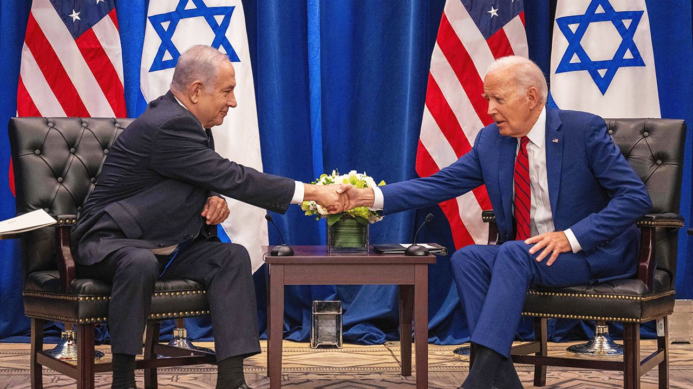
Listen to this story.Enjoy more audio and podcasts on iOS or Android.
THREE DAYS after Hamas fighters swarmed across the security fence of the Gaza Strip, killing more than 1,400 people and kidnapping about 220 more, the , America’s most modern aircraft-carrier, arrived in the eastern Mediterranean, accompanied by its fleet of warships. A second carrier strike group, led by the , is sailing to the Middle East, presumably to move closer to Iran. Aircraft and air-defence systems are being dispatched to the region, and troops are being readied, too.
It is a striking demonstration of the speed and scale with which America can deploy military power far from home. The show of force sends two messages. To Iran and its proxies: stay out. To Israel: you are not alone. American forces may yet be ordered into action amid signs that the war could spread. Israel is girding itself for a ground operation; violence in the West Bank is intensifying; and exchanges of missile and artillery fire between Israel and Hizbullah, a Lebanese Shia militia allied with Iran, presage a possible second front (see map).
image: The Economist
On October 22nd Lloyd Austin, America’s defence secretary, warned of the “prospect of a significant escalation” against American forces. Three days earlier an American warship in the Red Sea shot down cruise missiles and drones aimed at Israel by the Iranian-aligned Houthi militias in Yemen. American bases in Iraq and Syria have also been coming under attack by rockets and drones, presumably fired by other Iranian proxies. “This is the most dangerous moment since the cold war,” argues Matthew Kroenig of the Atlantic Council, a think-tank in Washington, DC. “If Iran and Hizbullah get involved, America may feel compelled to respond. And does China then see an opportunity to try something against Taiwan?”
President Joe Biden is thus turning into an unlikely wartime president. He was not exaggerating when he told Americans in a recent televised address that the world was at an inflection point. When America acted to help Ukraine resist Russia’s invasion many asked whether it had the wherewithal to deter a looming Chinese assault against Taiwan. The question is all the more acute now that America also seeks to defend Israel. In Mr Biden’s view, helping friends is not only possible but necessary. “American leadership is what holds the world together,” he declared. “American alliances are what keep us, America, safe.”
Yet academics debate whether and when the “unipolar” world, in which America bestrode the globe after the cold war, reverted to a “bipolar” one, in which America is challenged by China rather than the Soviet Union; or whether it is already a “multipolar” world. Joseph Nye, a Harvard academic, defined national power in three dimensions: military, economic and “soft power”, ie, the ability, among other things, to co-opt others to do your bidding.
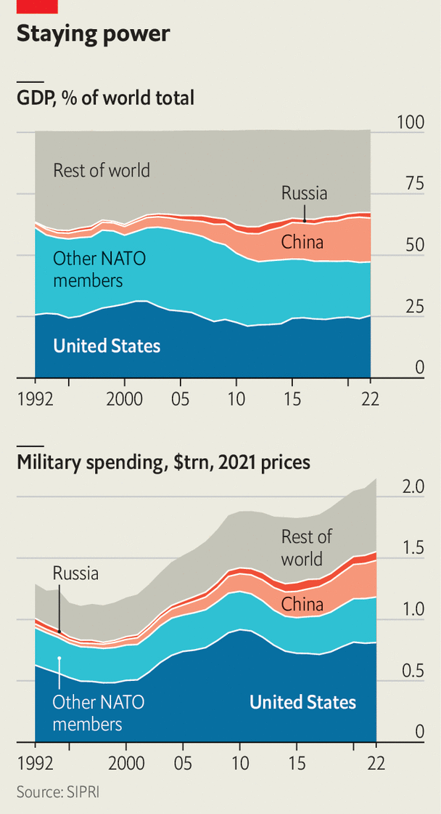image: The Economist
In military terms, America remains a colossus (see chart). Economically, the world is bipolar in a way it never was during the cold war, with China’s economic output somewhat smaller than America’s at market exchange rates, and surpassing it at purchasing-power parity (though Americans remain far richer than Chinese). Soft power is harder to measure, but it is probably fair to say the world is more multipolar, says Mr Kroenig.
That said, in the Middle East, America is still the “indispensable nation”, a concept popularised by the late Madeleine Albright, a former secretary of state. It is the only country willing and able to mediate between regional leaders and shape events. That includes securing the opening of a (still inadequate) humanitarian corridor in Gaza. “The phone in Beijing didn’t ring. The phone in Moscow didn’t ring. But the phone in Washington has been ringing off the hook,” notes Ivo Daalder, formerly America’s representative to NATO.
Set against that central role, though, is the fact that three Arab leaders—King Abdullah of Jordan, Abdel-Fattah al-Sisi, the Egyptian president, and Mahmoud Abbas, the Palestinian one—have been frosty towards Mr Biden. He had been due to meet them in Amman on October 18th, after visiting Israel. But a day earlier a blast in the grounds of a Gaza hospital killed scores if not hundreds of Palestinians. Palestinians say the carnage was caused by an Israeli strike; Israel said it was the result of an errant Palestinian missile. Mr Biden seemed to give Israel the benefit of the doubt (and later said more firmly that it was not responsible). The Arab leaders did not. They cancelled the summit after Mr Abbas declared three days of mourning and returned home. Just then America looked like the dispensable power.
Not where he would start
In office, Mr Biden’s priority has been revitalising the American economy. He borrowed the protectionist mindset of his predecessor, Donald Trump, and added large doses of subsidies and industrial policy to promote, among other things, green technology and the manufacture of semiconductors. Gratifyingly, the American economy has outperformed that of its rich-world peers. He hoped such policies would reduce social and political polarisation. He also hoped they would fortify America in its contest with China. Describing the era as one of “competition in an age of interdependence”, Mr Biden’s national security adviser, Jake Sullivan, says foreign and domestic policies are more interconnected than ever, for instance in efforts to restrict China’s access to advanced technology.
Abroad, Mr Biden sought to revitalise alliances that Mr Trump had either neglected or threatened to undo. He renewed the New START agreement with Russia, limiting long-range nuclear weapons, as part of his effort to establish “a stable, predictable relationship” with the Russian leader, Vladimir Putin.
Above all Mr Biden’s foreign policy meant doing much less in the Middle East, a region that had consumed the energies of many an American president. He sought to end the “forever wars” in Iraq and Afghanistan. He promised to restore the nuclear deal with Iran, which Barack Obama had signed in 2015 and Donald Trump abandoned in 2018, to contain the danger of a nuclear Iran. He initially said Saudi Arabia should be treated as a “pariah”. He reverted to America’s long-standing support for the “two-state solution”, ie, the creation of a Palestinian state alongside Israel, though he put little effort into it.
Much of this has gone awry for Mr Biden. Far from being stable and predictable, Mr Putin invaded Ukraine and information exchanges under New start are suspended. America’s chaotic departure from Afghanistan allowed the Taliban to return to power instantly. In the Gulf, meanwhile, China took the plaudits for the restoration of diplomatic relations between Iran and Saudi Arabia, appearing to fill a vacuum left by American indifference.
Changing focus
Mr Biden flew to the Saudi city of Jeddah in July last year to make up with Muhammad bin Salman, the crown prince. The president could not persuade the de facto ruler of the world’s biggest oil exporter to help moderate oil prices; instead, Saudi Arabia cleaved to a production deal with Russia to keep prices high. Moreover, he set a high bar for the normalisation of relations with Israel that Mr Biden hoped to bring about: concessions on the Palestinian question; a mutual-defence agreement with America; and uranium enrichment at home to counterbalance Iran’s nuclear programme. Often Team Biden fell back on benign neglect. “The Middle East region is quieter today than it has been in two decades,” declared Mr Sullivan—just days before Hamas’s onslaught.
America’s allies around the world, especially in Asia, ask two seemingly contradictory questions, says Kori Schake of the American Enterprise Institute, an American think-tank. First, will American resources and attention be diverted to the Middle East? Second, will America’s resolve in one or other crisis fail? “If we allow the security of Europe to be destabilised by Russian aggression, or allow Israel to suffer a terrible terrorist attack, they will believe that we don’t care about any other problem,” she argues.
America’s reliability as an ally comes down to both credibility and capacity. Given America’s many alliances, academics have long debated the importance of credibility: does a failure to live up to obligations to one ally affect commitments to others? America’s abandonment of the war in Vietnam, for instance, did not much damage its will to defend western Europe. The West went on to win the cold war.
These days the question is whether America’s pell-mell departure from Afghanistan undermined American credibility and encouraged Russia to invade Ukraine. Tod Wolters, a former military commander of NATO forces, suggested last year that it had been one of several factors. But Mr Sullivan insists that, in fact, leaving Afghanistan “improved our strategic capacity” to respond to the invasion of Ukraine and the threat to Taiwan.
As for military capacity, America must supply weapons to Ukraine, Taiwan and now Israel. That raises doubts about whether its defence industries can meet their needs as well as its own. In general America sends different weapons to the three countries, but some demands overlap. For instance, 155mm artillery shells are in short supply, and America is reported to have diverted a consignment intended for Ukraine to Israel. The war in Ukraine has shown how big state-on-state conflicts consume vast quantities of munitions. War games suggest that, in a war over Taiwan, America would quickly run out of the long-range anti-ship missiles that would be most useful in repelling a Chinese invasion of Taiwan.
Such problems can be solved with time and money, but both are in short supply because of America’s polarisation and congressional paralysis. Republicans, especially those of Mr Trump’s “America First” tendency, have grown ever more sceptical about supporting Ukraine in its war. And Congress, unable to pass bills since the removal of the speaker of the House of Representatives, Kevin McCarthy, on October 3rd, got a new one, Mike Johnson, only this week.
Mr Biden hopes cross-party sympathy for Israel will unblock things. He has asked Congress for a massive $106bn in supplemental national-security spending. He seeks to pre-empt future divisive votes on Ukraine by allocating $61bn in military and economic aid to the country, to tide it through America’s febrile 2024 election season. To make it more palatable, he has wrapped it in other spending that Republicans should find more appealing, including $14bn for Israel; $2bn for military-equipment transfers in the Indo-Pacific (probably to Taiwan); nearly $12bn in various measures to strengthen the processing of migrants on the southern border; and $3bn for the submarine defence-industrial base.
“Hamas and Putin represent different threats, but they share this in common: they both want to completely annihilate a neighbouring democracy,” declared Mr Biden. Yet Israel’s war is different from Ukraine’s in several respects. One concerns international perceptions. America helps Ukraine in the name of the UN charter, the inviolability of sovereign borders and human rights. In defending Israel, America is backing a country that breaches international law by building Jewish settlements in occupied territories, rejects statehood for Palestinians and stands accused of imposing collective punishments on Palestinians, if not committing war crimes, in its bombardment and siege of Gaza.
Middle East rules
Whereas the Western allies are almost united in defence of Ukraine, they are split on the question of Palestine. A UN Security Council resolution calling for “humanitarian pauses” in the fighting in Gaza was supported by France and 11 other countries, but drew an abstention by Britain (alongside Russia) and was vetoed outright by America, on the ground that it did not recognise Israel’s right to defend itself.
A second factor is America’s own role. In Europe it is acting at arm’s length, sending weapons, intelligence and money to Ukraine, but not troops. In the Middle East it is deploying its own forces to protect Israel from attack by Iran and its allies. Mr Biden’s embrace of Israel is sincerely felt—Mr Biden calls himself a Zionist—but is also an attempt to influence and restrain Israel. “If Biden’s hugging strategy works in delivering a more calibrated Israeli response, people will see it as Biden’s special flair,” says Emile Hokayem of the International Institute for Strategic Studies, a British think-tank. “If it does not work, America is going to be seen as a warring party.”
Regional dynamics add a further element. Arab states are ambiguous. Many detest Hamas, as a branch of the Muslim Brotherhood that challenges their rule, and have made peace with Israel, or have tacit relations with it. Yet when Palestinians fight, these countries are compelled to champion the Palestinian case. Having taken in successive waves of Palestinian refugees, they don’t want more. Indeed, they fear Israel secretly wants to resolve its problem by pushing out more Palestinians.
The crisis in Gaza, notes Mr Hokayem, has shifted attention back to Palestine after years of American efforts to ignore it, or to solve it from the “outside in”, ie, normalising relations between Israel and Arab states and only then dealing with the Palestinians themselves. Yet the endgame in Gaza is being left intentionally blank. Israel insists Hamas must not rule Gaza again; America says Israel must not occupy it again. Neither says what the alternative might be. Mr Netanyahu, moreover, has done his utmost to sabotage Palestinian statehood. After Hamas’s onslaught he, and many Israelis, will be even more convinced that it poses a mortal danger.
American officials readily admit they don’t have a strategy for the “day after”. The two-state model, says Mr Hokayem, “was a preference, not a policy”. If a solution seems impossible, it is only in part because of the inherent difficulty of reconciling two nationalist imperatives, Israeli and Palestinian, on the same hallowed land. It is also “the cost of American retrenchment”, says Mr Hokayem. “It is more difficult for America to come back into the game having been outside for a long time.”
China and Russia may offer no substitute for America’s diplomacy, but they will be more than happy to see American discomfiture and will play up the claims of American double standards. Ahead of his visit to Washington this week, Wang Yi, China’s foreign minister, described Israel’s actions as “beyond the scope of self-defence” and did not mention Hamas.
The impact of the crisis may be more tangible among some “swing states”, says Richard Fontaine of the Centre for a New American Security, a think-tank in Washington, DC. These are countries that are “multi-aligned”, and for whose allegiance America, China and Russia compete ever more intensely. Saudi Arabia may demand a higher price from Israel and America if it is ever to follow its Gulf neighbours, Bahrain and the United Arab Emirates, in establishing formal ties with Israel.
Turkey, an equivocal ally of the West’s in the Ukraine crisis, could turn more hostile. Though he has tried to patch up relations with Israel, and condemned the killing of Israeli civilians, President Recep Tayyip Erdogan hosts Hamas leaders and has sharpened his denunciation of Israel’s response as “amounting to genocide”. Indonesia, the world’s most populous Muslim country, inevitably sympathises with Palestinians. Though India thinks of itself as non-aligned and a friend of anti-colonial movements, it has expressed solidarity with Israel, feeling sympathy for it as a fellow victim of Islamist terrorism.
South Africa sees Israel’s treatment of Palestinians as akin to apartheid. African countries, more broadly, feel America either ignores conflicts on their continent—such as the war in Sudan—or is hypocritical when it comes to human rights. They regard America not so much as indispensable as absent. Many fear Mr Biden will not keep his promise to visit Africa this year.
Countries of the global south have also been courted more avidly by big powers. Though critical of Russia’s invasion they do not want to be trapped in a new cold war. America has been trying to woo them through such things as boosting the lending capacity of the IMF and World Bank, and creating a global infrastructure fund to compete with China’s Belt and Road Initiative (BRI). But it has a long way to go. On the same day as Mr Biden was in Tel Aviv, 20-odd leaders were in Beijing for a BRI summit hosted by China’s leader, Xi Jinping.
A day later, in a televised address, Mr Biden made the case for America as the world’s “essential nation”. In Europe and the Indo-Pacific his administration has acted nimbly, knitting existing alliances more tightly and creating new partnerships, helped by the aggression of Russia and China. In the Middle East, though, America is more alone in its defence of Israel, and more liable to lose friends and partners than win over new ones. ■
Why Saudi Arabia and the UAE want to keep links with Israel
Are the Abraham accords over?
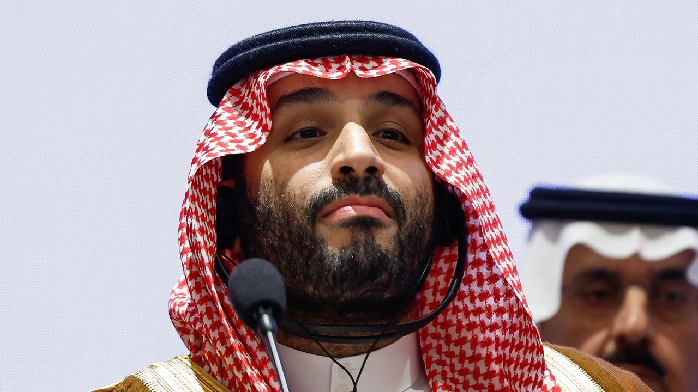
IT FEELS like an image from an alternate reality. Hundreds of bankers and executives will descend on Riyadh this week for the Future Investment Initiative, a flashy investment conference dubbed “Davos in the desert”. The money men will try to pretend it is business as usual but the Middle East is boiling.
The war between Israel and Hamas is threatening to trigger a broader conflict that draws in the Gulf states, whose booming economies are key to global oil and gas markets. On October 20th an American destroyer in the Red Sea intercepted cruise missiles that Iran-backed Houthi rebels in Yemen fired towards Israel. That day President Joe Biden said the goal of Hamas’s attack was to prevent a peace deal between Israel and Saudi Arabia. “I was about to sit down with the Saudis….the Saudis wanted to recognise Israel,” he said. The oil price, a barometer of regional escalation risk, has hit $92 per barrel.
Gulf states had hoped this would be a year of de-escalation in the region. They wanted calm to focus on ambitious plans to diversify their economies. Now the region’s oldest conflict has roared back to life. For one Gulf monarchy, Qatar, which has supported Hamas, the immediate goal is self-preservation. Saudi Arabia and the United Arab Emirates (UAE), however, want to weaken Hamas, forestall a wider confrontation with Iran and somehow keep alive their vision of an autocratic but more peaceful and prosperous region. It is a delicate and dangerous balancing act.
Qatar looks vulnerable. It is both an American ally and a supporter of Hamas. Since October 7th, when Hamas militants murdered more than 1,400 people in Israel, those ties have become a source of embarrassment and nervousness. Some of Hamas’s leadership lives in Doha, the Qatari capital. The gas-rich emirate donates up to $30m a month to Hamas-run Gaza. For years Qatar has told allies that its ties with Hamas were a benefit: it could be an interlocutor between those groups and the West.
For now Qatar is scrambling to show that it can still be useful to America. On October 20th Hamas freed two of the more than 200 hostages it seized during the rampage, both American-Israeli dual citizens, in a deal that Qatar helped broker. But there are also signs of denial and panic in the tiny, wealthy state. On October 14th, a Qatari diplomat contacted your correspondent to say that Ismail Haniyeh, the Hamas leader, was not in Doha but in Turkey. Hours later, Iran’s foreign minister held a televised meeting with Mr Haniyeh—in Doha. Qatar’s ties with Islamist groups were one reason why four Arab states imposed a travel-and-trade embargo on the tiny emirate in 2017. When the dust settles on this war, the country could come under greater American pressure to sever its links with militant groups.
The UAE, which in 2020 became the first Gulf state to recognise Israel, has taken a different stance. Unlike most of its neighbours, its initial statement on the October 7th attack was one of sympathy with Israel, and its leaders made multiple condolence calls to their Israeli counterparts. They loathe political Islam, which they see as a threat, and in private are scathing in their criticism of Hamas.
Hours after the explosion at Gaza’s Ahli Arab hospital on October 17th, the Israeli army denied that it targeted the facility in an air strike (and the evidence, so far, seems to support its denial). The UAE still joined other Arab states in condemning Israel. Such statements, however, should be taken as diplomatic theatre: ties between the two countries remain solid.
Saudi Arabia has tried to chart a middle course. Its response to the Hamas attack was to cite a list of Israel’s past misdeeds and call for an immediate ceasefire—the sort of statement it always issues after flare-ups in the Holy Land. But there are also signs that its stance has shifted.
On October 17th Turki bin Faisal Al Saud, who led the kingdom’s intelligence service from 1979 to 2001, spoke in English to an American think-tank. His words carry weight as a former mandarin and a member of the royal family. He denounced Hamas for killing civilians and suggested it was un-Islamic. He condemned Israel too, for both its “indiscriminate bombing” in Gaza this month and the crimes of its half-century occupation. He made little mention of Iran, which is Saudi Arabia’s regional nemesis and one of Hamas’s main backers.
A day later Al Arabiya, a Saudi-owned news channel, aired a tough interview with Khaled Meshaal, the former head of Hamas. Rasha Nabil, the presenter, asked him repeatedly how Hamas could expect support from other Arab countries after it made a unilateral decision to go to war, pressed him to condemn the murder of Israeli civilians and needled him on whether Iran’s help had “lived up to your expectations”. It was an interview the likes of which Hamas officials are almost never subjected to on Arabic-language channels. Mr Meshaal seemed rattled. Clips of the interview were widely shared on social media and even on Israeli television.
Three conclusions can be drawn about Saudi Arabia’s intentions. First, it wants to undercut Hamas. Second, it wants to avoid a broader confrontation with Iran. Prince Turki implied that rapprochement between Saudi Arabia and Iran was still alive. The two foes agreed in March to reopen embassies and ease their years-long feud. The Saudis are nervous that a regional war could lead to Iranian-sponsored attacks on the kingdom, like the one in 2019 that briefly disabled half of its oil production.
Lastly, Saudi Arabia is not shutting the door on normalisation with Israel. America spent much of this year pushing for a deal that would have seen the Saudis recognise Israel; the kingdom wanted a defence pact with America in return. The Saudis had seemed content to push for token gestures toward the Palestinians—not an end to the occupation, merely to make it less painful. Now Muhammad bin Salman (pictured), the Saudi crown prince and the country’s de facto ruler has called for the creation of a Palestinian state along the region’s pre-1967 borders. Talks with Israel will continue, albeit more quietly than before, but the price for Israel will now be higher.
Much now depends on the nature of Israel’s looming ground invasion of Gaza: as the civilian death toll rises the Gulf states will come under growing pressure at home and across the Arab world to condemn Israel and sever ties. Still one thing the Gulf leaders can all agree on: they want the war to end. The financiers gathering in Riyadh this week want to talk about billion-dollar ideas for travel, trade and tourism. None of them is likely to come to fruition if there is a risk of missiles flying overhead.■
Iran’s ayatollahs play the Middle East’s most dangerous game
They want to escalate without triggering full-blown war
THE WARNING SIGNS that Israel’s war with Hamas may become a wider Middle East conflagration are flashing ominously. America has sent a second carrier strike group led by the to the Persian Gulf. “There’s a likelihood of escalation,” said Antony Blinken, the American secretary of state, on October 22nd. The chances of further attacks by Iranian proxies on American forces are growing, he continued: “We don’t want to see a second or third front develop.”
Fears are also growing in Lebanon that Israel could use America’s cover to launch a pre-emptive strike. Israel has evacuated its towns near the border with Lebanon and Binyamin Netanyahu, Israel’s prime minister, has cautioned that if Hizbullah, an Iran-backed militia in Lebanon, enters the fighting, the consequences for Lebanon will be devastating. One reason Israel has delayed its offensive in Gaza may be to bolster its preparations for escalation on its northern front. Iran’s foreign minister has said the region is like a “powder keg”.
Iran’s autocratic rulers hold one of the matches that could set it alight: an “axis of resistance”, or network of violent proxies across the region. They have spent two decades building this up in Iraq, Lebanon, Syria and Yemen. Iran preys on places where the local polity is weak, where it is easy to funnel in personnel and weapons and where no external actor can challenge it, according to the International Institute for Strategic Studies, a think-tank based in London. Iran’s ability to cause mayhem at arm’s length—through Hamas, Hizbullah, Iraq’s plethora of Shia militias and Yemen’s Houthis—may even give it more leverage than its conventional military capabilities, which are relatively weak.
Iran’s goal right now, as it has been over the past decade, is not to provoke outright war with the West and its allies but to sow uncertainty and instability. Just as it has hovered on the threshold of becoming a nuclear power, so it maintains strategic ambiguity with the axis. It denies it is in charge while supplying armed groups like the Houthis with arms, giving them training and using them as fronts to conduct attacks, such as a missile strike on Saudi Aramco in 2019 which temporarily shuttered 5% of global oil production. The purpose is to intimidate while complicating the West’s calculus. That strategy pleases Iran’s ever-closer friend, Russia. Similarly isolated from the West, it engages in weapons trade and sanctions-busting with the Islamic republic: think of Iranian-designed Shahed-136 kamikaze drones killing Ukrainians.
The present crisis shows the opportunities and problems of Iran’s approach. It has long sponsored Hamas but did not appear to know in advance about its attack on Israel on October 7th, according to Western officials familiar with the matter. Yet it has sought to capitalise on Hamas’s atrocities and mobilise the axis of resistance. Hizbullah and Israel have exchanged fire, with the explicit support of Iran and America, respectively. As many as 19 of Hizbullah’s fighters have been killed. The Houthis, who control Yemen’s capital, have launched three medium-range cruise missiles, recently acquired from Iran, and a number of drones towards Eilat, Israel’s port city (they were intercepted by an American destroyer). And Iranian-backed Shia militias in Syria and Iraq have broadened the struggle by repeatedly targeting bases housing American troops with rockets and drones (America has drawn down its diplomatic presence in Iraq as a result).
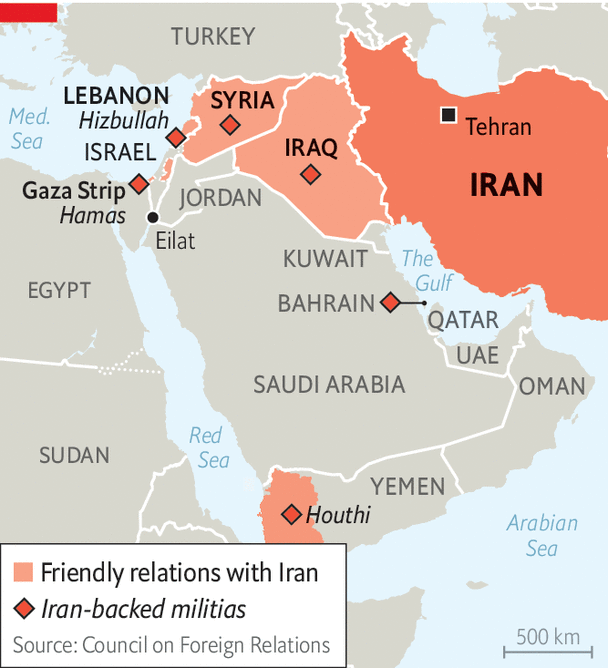image: The Economist
For Iran, there are some obvious benefits. The conflagration in Gaza has halted—even if only temporarily—talks on normalising relations between Israel and Saudi Arabia. Any such agreement would mark a further step in the Abraham accords through which Bahrain, Morocco, Sudan and the United Arab Emirates have since 2020 established diplomatic ties with Israel. Iran’s Shia ayatollahs cannot stand the idea of being isolated as Sunni-led Muslim states and Israel co-operate more. A push to delegitimise the Abraham accords continues: at a meeting of Muslim foreign ministers in Saudi Arabia on October 18th, Iran called on Muslim countries to impose an oil embargo on Israel. The Iranian regime is backing calls to push Egypt to take in Palestinians from Gaza, perhaps in the hope of aggravating tensions between Israel and its oldest Arab ally.
Regional turmoil also means more cash for Iran, at least for now. Oil prices have climbed by over $5 per barrel since October 7th. America is anxious to tamp down inflation in the run-up to its election next year and has been tacitly allowing Iran to export more oil, despite formally retaining sanctions. “Those Iranian barrels are very important” to Joe Biden, says Ahmed Mehdi, a London-based oil analyst. Production has topped 3m barrels per day, its highest levels since the Trump administration imposed sanctions in 2018. Year on year, Mr Mehdi says, exports are up by over a third.
Yet the escalating proxy war with America and its friends comes with big risks for Iran. At home officials crow that they have become “statesmen” again, with president Ebrahim Raisi—viewed by many in the West as a hardline pariah—speaking to the French president, Emmanuel Macron, in recent days. Ordinary Iranians are less impressed. A regional war could prompt a new cycle of protests at home. Armita Geravand, an Iranian schoolgirl who collapsed on October 1st after a beating from the morality police, according to local activists, has been declared brain-dead—news that could revive the outrage that brought Iranian protesters into the streets in 2022 after the death in custody of Mahsa Amini, detained for “improperly” wearing the mandatory veil. Iranians are exhausted by their regime’s adventures abroad and reluctant to endure more suffering for Palestine. Government-organised protests have been sparsely attended. A minute’s silence at a football match in Tehran for those killed in Gaza was interrupted by raucous guffaws. “Neither Gaza nor Lebanon,” protesters chanted from their windows. “We sacrifice our lives for Iran.”
Iran’s shadow war is a delicate game and it is not clear that the country can control its proxies. Since America’s assassination of Qassem Suleimani, one of the masterminds behind the axis of resistance, three years ago, Iran’s satellites have increased their autonomy. As they hurl threats of war along with their rockets, they may find it hard to step back from their rhetoric. Each has set “red lines” for intervention against Israel and the West. A failure to respond could puncture their credibility with local supporters. An Israeli ground invasion of Gaza could force their hand.
The proxies must also balance their military aspirations with the interests of their host countries. According to Iranian officials, Bashar al-Assad, the Syrian president, has told Hizbullah he has no desire to heed its calls to attack Israel from his territory. In his view, Hamas betrayed him by siding with the rebellion against him in 2011 after he gave them sanctuary. He does not want to fight for them now.
Lebanon fears being another sacrificial pawn. Its Shias are the country’s largest sect, but its other 17 official denominations form a majority. Tellingly, Hassan Nasrallah, Hizbullah’s leader famed for his belligerent speeches, has shied from addressing his public from his bunker in Beirut since the fighting began. The threat of war has kiboshed Lebanon’s hopes of a tourism revival. Lloyd’s, an insurance firm, has signalled it could withdraw cover, and Middle East Airlines, Lebanon’s national carrier, is docking some of its fleet in Turkey. America has told its citizens to leave. The Lebanese prime minister has said “the decision regarding war and peace” is out of his hands.
If Iran’s proxies attack American interests, or possibly Israel, it is most likely that America retaliates against them, rather than their sponsor Iran, in the first instance. Still, that is a high-stakes gamble. And in the long run Iran’s decision to mobilise the axis of resistance signals it is heading towards isolation and autocracy. Only a month ago, the regime was celebrating a prisoner exchange with America and the imminent transfer to Iran of $6bn of frozen oil revenues. Ayatollah Ali Khamenei had blessed direct talks for the first time since the Trump administration withdrew from a nuclear deal. Some spoke of a new detente. Now that lies in tatters—and the chances of a catastrophic wider war, while still low, are far too high for comfort. ■
Can the Palestinian Authority control Gaza if Hamas is ousted?
It may be lucky to keep control of the West Bank by the end of this war
AS ISRAELI TROOPS prepare to invade Gaza, one question keeps coming up: who should take control of it after they have rooted out Hamas—if, indeed, they are able to do so? Many, especially Israel’s allies, are looking to the Palestinian Authority (PA), which was thrown out of Gaza by Hamas almost two years after Israel withdrew its troops and dismantled its settlements there in 2005. But the PA seems to be in no position to take charge of the coastal enclave. In fact there are no guarantees that by the end of this war it will even be in control of Ramallah, the de facto capital city of the West Bank.
Born out of the Oslo Accords of 1993, the PA was supposed to be the basis of a future Palestinian state. But as the prospects of that state’s establishment have receded, so has confidence in the PA, which is led by the 87-year-old Mahmoud Abbas (pictured) and is widely seen by Palestinians as corrupt and incompetent. Mr Abbas was elected to serve a four-year presidential term in 2005—and has been there ever since. “There is not really a whole lot left in the legitimacy tank of the PA,” says Salam Fayad, a former prime minister of the PA. “Unless they really change course very rapidly, the whole thing could fall.”
Partly because it has been unable to protect Palestinian civilians on the West Bank from attacks by Israeli settlers or halt the expansion of Israeli settlements, the PA has lost control of security in swathes of the West Bank to militant groups such as Kata’ib Jenin and the Lions’ Den in Nablus in recent years. The slaughter of 1,400 Israelis by Hamas on October 7th, Israel’s subsequent bombardment of Hamas in Gaza, and a sharp increase in attacks by settlers have all pushed it into an even more precarious position.
image: The Economist
In a poll in September, 53% of Palestinians said they thought an “armed struggle” against Israel was the best way to establish a state, compared with just 20% favouring negotiations. As the war in Gaza goes on, along with the flow of pictures coming out of the enclave that show civilians killed by Israel’s bombing, Hamas’s popularity appears to be increasing, while the PA’s seems to be plummeting. When news broke of an explosion at Gaza’s Ahli Arab hospital, furious crowds thronged into the streets of the West Bank. Their anger was not, however, directed at Israel, which most Palestinians believe bombed the hospital. (A more likely explanation for the blast, according to independent analysts and Western intelligence agencies, is that it was caused by a misfired rocket launched from Gaza by Islamic Jihad, another Palestinian militant group.) Instead anger was directed at the PA. Hundreds marched on Mr Abbas’s presidential compound in Ramallah. In an echo of the protests that rocked Arab countries and toppled governments in 2011, many chanted: “The people want the fall of the president.”
Fatah, the Palestinian faction led by Mr Abbas that dominates the PA, was already riven by infighting over who would succeed him. Now it is being further torn apart over its stance on Hamas. Those close to the leader believe Fatah—and the PA, with which it has become synonymous—can muddle through to see the crushing of its Islamist rival, which could perhaps give it a chance to take back control of Gaza. However, many among the party’s rank and file think differently. “A collapse [of Hamas] in Gaza will lead to a collapse in Fatah,” says a Fatah official in Ramallah, as he agonised over the safety of his relatives in Gaza.
Even those who have little love for Hamas and its Islamist fervour are dismayed by the prospect of its being wiped out by Israel. They are urging Mr Abbas to set aside factionalism and to rally the secular Fatah movement behind Hamas in a unity government. “Both sides need each other,” says Raed al-Debiy, a Fatah official in Nablus, the West Bank’s biggest city. “Hamas needs the international legitimacy of Fatah, and Fatah and the PA need the popularity of Hamas.”
The PA’s legitimacy crisis is being intensified by a financial one. Although the PA has not been able to evolve into an independent Palestinian state, many Palestinians accept it simply as a source of salaries and public-sector work. Yet it seems it may not be able to provide even these. In the next few weeks the PA is scheduled to pay public-sector salaries, including the wages of 34,000 members of the Palestinian Security Forces. But it can afford to pay less than 50% of this month’s wage bill, according to one senior PA official, who added that, even before the current war in Gaza, Israel was withholding customs revenues which it is obliged to hand over. This cash crunch is likely to become more acute as a result of the war because Israel has closed its borders to the thousands of West Bank Palestinians who usually work in Israel and pay income taxes to the PA.
Members of PA’s security forces are already accused by friends and family of being proxies for Israel’s occupation of the West Bank. In many cases, the only thing that keeps them from leaving their posts is their monthly pay-cheque. The PA has weathered previous financial storms and paid salaries late, or been unable to pay them in full, in the past. But the latest projected pay cut is far larger. If it goes ahead, tens of thousands of young men in the PA’s police and national security forces may not show up to work. Some would be ripe recruits for other armed groups in the West Bank including Hamas and Islamist Jihad, the group that may have been responsible for the hospital blast in Gaza. In any case, it is hard to see how unpopular and unpaid security forces will stand their ground if Palestinians try to sack the presidential palace. “The Palestinian public is reaching a boiling point and an explosion against the authority,” says Amjad Bashqar, a Hamas official in Nablus. “The only thing delaying it is our focus on the resistance [against Israel]”. ■
America’s House of Representatives finally has a speaker
What might Mike Johnson make of the worst job in Washington?
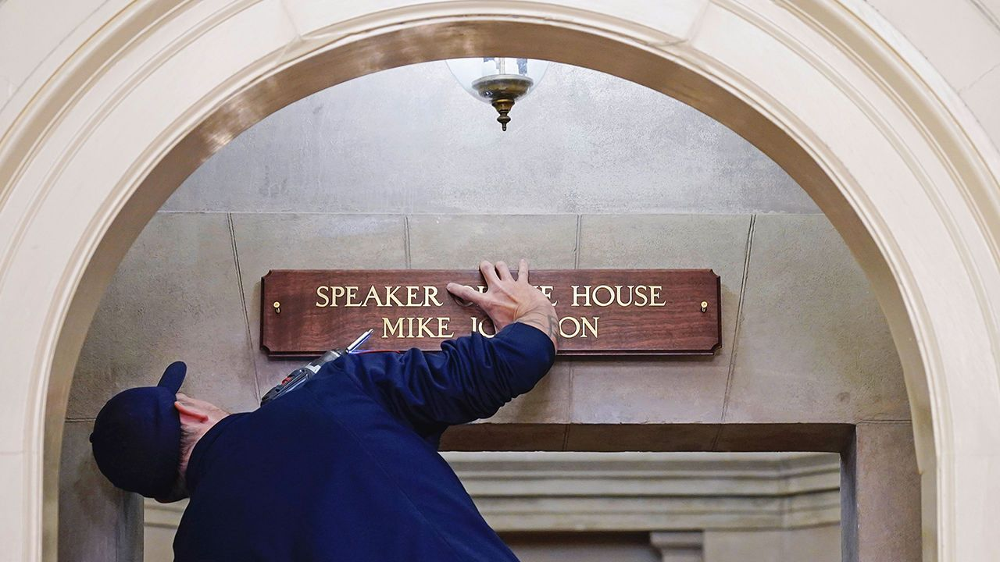
Listen to this story.Enjoy more audio and podcasts on iOS or Android.
As America’s House of Representatives began its fourth week without a speaker, it seemed like nothing would ever get Republicans to unite behind a new leader. But it turns out something could bring the fractious party together: sheer exhaustion, mixed with the possibility of having to govern with Democrats.
On October 25th Republicans unanimously voted for Mike Johnson, a 51-year-old congressman from Louisiana, to lead the lower chamber. Three previous nominees had dropped out after failing to get the support needed for the job. Mr Johnson, a lawyer and self-described “full-spectrum conservative”, has quietly risen through the ranks on Capitol Hill since arriving in 2017. He held relatively low-key positions in Republican leadership and for two years led the Republican Study Committee, an ideological caucus that counts a large majority of House Republicans as members. Yet Mr Johnson has never even served as a committee chairman.
Democrats who worked with hard-right Republicans to dispose of Kevin McCarthy may have hoped for a more moderate replacement. They are likely to be disappointed with the outcome. Mr Johnson’s congressional website describes him as “a leading defender of the right to life, religious liberty, free speech, the Second Amendment and free-market principles”, and the father of four stands out as a social conservative even within the Republican Party. Compared with Jim Jordan, a mentor whose own speakership bid failed, Mr Johnson has had a little more success sponsoring bills that actually became law.
Perhaps most troubling, Mr Johnson has indulged some of his party’s worst impulses in recent years. He voted against certifying the 2020 election results and lobbied House Republicans to support a long-shot lawsuit to invalidate electoral-college votes in several states won by Joe Biden. Will Mr Johnson behave responsibly now that he is in a real position of power—especially as he has to negotiate with Democrats, given Republicans’ slim nine-seat majority in the House?
After the painful process of finding a leader, Republicans will be eager to avoid such an embarrassing spectacle again. And, lacking Mr McCarthy’s baggage, the new speaker could have some space to compromise. For now, at least, he is operating with some sense of urgency.
“We’re going to dispense with all the usual ceremonies and celebrations that traditionally follow a new speakership, because we have no time,” Mr Johnson said minutes after getting promoted. “You’re going to see an aggressive schedule in the days and weeks ahead. You’re going to see Congress working as hard as it’s ever worked.” He added with a smile, “I want to thank you for being patient with us.”
The House immediately moved to pass a resolution condemning Hamas: its first vote will also be the easiest. The first real challenge will be finding a way to fund the government. On September 30th the House passed a bill to temporarily fund it at current levels. This averted a shutdown—but only until November 17th. Mr Johnson voted against the so-called continuing resolution last month, though he showed more pragmatism earlier in the year when he supported a bill that raised the debt ceiling.
In a letter to colleagues on October 23rd Mr Johnson the candidate laid out an ambitious plan to pass a series of spending bills instead of one large long-term funding package. But intraparty fighting has made it hard to agree within the House, let alone negotiate with the rest of the government. “They actually have to pass something and work with the Senate and work with the president,” says Philip Wallach, an expert on Congress at the American Enterprise Institute. “He finds himself in the worst sort of predicament from day one.”
Mr Johnson acknowledged that the House may need to pass another stopgap bill to fund the government into next year, hoping to “ensure the Senate cannot jam the House with a Christmas omnibus”. (Such a bill would package several measures into one big piece of legislation.) That does not mean a government shutdown is entirely out of the question. Even if Republicans finally agree on legislation, Democrats could find it unacceptable and bet that Republicans would receive more blame for a government closure.
The other urgent matter is the national-security funding request made by Mr Biden on October 20th. The spending package would allocate $61.4bn to fund Ukraine’s defence; $14.3bn for Israel; $13.6bn for America’s immigration crisis; $9.15bn in humanitarian aid for Gaza; and an additional $2bn in foreign support for the defence budgets of countries in Asia. The proposal should easily pass the Senate, which plans to hold hearings on the legislation on October 31st. Yet House Republicans have grown much more sceptical about assisting Ukraine.
The new speaker had yet to reveal his strategy on the national-security request by the time this article was published, but he did call the aid package a “top priority”—a welcome about-turn for Mr Johnson, who has routinely voted against aid for Ukraine. “We have to ensure that Vladimir Putin is not successful,” he told reporters. One possibility will be dividing each of the requests into separate bills and allowing separate votes. But he will have to move cautiously on this given the Republican Party’s isolationist streak
One member of Congress can still call for a vote to oust Mr Johnson, and it would take only a handful of Republicans working with every Democrat to remove him from the speakership. House Republicans certainly want to avoid the chaos and drama of another speakership fight. But if recent weeks have shown anything, it is that their capacity for political self-harm remains unmatched.■
The Republican Party no longer believes America is the essential nation
How the GOP went from isolationism to internationalism and back again
Listen to this story.Enjoy more audio and podcasts on iOS or Android.
Except for an admiration for Ronald Reagan and tax cuts, it is hard to see how the Republican Party of Donald Trump resembles the Republican Party of George W. Bush just two decades ago. In place of the “compassionate conservatism”, which aimed for a grand bargain to settle the status of illegal migrants, is a paranoid nativism. In place of a foreign policy that saw America as a protector of freedom and democracy is a new doctrine of America First that shuns allies (barring Israel) and would give up on the Ukrainians fighting off a Russian invasion, even when no American soldiers are at risk. The free-traders in the Bush administration entered into trade deals with 13 new countries and tariff rates remained close to zero; Mr Trump wants to put a 10% tariff on all imports.
In the aftermath of the Hamas attack on Israeli civilians on October 7th, something like the old party shone through. Republicans unanimously condemned the terrorism and reaffirmed their alliance; they promised to send billions of dollars in security assistance to Israel; and some rattled their sabres at Iran, which sponsors Hamas among other proxies in the region. At the same time, though, much of the party is balking at the prospect of sending arms to Ukraine, which Reagan and both Bushes would surely have done. What happened? The obvious answer is: Mr Trump. But to make sense of this bewildering shift, it helps to look beyond a bit further back.
Ever since 1856 the Republican Party has published a party platform every four years as part of its presidential nominating convention—all the way to 2020, when it just re-endorsed the previous one. Read through them all (and the 2016 one twice) and the long intellectual arc that somehow bent towards the party’s current isolationism becomes a bit more comprehensible.
In this longer view, the free-trade and free-market orthodoxy that the party was most known for in the modern era looks more like an aberration. A deep protectionism starting with Abraham Lincoln ran for nearly a century until Dwight Eisenhower snapped it. What followed—six decades of internationalism and liberalised trade—now looks a bit more like an interregnum.
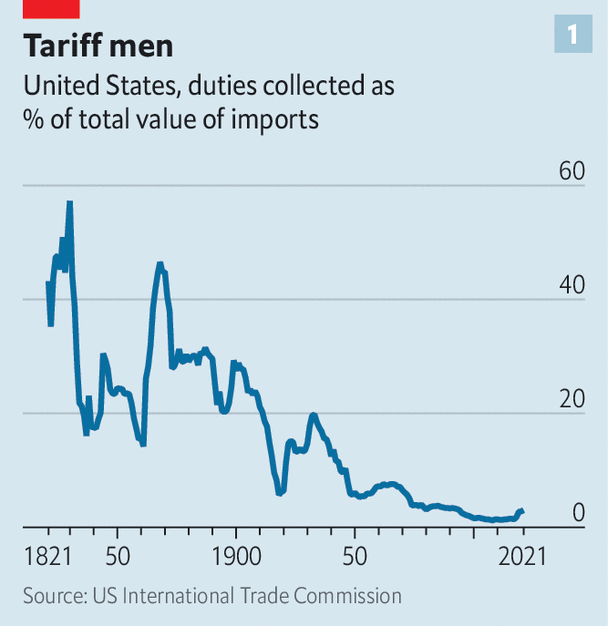image: The Economist
Start with the demise of free trade. When Mr Trump came into office he slapped tariffs on antagonistic countries like China and also friendly ones like South Korea and Canada. The protectionism was a stark reversal from the “neoliberal” days of the 1990s, when the American left and right mostly agreed on expanding global trade. Mr Trump’s universal 10% proposal would bring tariffs on imports back to their highest level since the 1940s (see chart 1).
For much of its history, American industry was safely ensconced under the broad protective tariff of the sort that Mr Trump proposes. The protectionist impulse has roots that run deeper than even the modern two-party system. Henry Clay, the eminent Kentucky senator, championed what he called the “American system” in the early days of the republic. He and his fellow Whigs advocated for protectionist tariffs, heavy infrastructure spending and stable monetary policy through a national bank (then a contentious issue). After the party imploded in the 1850s, Whiggish ideas found their home in the new Republican Party, which had coalesced around halting the expansion of slavery.
“I was an old Henry Clay tariff Whig,” Lincoln wrote in 1859. “In old times I made more speeches on that subject than on any other. I have not since changed my views.” While Lincoln was president, tariff rates nearly tripled to around 45%, in part to fund the war effort. Republicans remained aligned with incumbent businesses and therefore staunchly protectionist until the second world war. “The Republican Party stands now, as always, in the fullest sense for the policy of tariff protection to American industries and American labour,” the party wrote in its platform of 1916, protesting against Woodrow Wilson’s reduction of average tariff rates from 40% to 27%. In 1936 the party howled in protest at Franklin Roosevelt’s liberalised trade regime, arguing that “its effect on agriculture and industry has been destructive”.
That’s me in the corner
If Mr Trump returns to office, he has pledged that “the travel ban [on Muslims] is coming back even bigger than before and much stronger than before”. He has also repeated his aim to end birthright citizenship for children born in America to foreign parents (even though this seems to directly contradict a provision of the 14th Amendment), an urge that seems older. In the 1889 case upholding the plain racial discrimination of the Chinese Exclusion Act of 1882, which barred all Chinese labourers for a decade, the Supreme Court wrote in a unanimous opinion that “the presence of Chinese labourers had a baneful effect upon the material interests of the state, and upon public morals; that their immigration was in numbers approaching the character of an Oriental invasion, and was a menace to our civilisation”.
Conservative enthusiasm for immigration has also waxed and waned over the past century—inversely to the level of migration. The Ellis Island era, when millions of Europeans passed the Statue of Liberty on their journey to America, swiftly led to a nativist counterreaction. At the start of the 20th century as many as one in seven American residents were foreign-born—a similar share to the present day. Then as now, much of the opposition was couched in terms of protecting domestic labourers. “In the further interest of American workmen we favour a more effective restriction of the immigration of cheap labour from foreign lands,” the Republican presidential platform of 1900 argued.
Sometimes the motivation was explicitly racial. In 1924 Republicans slammed the country’s borders shut, passing the Johnson-Reed Act that completely banned immigration from Asia and established strict quotas on European migrants. “America must remain American,” said President Calvin Coolidge as he signed the bill into law. Albert Johnson, a congressman and one of the bill’s namesakes, was a prominent eugenicist. “Our capacity to maintain our cherished institutions stands diluted by a stream of alien blood with all its inherited misconceptions,” he said in a committee hearing that year. Migration into America that was once torrential dwindled to a trickle, until the policy was reversed in 1965 by Lyndon Johnson.
This too became a cross-party consensus. When he accepted the Republican nomination for president in 1980, Reagan adhered to the standard American dogma on migration, which lionises immigrants past while expressing some scepticism towards immigrants present and future. “Can we doubt”, he asked, “that only a divine providence placed this land, this island of freedom, here as a refuge for all those people in the world who yearn to breathe free?” As president, he signed a law in 1986 that sought to solve the problem of illegal immigration by granting amnesty to those already in the country while stiffening border security and employer checks on work eligibility. The party’s transformation seemed complete.
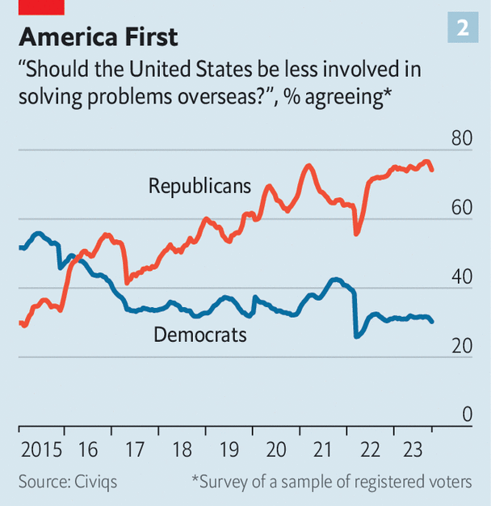image: The Economist
But the nature of ideas is that long ostracisms can end suddenly. So it is with the isolationist strain within American conservatism. The most ardent supporters of Mr Trump see foreign entanglements—even pledged alliances—as pointless distractions. One of the reasons that the berserker caucus of the Republican Party defenestrated Kevin McCarthy, the speaker of the House, was their strong opposition to continued military aid to Ukraine. Mr Trump has pledged to end that war on his first day in office—presumably by promoting capitulation. In one recent vote on a bill that would fund training for Ukrainian military officers, a majority of Republicans in the House were opposed.
At the start of the 20th century, too, Republicans were staunchly sceptical of multilateralism. Democrats were the relatively internationalist party, then as now. Woodrow Wilson famously outlined the Fourteen Points in his address to Congress—among them “economic free trade on the seas during war and peace” and the creation of the League of Nations. Yet America never joined because of Republican opposition. In the 1930s Gerald Nye, a prominent Republican senator, urged the passage of several neutrality acts making the export of arms to warring nations illegal. The original America First Committee was led by isolationists, including the aviator Charles Lindbergh, wanting to prevent entry into the second world war. It seemed finished when the first bombs fell on Pearl Harbour; 80 years later, its titular slogan commands Republican foreign policy.
That’s me in the spotlight
Even after the second world war, isolationism persisted in the form of Robert Taft, a senator from Ohio, who had backed the original America Firsters and was vehemently opposed to post-war multilateralist institutions like the reconstruction of Europe through the Marshall Plan (though he later came round to that), the NATO military alliance and the World Bank. In a speech published in 1951 castigating America’s entry into the General Agreement on Tariffs and Trade (GATT), the predecessor of the World Trade Organisation (WTO), and the Korean war, he stated his objection plainly: “If in the great field of foreign policy the president has arbitrary and unlimited power, as he now claims, then there is an end to freedom in the United States in a great realm of domestic activity.”
For all the attention lavished on Reagan as an ideological transformer of the party, too little is paid to Eisenhower in reshaping the party for the modern age. The Republican primary in 1952 was a severe contest between Taft and Eisenhower for the future of the party, decided by a narrow margin and much vote-jockeying at the Republican convention in Chicago. “We favour the expansion of mutually advantageous world trade,” the party platform proclaimed after Eisenhower’s success. It blamed the Truman administration for abandoning the friendly nations of Eastern Europe to Soviet aggression; it pledged to use its “friendly influence” in Western Europe to actually contain further advances of communism.
If Taft had triumphed, it would certainly have read differently. “Taft dying [one year later, in 1953] is important,” says Matthew Continetti, a scholar of conservative thought at the American Enterprise Institute, a think-tank. “And the echo of that is in 2018, when John McCain dies. These leaders kind of possess special qualities inherent to their person. And when they go, a whole school of thought goes with them.”
With some modifications, Eisenhower’s vision held sway over the party for decades. Persuasion had something to do with it, certainly. But the essential glue may have been great-power competition with the Soviet Union, when capitalism became synonymous with freedom. Friedrich Hayek’s idea, published first in the 1940s, that central planning was the road to serfdom began to hold more sway when ruthless Stalinism persisted and communist revolutions began to spread.
The inverse of Hayek’s thesis—that free markets themselves led to free societies—was forcefully argued by Milton Friedman in his 1962 classic, “Capitalism and Freedom”. By the time of Reagan’s presidency, their arguments had become entrenched: “The Republican Party believes that protectionist tariffs and quotas are detrimental to our economic wellbeing,” according to the 1980 manifesto.
Although Reagan remains beatified within the party, the institutions he was aligned with have changed. The clearest example is the Heritage Foundation, the conservative think-tank that once functioned as the external brain for the Reagan White House. It is seeking to reprise the role for a possible Republican administration in 2025, preparing detailed policy manifestos and pre-screening personnel—but with a much more populist orientation. Heritage is still concerned about the size and cost of government spending generally and welfare programmes specifically. But the old free-trade agenda now has a large, China-shaped caveat. Once an exceptionally hawkish outfit, and among the most fulsome supporters for the wars in Iraq and Afghanistan, Heritage is perhaps the most influential organisation in Washington that is rallying against additional American spending on Ukraine.
Trying to keep up with you
“It’s expensive to be engaged in neoconservative adventurism,” says Kevin Roberts, the president of Heritage, about the reason for the shift. Mr Roberts argues that Heritage “was an avatar for what was going on in the conservative movement” during the Reagan revolution, and it is an avatar for what is going on now. “In the same way that Heritage in the late 1970s was saying, ‘Guys, something has changed since the decision, something has changed since the utter failure of the United States in Vietnam.’… In the 2020s, we’re saying, ‘Guys, something has changed.’ And what has changed is that the United States is weaker economically, we have some very worrisome trends.” (He points to falling marriage and birth rates.)
image: Ellie Foreman-Peck
As the party has grown more suspicious of entanglements in Europe and the Middle East, some have tried to rationalise their continued effusive support for Israel. The Republican senator J.D. Vance circulated a memo arguing against Mr Biden’s proposal to jointly fund security assistance to Ukraine and Israel. He argues that “our political and military relationship with Israel is qualitatively different”, and that “the United States does not have a plan in Ukraine, but we do have a plan in Israel”. “Israel is in very select company as it relates to which countries in the world are most important to the interests of the Americans: it’s the Israelis and the British. It’s really that simple,” says Mr Roberts of Heritage.
After the Soviet Union fell in 1991, the anti-communist rationale for conservative free-market economics disappeared. Policy did not reset overnight. Free trading had become a bipartisan concern by that point. NAFTA was a Reaganite dream ratified under the Democratic administration of Bill Clinton. Mr Clinton also cut the deal in October 2000 that established permanent normal trade relations with China upon its accession to the WTO—relying mostly on free-trading Republican votes in Congress.
In retrospect, that was the heyday of faith in globalisation. The next two decades would see America slowly losing that religion as discontent mounted with the loss of manufacturing jobs because of the “China shock”, the wars in Afghanistan and Iraq launched by a staunchly interventionist Bush administration and the wreckage of the financial crisis. Economic changes which had quite a lot to do with blander things like technological improvements and an economic shift towards services were blamed largely on globalisation.
When Mr Trump launched his campaign for the White House in 2015 he was relying on a mix of old ideas—protectionism, isolationism and nativism—that seemed novel in the post-war Republican Party. By instinct, rather than by deliberate study of history, he was tapping into the sentiments that had dominated America’s conservative party for much of its history.
Yet within parties, even if one strain of thought is dominant, its takeover is not complete. Just as there were dissenters from Republican isolationism—one of them, Wendell Wilkie, even managed to snatch the party’s presidential nomination in 1940 during a contested party convention—there are dissenters now.
Among Republican lawmakers are a set of true converts on foreign policy (usually found in the House), a set of more internationalist dissenters (found in the Senate) and a large set unconcerned with foreign policy who simply go with the majority of the party. That is one reason that swings in ideology can happen so quickly—from neoconservatism to isolationism. That shift may endure for a while longer. If Mr Trump secures the nomination in 2024 the party will, just as in 2020, probably simply republish its 2016 manifesto once again. ■
How to make NYC work better for its winged inhabitants
Some small changes to building design can result in many fewer dead migrating birds
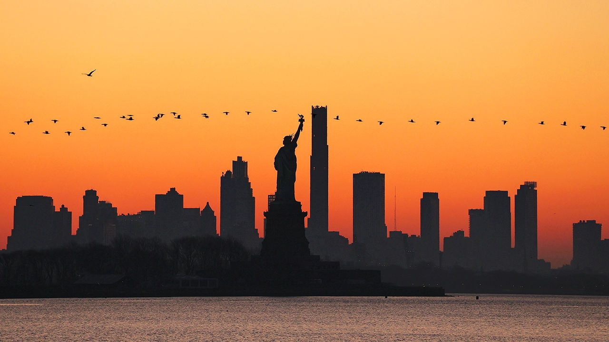
Listen to this story.Enjoy more audio and podcasts on iOS or Android.
EARLY-RISING NEW YORKERS may spot an unusual patrol group in Manhattan this autumn. They sport sensible shoes, latex gloves and an armful of brown paper bags. As in spring, they comb the streets for migrating birds that have struck windows. They are Project Safe Flight volunteers, out to save the injured and count the dead.
It is a tough gig. Fruzsina Agocs saw her first yellow-billed cuckoo, a shy species that is hard to spot, dead on the pavement. “That was not the way I wanted to see it,” she says. But she is cautiously optimistic that she will have fewer such encounters in the future. In the past couple of years New York has moved to the forefront of a push to make cities more welcoming to their avian neighbours.
New York—like Philadelphia, Baltimore and Washington—sits underneath the “Atlantic Flyway”, an ancient migration route travelled by millions of birds, from teeny warblers to long-legged shorebirds, every spring and autumn. Up to a quarter of a million of them die colliding with windows in New York every year, according to New York City Audubon, the bird charity that organises Project Flight Safe. Birds confuse reflections of sky or vegetation for the real thing and fly straight for them.
In 2021, however, new legislation came into force in New York requiring all new buildings and renovations to be made bird-friendly. Specifically, they must use glass that birds recognise as surfaces, which is usually achieved by incorporating tiny dots. It is the most stringent such legislation in America, spurred by the compelling case of the Jacob K. Javits Convention Centre in west Manhattan. It used to be a top bird-killer, but after swapping its panes for bird-friendly glass in 2013 strikes dropped by 90%. The centre has now fully embraced bird life. Its green roof is home to a breeding herring gull colony, and as of October 18th, 62 different species have been spotted there—most recently tree-climbing brown creepers and colourful northern parulas.
Other places are now following New York’s lead. Maryland’s version of the law went into effect this month, and Washington, DC’s will begin next year. And while the law does not apply to New York’s 1m existing buildings, some are taking voluntary steps. This month the Circa building by Central Park, another infamous bird-killer, covered its courtyard windows with translucent UV dot stickers that are more visible to birds than humans, hoping to shed its bad reputation.
At night artificial light draws birds into the city, where they are more likely to crash; some studies suggest it disorients them because it interferes with their ability to navigate using the Earth’s magnetic field. Last year the city passed a law that requires all city-owned and managed buildings to switch their lights off at night during migration. An expanded bill, which would extend the requirement to privately owned commercial buildings all year, is in committee in the council. Though exemptions would be allowed for icons such as the Empire State and the Chrysler Building, the change would still transform the world’s most famous skyline.
Jessica Wilson of NYC Audubon says that would be a good thing for birds, energy consumption and people. New York is on track to become the most bird-friendly big city in America. If the bill passes, “it would be a model for the entire country”. ■
They are pointless, lucrative and generally a force for good
Listen to this story.Enjoy more audio and podcasts on iOS or Android.
QUEENS COUNTY farm museum is one of the few pastoral corners in New York City. It has an apiary, an orchard, livestock and, in autumn, a pumpkin patch. Parents take photos of their tykes, some dressed as pumpkins, sitting on a mound of pumpkins. Twenty-somethings, hoping not to look like pumpkins, strike poses next to hay bales and post them on Instagram. This meeting of big tech and smallholding might seem as natural as a Clarendon filter. In fact the two go together.
In the 19th century, as people moved away from farms to cities, many felt they had lost their connections to nature. Pumpkins became a symbol for that rural ideal. Americans will still happily drive hours to purchase a fruit (yes it is) that they will not eat. Small towns with no economic ties to the squash host pumpkin festivals and contests. Andy Wolf grows gourds in excess of 2,000lbs (907kg). “We keep track of the genetics like you would a champion racehorse,” he says.
Pumpkin patches are a way for people to maintain connections to rural life, says Cindy Ott, author of “Pumpkin: The Curious History of an American Icon”. The effects are real enough. “The crazy thing is, that the popularity of pumpkin pie and the jack-o-lanterns is helping, has helped to rejuvenate small family farms,” she adds.
Libby’s, which produces most of the canned filling for pumpkin pies, relies on a few dozen small-scale farmers. According to NIQ, a market-research firm, nearly $820m of pumpkin-related products, which includes everything from pumpkin candles to pumpkin cinnamon bagels, were sold over the past year, a 9% annual increase. Sales of fresh pumpkin amounted to more than $190m in the year ending October 14th.
Pumpkin patches are not hard to create. Farmers do not have to devote too much acreage to make a worthwhile patch. Money can be made from selling apple cider and donuts to the pumpkin punters as well as jams and vegetables. The Queens County Farm charges $16 ($12 for kids) to enter the “amazing maize maze”, a living labyrinth. Another queue waits for the $6 hayrides. Steve Reiners, a horticultural professor at Cornell University, says pumpkins “can make all the difference whether they have a profitable year.”■
Mitt Romney is the fixed point revealing the Republicans’ slide
A new biography shows how far that slide has gone
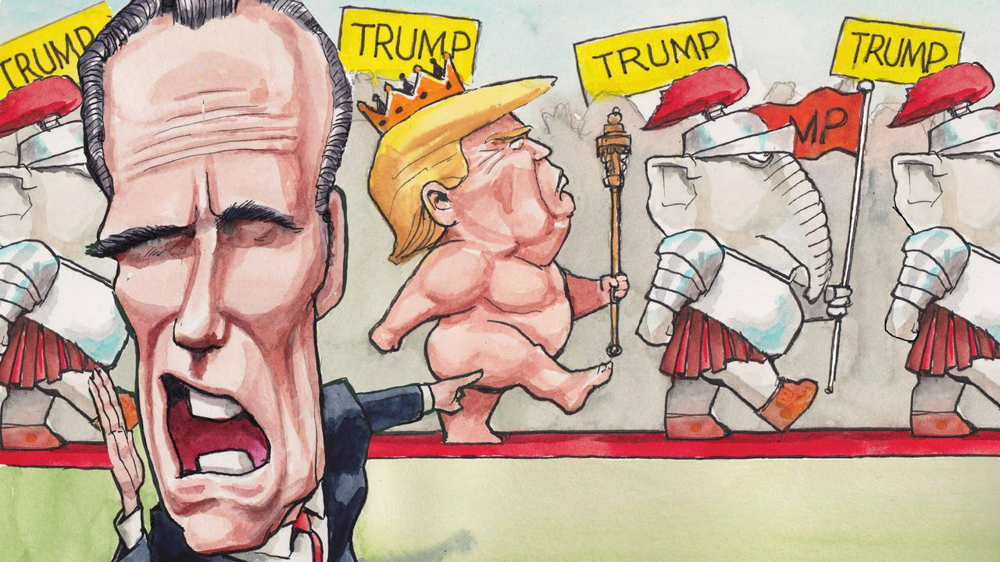
Listen to this story.Enjoy more audio and podcasts on iOS or Android.
So a politician in the evening of his career, with a vast family, a rich spiritual life and great wealth to fall back upon, summoned the nerve to declare what his peers muttered privately: that a man who was obviously unfit to be president was, in fact, unfit to be president. Does the courage of Mitt Romney in standing up to Donald Trump really say something wonderful about Mr Romney, or just something dismal about American democracy?
The grim answer is that it does say something good about Mr Romney precisely because it illuminates how debased the leadership of the Republican Party has become. Only against the shadow of dire compromise and cowardice could Mr Romney’s sense and decency gleam so brightly.
Not that American politics looked so great even before Mr Trump ran for president in 2016. As McKay Coppins writes in a new biography, “Romney: A Reckoning,” Mr Romney made compromises of his own to run for office, including to become the Republican nominee for president in 2012. He was also subject to the kind of hysterical demonisation that has long been standard partisan practice: Joe Biden, then the vice-president, warned a mostly black crowd in 2012 that Mr Romney and his banker allies wanted to “put ya’ll back in chains”. Maybe politicians of both parties cried wolf for so long that they—and thus voters—failed to recognise him when he appeared at the door.
In 2012 Mr Romney welcomed Mr Trump’s endorsement. Yet back then Mr Romney, like many who knew Mr Trump, considered him outrageous but harmless and therefore charming. “This guy is not fake—he says 100% of what he thinks,” Mr Coppins quotes Mr Romney writing in his journal. “Got to love him. Makes me laugh and makes me feel good, both.” The feeling curdled as Mr Trump emerged as a viable candidate in 2015. The Republicans’ swing in four years to Mr Trump from Mr Romney seems neck-snapping even now; it was a kind of penance in reverse, a brawling, bankrupting bender in a strip club after a quiet morning in the pews. Mr Romney was offended by Mr Trump’s policies, but he was more alarmed by his character, seeing him, in Mr Coppins’s words, as “a profoundly depraved and broken person”.
Mr Romney considered getting into the race himself, then tried to engineer an anti-Trump unity ticket. In February 2016 he gave a speech calling Mr Trump “a phoney, a fraud” who was playing Americans “for suckers”. When Chris Christie, the former governor of New Jersey, dropped out and endorsed Mr Trump, Mr Romney harangued Mr Christie to withdraw the endorsement, saying it “severely diminishes you morally”.
In 2017 Mr Romney, in his management consultant’s style, kept a list on his iPad of the pros and cons of possibly running for the Senate from Utah. At the top, he quoted W.B. Yeats: “The best lack all conviction, while the worst/Are full of passionate intensity.” Those lines, he felt, captured “the new GOP”. Once he ran and won, Mr Romney was astonished by what he learned about Republican senators: “Almost without exception they shared my view of the president,” he tells Mr Coppins. Once, after Mr Trump addressed the senators and then left the room, “the Republican caucus burst into laughter”. His colleagues would tell Mr Romney they wished they had secure enough constituencies back home to be able to speak up as he did. The majority leader, Mitch McConnell, referred to Mr Trump as “an idiot” and told Mr Romney he was lucky because “you can say the things that we all think”. Mr Romney developed a stock response: “There are worse things than losing an election. Take it from somebody who knows.”
The book’s emotional high point is its account of the agonised process by which Mr Romney decided to vote to convict Mr Trump after his first impeachment, for abuse of power in conditioning aid to Ukraine on its announcing an investigation of Mr Biden. Mr Romney’s journal reveals his contempt for Republican legislators’ indifference to their constitutional duty—even Mr McConnell suggests he thinks Mr Trump is guilty—and his growing isolation as they lobby and even attack him. “Sad to see what happens to people when they want to win at any cost,” Mr Romney writes.
In the second impeachment trial, after the attack of January 6th, Republicans added a chilling new rationale for not voting to convict: too many Trump supporters had guns. Mr Romney was sympathetic to this fear, since by then he was paying $5,000 a day for security to protect his own family.
The real Romney
Mr Romney not only handed over his journals, texts and emails to Mr Coppins but also sat for more than 45 interviews over more than two years. Although the leftish press has celebrated Mr Romney’s catty put-downs of fellow Republicans, the book’s more satisfying revelations, of which there are many, form a portrait of Mr Romney as an introspective, vulnerable, even self-lacerating person, ambitious for himself but also to do the right thing.
Mr Coppins frames his biography around Mr Romney’s own compromises, regarding them as moral lapses and asking if they empowered Mr Trump (that’s the “reckoning”). This seems unfair to Mr Romney and, for students of politics, a bit of a dead end. After all, in politics, compromise—even of principles—can be a good thing. To witness the chaos created by its absence one need look no further than the House Republican caucus. The trick is to know when to compromise and how far to go. Mr Romney, who at 76 has decided not to run again for his seat, seems to have got far more such calls right than wrong.
The first line of his obituary—an obsession for Mr Romney—seems less likely to record that he lost a presidential election than that he was the first senator to vote to convict a president of his own party. Whether history will ultimately judge that to have been the act of a hero or a turncoat, of course, is something American politics has yet to determine. ■
Read more from Lexington, our columnist on American politics:
Argentina’s presidential election delivers a surprise result
The Peronists knock Javier Milei, an erratic libertarian, into second place. Now for the run-off
Listen to this story.Enjoy more audio and podcasts on iOS or Android.
There are two certainties in Argentine politics. One is that polls cannot be trusted. The other is that predictions of the demise of Peronism, the populist movement that has dominated politics in the country for seven decades, always prove premature. In the first round of Argentina’s presidential election on October 22nd, both truths were borne out.
Most polls had put Javier Milei, a libertarian outsider, as the front-runner. Yet Mr Milei received 30% of votes. By contrast Sergio Massa (pictured), the Peronist candidate who is Argentina’s economy minister, won almost 37% of votes. The two candidates will now compete in a run-off on November 19th. Patricia Bullrich of Together for Change, a centre-right coalition, got 24% of votes and is out of the race. Half of the seats in the national Congress, and a third in the Senate, were also up for grabs.
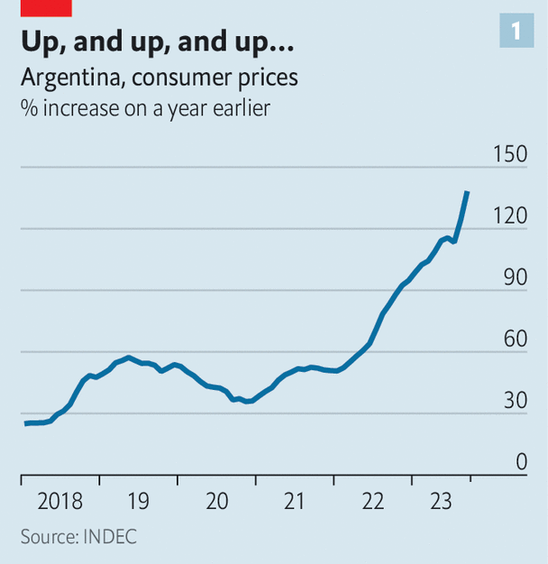image: The Economist
Mr Massa’s turnaround is astounding. Since he took up his current job in August last year, annual inflation in Argentina has increased from 79% to 138% (see chart 1). The price of one black-market American dollar—the currency Argentines prefer to save in—has increased from around 300 pesos to around 1,000. Multiple exchange rates have been invented, adding distortions to the country’s already labyrinthine economic rules. Most voters say inflation is their top concern.
It may seem baffling that the steward of Argentina’s deteriorating economy has a good chance of becoming the next president. Considered a centrist Peronist, Mr Massa portrayed himself as someone who could unite the whole country. He has good relations with the IMF and has supported export-oriented sectors, such as mining, through special exchange rates and by investing in infrastructure for oil and gas firms. Yet this can go only so far in explaining the surprising result. Mr Massa also owes his victory to the mobilising power of the movement behind him.
After Mr Milei came first in a pre-election primary in August, Peronist leaders activated the vast apparatus they control throughout the country. Mr Milei rose to fame by railing against politicians as a “caste” that steals from hard-working Argentines. Many voters, whose living standards have sunk under both Peronist and centre-right governments, flocked to him. To win them back, the government opened the taps. In the weeks running up to the election Mr Massa handed out a bonus for pensioners in pesos worth $100 (at the official exchange rate), and eliminated income tax for 99% of all workers. Such measures are estimated to have cost the equivalent of around 1% of GDP.
The effort to win back disillusioned voters was concentrated in the often miserable suburbs of Buenos Aires province, where more than a third of Argentines live. Days before the election, lorries owned by a poor municipality called Lomas de Zamora were found to be delivering refrigerators, housing materials and mattresses to voters. One person later thanked the Peronist president of the local legislature for a new stove. In September a , or ward boss, was caught in another district using 48 debit cards to withdraw cash that belonged to employees of the local legislature. Police suspect the money was intended to buy votes.
Fear-mongering also played a role, thinks María Eugenia Duffard, a journalist in Buenos Aires. The government built a narrative about “all the things that could be lost” if a free-market candidate like Ms Bullrich—or, worse, a libertarian like Mr Milei—came to power. Two days before the election, bus and railway stations put up signs showing customers how much their ticket prices would increase if subsidies, which cost the government around 2% of GDP per year, were removed. One message on a card reader at a train station said that prices would remain at 56 pesos ($0.16 cents) under Mr Massa, but would rise to 1,100 pesos under Mr Milei or Ms Bullrich.
Deus ex machina
Some apparent tactics were cruder. On election day no posters were visible for Mr Milei or Ms Bullrich in the poor district of José C. Paz, in Buenos Aires province, which has long been governed by Peronists. One local claimed that people who campaigned for Mr Milei or Ms Bullrich had received threats from thugs. Another said he had been told his garage would be shut if he did not vote the right way, though he declined to say who had pressured him and for whom he was told to vote. has obtained a text message in which one claims his bosses hired 7,000 taxis to get voters to polling stations. Such tactics seem to have increased turnout. Between the primaries and the first round Mr Massa received 4.5m extra votes. Mr Milei only got around 500,000 more.
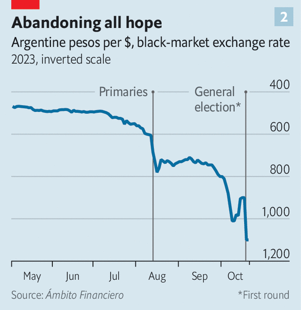image: The Economist
Yet Mr Milei’s loss cannot solely be explained by Mr Massa’s gains. Mr Milei’s bizarre, often aggressive, language and his radical proposals put many voters off. In a majority-Catholic country he has called the pope, who is Argentine, a “leftist son of a bitch”, among other slurs. On election day his mentor suggested suspending diplomatic relations with the Vatican. Although over a third of employees in the country work for the public sector, Mr Milei has described the state as a “criminal organisation” and compared it to a paedophile in a kindergarten. He wants to slash public spending by 15% of GDP (from around 40% today), scrap most taxes and ditch the peso for the greenback.
He has also proposed loosening gun-ownership laws, banning abortions and establishing a legal market for human organs. Lilia Lemoine, an influencer who manages Mr Milei’s image, and who was elected to Congress, recently said she would like to propose a bill that would allow men to refuse paternity of their children. She argued that many women often use tricks to trap men in relationships, such as pretending to take the morning-after pill. Meanwhile Mr Milei has not denied rumours of going to his four genetically identical dogs for political advice.
On the day of the election Eduardo Bolsonaro, the son of Brazil’s former populist right-wing president, Jair Bolsonaro, was in Buenos Aires to support Mr Milei. The association with kooky ideas and right-wing demagogues turned many moderates off. “He’s very aggressive, and that scares me a bit,” says Augusto, a 36-year-old.
Even if Mr Milei were to win, he would struggle to govern. Over the past year all the candidates he backed have failed in their electoral bids to become governors of Argentina’s 23 provinces. On election night his coalition, Liberty Advances, made significant gains, but will still hold only 38 of the lower house’s 257 seats. In the Senate, they will have eight of 72 seats.
But Mr Massa’s victory in the run-off is not assured. Ms Bullrich refused to congratulate him, since he is “part of the worst government in Argentina’s history”. On October 25th both she and Mauricio Macri, a former centre-right president, vowed to work with Mr Milei. The fact that candidates who propose free-market ideas secured more than half of all votes suggests that Peronism may have to reinvent itself soon—or face its long-heralded demise. ■
Over a million Paraguayans disappear in the latest census
The country’s population is a fifth smaller than thought. Why?
Listen to this story.Enjoy more audio and podcasts on iOS or Android.
Last November Paraguay’s first census in a decade got off to a rocky start. A fifth of those recruited to conduct the household survey in Asunción and Central, the capital and its sprawling suburban hinterland, did not show up. Those that did sometimes found their tidy neighbourhood maps bore little relation to the brick bungalows and plywood shacks jumbled before them. Social media filled with complaints from those waiting in vain for a knock at the door.
And when Paraguay’s National Statistical Institute (INE) released preliminary data on August 31st, they pointed to a surprising conclusion. Unusually for a fast-growing, emerging economy, the population appeared to have drastically shrunk. The last census, in 2012, found that Paraguayans numbered nearly 6.5m. Official projections held that the population would grow to almost 7.5m by now. Instead, the new survey points to a figure of barely 6.1m. Many reacted with derision. “We will basically have to plan for a new Paraguay,” a nonplussed Carlos Valdovinos, the economy minister, told reporters. Even the director of the INE, Iván Ojeda, admitted to having initial doubts about the results.
But the mystery can be explained, says Norma Medina, an INE official. Nearly half a million of her compatriots have migrated since the turn of the millennium, including many young women taking up jobs as nurses and nannies in Spain and Argentina. Whereas Paraguayan families once reliably produced 3.5 children on average, that figure has fallen sharply over the past 20 years, to 2.3. Life expectancy has risen, but the pandemic kept it in the low 70s.
More to the point, the 2012 census was botched. The then president had just been impeached. Those in charge of the survey were replaced. Contractors went on strike over late pay. In the end, they reached barely three-quarters of the population. “They did what they could with what they had,” concedes Ms Medina. Officials had to fall back on the 2002 census, which recorded a population of 5.2m, both to hazard a guess at the 2012 population and project its growth. Yet birth rates fell and migration had picked up sharply in the early 2000s, so this extrapolation diverged further from reality each year.
The new census is much more reliable, thinks Verónica Serafini at CADEP, a think-tank. In the weeks after the launch of the census last year, INE’s workers chased up remote farmsteads and indigenous villages. A subsequent survey suggests they reached a respectable 93.7% of households in total. The lower population figure tallies with data on births and deaths compiled by hospitals, as well as student registers.
Civil servants have long reported the countryside to be emptier than their clipboards suggest. The data also suggest that Paraguay’s demographic dividend is winding up sooner than thought, says Ms Serafini. More formal jobs and bigger tax receipts will be needed to support an ageing population, she warns.
Paraguay’s new conservative president, Santiago Peña, believes his nation’s best days are before it. A former finance minister, he won an election in April promising to create 500,000 jobs, double the country’s GDP and keep taxes low. “The world will bear witness to the revival of a giant,” he proclaimed at his inauguration in August. Mr Peña has said that Paraguay’s underdevelopment is mostly due to a devastating war 150 years ago (rather than the policies of his party, the Colorados, which has ruled almost without pause since 1947). Luckily for the president, the revised population data may cause Paraguay’s GDP per person to jump somewhat. But unfortunately for ordinary folk, Paraguayans are unlikely to wake up next year with an extra $1,000 in their pockets. ■
The Americas | How to lose friends and irritate people
Gustavo Petro, Colombia’s left-wing president, is floundering
Just a year into his term, he is deeply unpopular
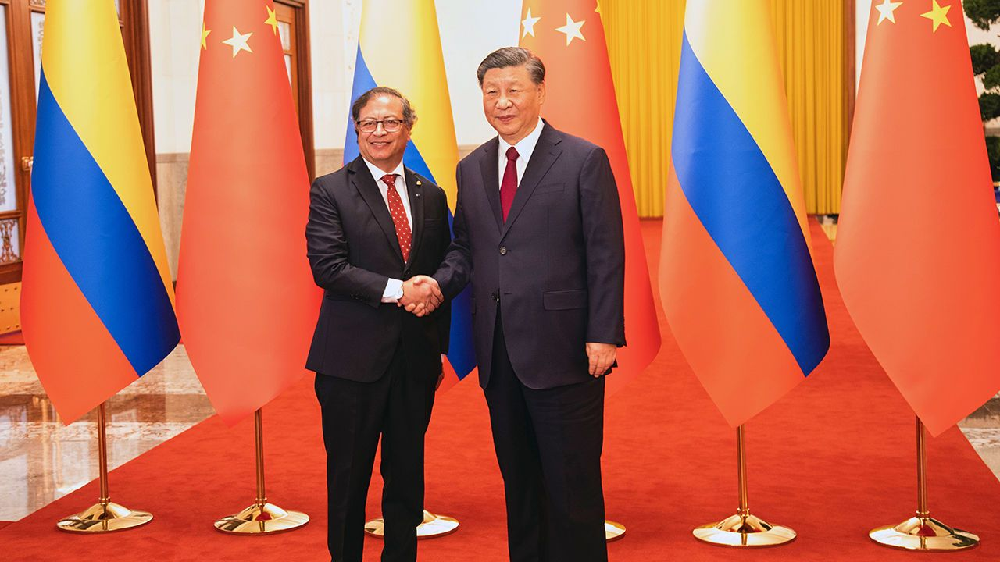
Listen to this story.Enjoy more audio and podcasts on iOS or Android.
Gustavo Petro is often late. Colombia’s first avowedly left-wing president was famously delayed in voting for himself in last year’s presidential election (he left his ID at home). On October 24th he continued that tradition by landing in China eight months after declaring an impending trip. Mr Petro was expected to sign up for the Belt and Road Initiative (BRI), Beijing’s tarnished infrastructure splurge. Yet he managed to arrive the week after the end of the BRI summit, and left with a dozen deals and several “working groups” to improve commerce between the two countries, instead. One year into his term Mr Petro is struggling, and not just against the clock.
Mr Petro is deeply unpopular. His approval rating has crashed from close to 60% in August 2022 to half that in October this year. This is not uncommon for Colombian presidents, who tend to poll below 50% for most of their terms. “The thing to notice is how rapid and sharp the fall was,” says Andrés Mejía Vergnaud, a political consultant.
The president got off to a good start, forming a moderate coalition government filled with seasoned ministers. They sailed through a tax reform in record time. They negotiated with ranchers to redistribute land to the rural poor and created a peace plan to end the internal conflict which has racked the country for decades. Allies, though wary of his more radical bills, agreed to back more moderate versions.
But that was not enough for Mr Petro. In April, when centrist ministers opposed a health-care reform, which would have handed control of health-care funding from private providers to the state, he dissolved the coalition and fired a third of his cabinet. He then turned dogmatic and packed the new cabinet with left-wingers. He has tried to rule by emergency decree, but the constitutional court can reverse his acts. As a result the government’s legislative agenda is moribund. A dozen ambitious reforms are stuck in Congress, infuriating Mr Petro. He has taken to organising mass rallies where he denounces what he calls the “soft coup” against him.
Few are buying it, particularly after a series of scandals. It began in May when Mr Petro’s chief of staff, Laura Sarabia, accused her children’s nanny of stealing money, forced her to take a polygraph test and had her phone illegally wiretapped by Colombia’s intelligence agency. That was a bad look for a government elected to help the poor. Ms Sarabia blamed another ally of Mr Petro, Armando Benedetti, who was then the ambassador to Venezuela, for having leaked the story. Although Ms Sarabia denied any impropriety, both she and Mr Benedetti were forced to resign. Mr Benedetti then claimed he had incriminating evidence about the funding for Mr Petro’s presidential campaign. Mr Petro denies all the allegations.
Then Nicolás Petro, the president’s son and a regional deputy, was arrested on charges of taking drug money in exchange for political favours. Mr Petro junior admitted to soliciting bribes for his father’s presidential campaign, but said his father had not known and that he had kept the money. Mr Petro denied all involvement. The cases are still running.
Mr Petro’s desultory approach to foreign policy is not helping matters. Take China. The country could expand Colombia’s ports, construct highways through the interior and provide investment for renewable energies. Instead, before meeting Xi Jinping, China’s leader, Mr Petro indicated that his priority was to talk about the metro in Bogotá, the capital, which is being built by a Chinese consortium and which he has strong views about. That seems small-bore. Indeed Chinese diplomats recommended that the president should not bring it up. “There’s basically no public policy on China,” says Parsifal D’Sola of the Andrés Bello Foundation, a research group.
Earlier this month Mr Petro shattered Colombia’s policy on Israel-Palestine, too. After Israel retaliated against Hamas by bombing Gaza, the president let loose on social media. He accused Israel’s government of “Nazism” and compared the Palestinian territory to Auschwitz. When Israel retaliated by freezing exports of weapons and air-defence systems to Colombia, Mr Petro threatened to cut off diplomatic relations. Under pressure from American officials he met the Israeli and Palestinian ambassadors on October 19th. Hours later he tweeted that Colombia would open an embassy in the West Bank.
On October 29th the president’s allies are likely to face a thrashing in local elections. His party’s candidates are predicted to lose the big cities, including Bogotá. This will be a humiliation for Mr Petro, who served as the capital’s mayor from 2012 to 2015. Some fear that a landslide defeat would cause the president to lash out. The government is already delaying funds to certain cities, revoking licences for their projects and meddling in any way it can. “If he were willing to compromise and moderate, a number of political forces would be willing to co-operate with him,” says Mr Mejía. That seems unlikely. ■
Taiwan’s opposition parties are struggling to unite
An interview with the island-democracy’s political wild card, Ko Wen-je
Listen to this story.Enjoy more audio and podcasts on iOS or Android.
Taiwan is a young democracy. It has had direct presidential elections only since 1996. Each time the race has come down to two main parties: the Nationalist Party, or KMT, which wants reunification with China, and the pro-independence Democratic Progressive Party (DPP). Ahead of the election due in January, a third force has emerged. Ko Wen-je, a former mayor of Taipei and founder of the new Taiwan People’s Party (TPP), is polling at 20-25%, on a par with the KMT’s candidate, Hou Yu-ih. This has introduced complexity to the election and huge uncertainty about the island-state’s future approach to China.
Neither Mr Ko nor Mr Hou looks able to win on his own. The former mayor’s rise has come mainly at the kmt’s expense; at Taiwan’s presidential election in 2020 its candidate won almost 40% of the vote. And the late entry into the race of a bombastic independent candidate, Terry Gou, the billionaire founder of Foxconn, a Taiwanese manufacturer, has further split the anti-DPP vote. Yet if Mr Ko and Mr Hou could do a deal to unite their parties behind one candidate, the situation would change. Together they might defeat the ruling DPP, whose candidate, William Lai, is polling at 30-40%. Since October 14th the TPP and KMT have indeed been holding talks on a possible joint ticket. They have until November 24th, the registration deadline for presidential candidates, to unite. Otherwise, Mr Lai, Taiwan’s vice-president, could be in line for an easy win.
In an interview with, Mr Ko draws a chart with the dpp and kmt at opposing ends of an ideological spectrum. He puts himself somewhere between them, as a “pragmatic” alternative. For 30 years Taiwanese politics has been consumed by a “meaningless” debate about unification and independence, he says. Both are “impossible”, in his view, because America will not allow unification and China will not allow independence. “Young people, especially intellectuals, are tired of seeing us spend so much time debating something that cannot be resolved,” he says. Instead he vows to focus on domestic concerns like jobs and housing.
This is a popular message. A recent survey by , a magazine, suggests most TPP supporters think economic development should be the next president’s priority. Yet the survey also illustrates the limits of the tpp’s appeal. It finds 46% of voters are worried about a possible war between Taiwan and China in the next five years. It also affirms that DPP supporters mainly worry about national security and KMT supporters about relations with China. Though domestic policy matters, China is the big issue in national elections.
Mr Ko’s position on China is close to the KMT’s. Both he and Mr Hou criticise the DPP for its inability to engage directly with the Chinese Communist Party. Chinese authorities have cut off communications with the DPP government because it refuses to state that Taiwan and mainland China belong to the same country. The KMT says it could reopen dialogue by returning to the 1992 consensus, a deliberately vague agreement between the mainland and Taiwanese authorities that there is “only one China but with multiple interpretations”. This was the basis for strong cross-straits ties during the kmt administration of President Ma Ying-jeou in 2008-16. Returning to it could reduce regional tensions, says Andrew Hsia, the KMT’s vice-chairman.
But the mainland is not as flexible as it used to be. In 2019 Xi Jinping, China’s president, gave a speech linking the 1992 consensus with the mainland’s one-China principle and proposed a “one country, two systems” formula for incorporating Taiwan. He did not mention the “multiple interpretations” phrase cherished by the KMT. Mr Xi also stated that the Taiwan problem should not be passed “from one generation to the next”. That speech “set the tone” for a more assertive Chinese policy on Taiwan, says Yoshiyuki Ogasawara of the Tokyo University of Foreign Studies.
KMT leaders acknowledge that Mr Xi is pushing harder for unification than they are. Revelations this week that Foxconn’s tax affairs and land use are being investigated in China have only increased doubts about the mainland’s forbearance; many Taiwanese assume this is a tactic to put pressure on Mr Gou. “We are not naive,” says Mr Hsia, who has met top officials on several recent trips to the mainland. But the kmt still believes there is room for manoeuvre. Last year a Chinese state-run newspaper published an online commentary with the headline: “There is only one China, there are no multiple interpretations.” The article was withdrawn after the KMT called Beijing to complain—demonstrating the party’s influence, says Mr Hsia.
Taiwanese voters are more pessimistic. Most no longer believe in the viability of the 1992 consensus. Many have also lost faith in the KMT’s claim to prioritise Taiwanese sovereignty over its supporters’ interests. The term , or “compradors”, is used to refer to Taiwanese companies that profited from investments in the mainland under Mr Ma. Mr Ko also slams the KMT for the phenomenon. The party is “too submissive to China”, he says. It has “lost the Taiwanese people’s trust”.
Even so, most Taiwanese want dialogue with China. Asked which was more important, cross-strait or international (meaning external but non-China) relations, about a third of voters chose international, while a fifth said cross-strait. Almost half said Taiwan should prioritise both.
That suggests many Taiwanese want a more flexible approach to China than the dpp’s, but a tougher one than the kmt’s. Mr Ko is benefiting from this. He says he has asked Chinese authorities to consider using an alternative formula, which would be less divisive than the 1992 consensus. They are “thinking about it”, he claims. It is not clear what this new formula would be, though Mr Ko has previously proposed the phrase “Two sides of the strait, one family” as a basis for cross-strait relations.
More important than any new formula, he says, is to reset the dial. He vows to stress Taiwan’s shared heritage with China, promote people-to-people exchanges and avoid political rows. He cites a Chinese saying: “If you have good relations, anything can be discussed. If you have bad relations, nothing can be discussed.”
That is in step with the KMT. Yet the opposition parties are struggling to unite. After their first meeting each accused the other of being disingenuous. Mr Ko told he would only agree to a coalition that could win—and that this meant he must be its presidential candidate. It is possible. The kmt covets the TPP’s young supporters. “No one under 40 will vote for the KMT,” says Mr Ko. His KMT counterpart, Mr Hou, has suggested he might accept being Mr Ko’s running-mate.
But that would be a bitter pill for the KMT. It is much larger, older and better organised than the TPP. And Mr Ko’s derisive comments about the party do not augur well for his dealmaking powers: the KMT is a “big old brother” that “cannot swallow” its pride, he says. Moreover, even if the two parties could agree on the top of the ticket, they would need to work out an acceptable distribution of cabinet members, something they are only beginning to discuss. If they can fix these issues over the next month, Taiwan could be in for a very tight race. But don’t hold your breath. ■
Religious art is good. A portrait of the prime minister is better
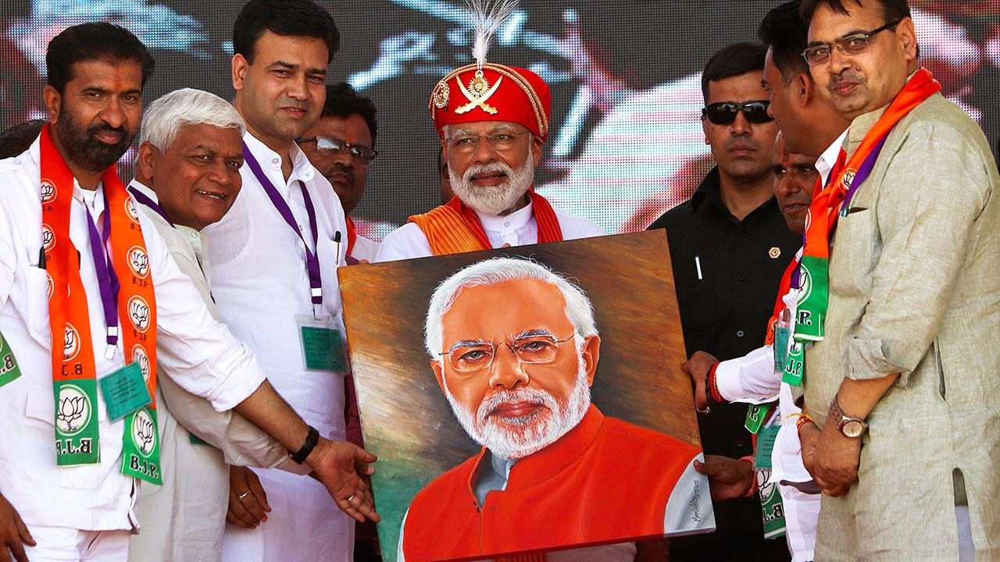
Listen to this story.Enjoy more audio and podcasts on iOS or Android.
NARENDRA MODI is estranged from his wife and has no children and little leisure time. As India’s prime minister his few corporeal needs are attended to by the state. So what do you give a man who needs nothing? An exhibition at the National Gallery of Modern Art (NGMA) in Delhi has answers.
In India, as elsewhere, gifts given to senior officials are held by the treasury. Since 2019 it has periodically auctioned them off, for the benefit of a scheme to clean up the Ganges river. The NGMA has put on display a selection of 113 objects (of a total of 912) presented to Mr Modi over the past year and available for purchase online. Catchily titled “E-auction of Mementos Presented to The Honorable Prime Minister”, the exhibition is a snapshot of what Indians think their prime minister is likeliest to appreciate.
The items fall into four categories. The first is objects that say something about the gift-giver. These include tribal art and traditional headgear. The second category contains religious and nationalist mementoes: sculptures of Hindu warrior-rulers who fought the Muslim Mughal empire, figurines of Hindu gods, models of temples, including one being built on top of a destroyed mosque in Ayodhya, which Mr Modi is expected to inaugurate before elections next year. The third category includes symbols of the government’s modernisation programme, such as replicas of a new airport and train, whose ribbons the prime minister has cut.
The last category contains images of Mr Modi, and is the highlight. Your correspondent counted seven portraits, as well as carvings and statues, including one entitled “MODI: Man of Development India”: yours for 8,700 rupees ($105). These depict various facets of Mr Modi’s public image. One picture shows him as a dutiful son seeking his mother’s blessing (priced at 48,600 rupees). Another as a man of piety, bathing in the Ganges (81,100 rupees). A third shows him lost in contemplation, channelling the spirit of Vinayak Damodar Savarkar, an early Hindu nationalist (5,000 rupees). There is even a portrait of Mr Modi in the medium of millet grains, which his government is promoting (62,600 rupees). As the NGMA’s director, Temsunaro Tripathi, puts it, “There is something for everyone.” (Provided you like Mr Modi.) ■
A truce with the generals revives the former prime minister’s career
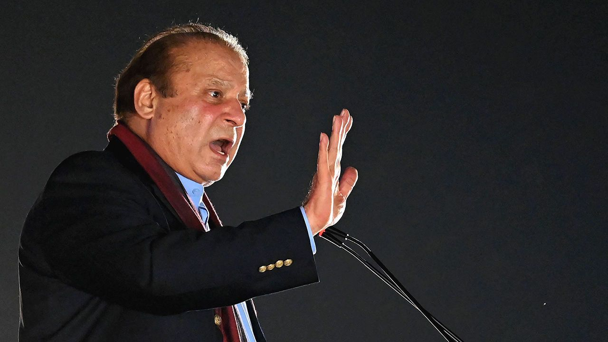
Listen to this story.Enjoy more audio and podcasts on iOS or Android.
Four years ago Nawaz Sharif’s political career appeared to be over. The three-time former prime minister had once again been ousted from power, jailed on corruption charges, disqualified for life from holding public office and then exiled to his plush London flat. Not even his brother Shehbaz Sharif’s year-long spell as prime minister, which ended in August, could facilitate his return to Pakistan. The country’s powerful generals, who had at various times elevated Mr Sharif and then laid him low, would not allow it. But at last they have relented. On October 21st Mr Sharif returned to Pakistan.
The 73-year-old’s homecoming was lavish. He flew in by chartered jet, surrounded by supporters and journalists. A helicopter then whisked him off to a big rally in Lahore, where his Pakistan Muslim League—Nawaz (PML-N) party launched a new anthem, including the catchy lyric: “Take charge again, save the country, Nawaz Sharif!” Not at all surprisingly, Mr Sharif sounded far more conciliatory towards the generals in his rally speech than he had in exile. “I have no wish for revenge,” he said magnanimously. “Nawaz Sharif only wishes for the well-being of the people.”
The generals have a habit of reviving Mr Sharif’s career—generally after concluding that his successor was even worse than he was. And so it is again. A general election is due next year and the army is desperate to prevent the party of Imran Khan, a former prime minister and conspiracy theorist who was recently jailed on corruption charges, from winning it. Mr Sharif suddenly doesn’t look too bad by comparison. He has at times played ball with the generals. And given that he will need their support to overturn his various convictions and electoral ban, he may be counted on to do so again. A record fourth term as prime minister could be on the cards.
A stable PML-N government could be relatively good for Pakistan’s economy. The country is in the grip of high inflation and joblessness and serious balance-of-payments problems. An IMF team is due to visit Islamabad next week to discuss releasing the second tranche of a $3bn bail-out—Pakistan’s 23rd by the fund. Mr Sharif is a pragmatic businessman who has support within the Punjabi business establishment. His record suggests he would at least be less flagrantly populist than Mr Khan. His priorities would be stability and growth, insists Khurram Dastgir Khan, a former PML-N commerce minister.
But public opinion is not with the Sharifs. Shehbaz Sharif’s spell as prime minister was doomed by the mismanagement he inherited from Mr Khan. As inflation soared and the rupee crashed, he vacillated, before slashing fuel-price subsidies to woo the IMF. Mr Khan, raging in opposition against the generals and America, which he blames for most things, disassociated himself from the economic mess.
His subsequent imprisonment (on charges he denies) and a scheme by the generals to dismantle his Pakistan Tehreek-e-Insaf party have only improved Mr Khan’s standing. With an approval rating of 60%, he is the country’s most popular leader. “My friends and I will only vote for Imran Khan,” says Umair, a 32-year-old IT worker in Islamabad. “If he is disqualified, we will vote for whoever he tells us to vote for.” Knowing which way the wind was blowing, the PML-N supported a delimitation exercise that postponed the election shortly before its government was dissolved in August. Though the election commission has said the vote will be held in late January, a further delay is possible.
The army chief, General Asim Munir, is meanwhile growing increasingly assertive. He is pushing an effort to raise billions from Saudi Arabia and other Muslim allies known as the Special Investment Facilitation Council. The current government—a caretaker outfit that took over from Shehbaz Sharif—in effect reports to him. There is already speculation that a detente between the army chief and Mr Sharif would be short-lived.
“Nawaz Sharif has quietened his rhetoric on civilian supremacy, but he won’t be able to resist asserting himself,” says Abbas Nasir, a former editor of a leading daily newspaper. And so revolves, in its ever-decreasing circles, Pakistan’s army-blighted democracy. ■
A controversial court decision helps promote the Indonesian president’s son
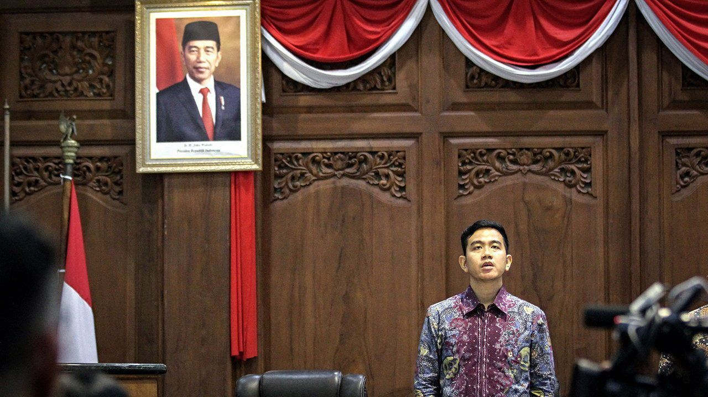
Listen to this story.Enjoy more audio and podcasts on iOS or Android.
When Joko Widodo won Indonesia’s presidency in 2014, the country’s liberals celebrated. He was the first person from outside its traditional elite to lead the world’s third-largest democracy. Jokowi, as he is known, promised a new kind of politics and a lesser role for the business and military families who had accrued enormous wealth and influence during the three decades of Suharto’s rule. He declared that becoming president “does not mean channelling power to my own children”. But less than a decade on, Jokowi has beaten the old guard at its own game.
Nowhere is this clearer than in his efforts, apparently successful, to establish a dynasty ahead of the presidential election due in February. On October 16th, shortly before the deadline for registering candidates, Indonesia’s constitutional court handed him a victory in this regard: it controversially removed a barrier to Jokowi’s son becoming vice-president.
The court, whose chief justice, Anwar Usman, is Jokowi’s brother-in-law, ruled that anyone who had served in a position won “through a general election, including a regional leader election” would be exempt from a minimum-age requirement of 40 for presidential and vice-presidential candidates. Prabowo Subianto, the defence minister and favourite to succeed Jokowi, promptly named the president’s eldest son, Gibran Rakabuming (pictured), as his running-mate. Mr Gibran, 36, is mayor of the Javan city of Solo—the post that launched his father into national politics. He was the only putative candidate under the age of 40.
Opposition and civil-society groups decried the court’s ruling. , a popular weekly newspaper, called for the chief justice to be fired. It noted that Article 17 of Indonesia’s Judicial Authority Law bans constitutional-court judges from hearing cases affecting their relatives or themselves.
Jokowi, who is forbidden by the constitution from seeking a third term, has not publicly endorsed any candidate. But Mr Gibran’s selection suggests he is behind Mr Prabowo. A former general and sometime rival of the president, he has said he would continue Jokowi’s policies. That makes political sense. Despite the democratic backsliding he has overseen, Jokowi and his signature measures, including infrastructure development, are extremely popular.
There are two other candidates. Ganjar Pranowo—who is backed by the PDI-P, Jokowi’s political party, notwithstanding the president’s apparent preference for Mr Prabowo—is running a close second. Anies Baswedan, the only candidate who has dared criticise the president (over his handling of the pandemic) is trailing in third place. They have selected running-mates from rival factions of a powerful Muslim organisation, Nahdlatul Ulama, which claims to have over 100m members. It is especially influential in East Java, Indonesia’s second-largest province.
Surveys suggest no candidate will win more than half the votes in the first round of elections in February, which would mean the poll going to a run-off in June. If Mr Anies has been eliminated at that point, most of his Muslim supporters would be expected to vote for Mr Prabowo, potentially delivering him victory. ■
South Korean politics is one big row about history
Traditional distinctions of left and right scarcely apply to the country
Listen to this story.Enjoy more audio and podcasts on iOS or Android.
Just as America has wrestled for years with whether to remove monuments to Confederate generals, so South Korea is gripped by a row about a bust. It concerns a statue of Hong Beom-do, a 20th-century Korean guerrilla leader, which stands on the grounds of the Korea Military Academy in Seoul. Those on the South Korean left consider Hong a nationalist hero; the right claims he fought against the ideals on which the Republic of Korea was founded and says the statue should be removed. On October 16th, after weeks of squabbling in parliament and newspapers, the military academy began to remove the bust as part of a sweeping renovation.
Americans who call for the removal of Confederate monuments are mostly on the left; preservationists such as Donald Trump are right-wingers. In South Korea it tends to be the other way round. This mismatch points to a common misunderstanding of South Korean politics. Western ideas of “left” and “right” do not apply to its two major factions.
In the West, the left-right divide has traditionally been defined by differences over economic and social policy as well as culture. South Korea is different. Of its two main parties, the People’s Power Party (PPP) is often labelled right-wing and the Democratic Party (DP) left-wing. Yet they espouse more or less the same pro-market economic policies and prefer to leave the , the family-run conglomerates that dominate South Korea’s economy, mostly undisturbed. Neither supports socially liberal causes like gay rights or takes a liberal view of immigration. South Korea’s rival factions—which also include civil-society organisations, newspapers and intellectuals—are largely distinguished by their contrasting views on modern Korean history.
For the notionally right-wing pPP, it is dominated by the fight against communism. Just as the civil war between capitalist and communist Korea never formally ended, despite the guns falling silent in 1953, so the South’s political conflict with the communist North continues. Hence the right’s aversion to Hong. A leading figure in the struggle against Japanese colonisation between 1910 and 1945, he led a resistance force in 1920 to two important victories against Japanese troops. The next year, after the occupation became more brutal, he fled to the Soviet Union, where he fought alongside Russia’s communists against the Japanese and later became a member of the Bolshevik party.
The supposedly left-wing dp is more exercised about Japanese imperialism and the South Korean military dictatorships it helped inspire. Hong’s bust was placed in the Korean Military Academy at the behest of Moon Jae-in, a DP president, as an attempt to link the modern South Korean armed forces with the guerrilla struggle against Japanese colonialism.
These contrasting points of emphasis yield notable foreign-policy differences. The dp and its allies remain deeply mistrustful of Japan, as was seen in their recent denunciation of the release of wastewater from the Fukushima nuclear reactor. Absurdly, the dp’s leader, Lee Jae-myung, said this would go down in history as “the second Pacific war”. The ppp is more ambivalent about Japanese colonisation and willing to set aside the many crimes it visited on Koreans. Some on the party’s fringe go so far as to suggest colonisation was a necessary evil to facilitate Korea’s modernisation.
The parties’ biggest difference is on North Korea. The South Korean “left” recalls the crucial role of North Koreans in the anti-Japanese struggle and expresses a deep fraternal yearning for a unified Korea. While in office between 2017 and 2022 Moon Jae-in bent over backwards to engage diplomatically with the North. His failure has blunted his party’s peacemaking instincts a bit. Even so, the ppp remains markedly more hostile to the North. It considers unification desirable, but only possible after the North’s totalitarian regime has collapsed. For Yoon Suk-yeol, South Korea’s ppp president, “the power of force is the only way to guarantee true peace.”
Americans would recognise another feature of South Korean politics: vicious partisanship. Yoon Suk-yeol calls his dp opponents apologists for totalitarianism. His defence minister once said Mr Moon should have his throat slit. Mr Lee calls Mr Yoon’s presidency a “dictatorial regime”. As in America, there are two explanations for this ultra-aggressiveness. First, the factions’ single main disagreement is emotive. Also, on most governing issues, there is nothing to choose between them—except an often cynically exaggerated enmity. ■
A Kurdish community illustrates the senselessness of Japan’s immigration regime
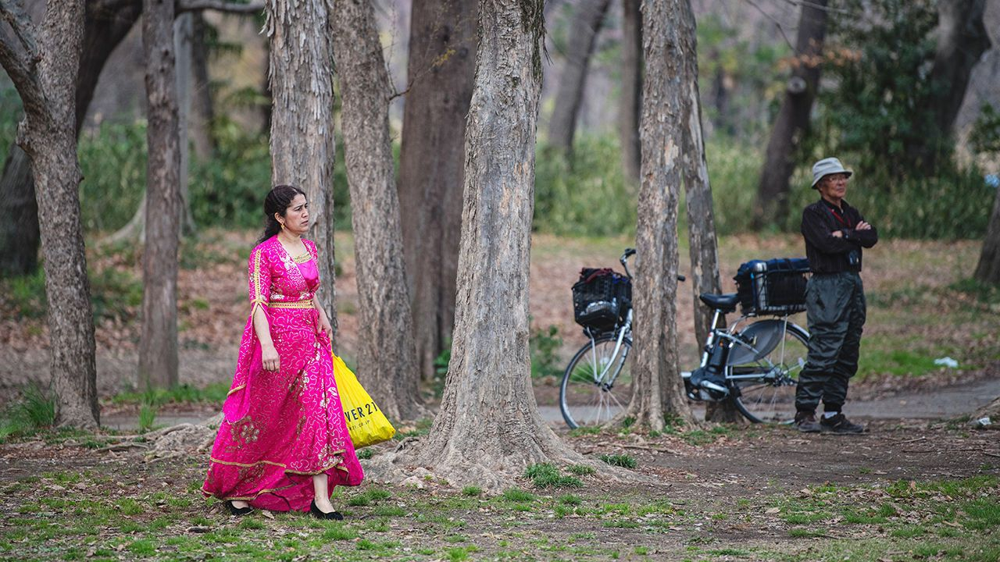
Listen to this story.Enjoy more audio and podcasts on iOS or Android.
In a classroom in Warabi, north of Tokyo, an 11-year-old boy chatters in Japanese as he practises writing the characters for “river” and “tree”. The scene is unremarkable, save for the fact that the boy, Boran, is not Japanese but Kurdish. Warabi and the surrounding area are home to around 2,000 Turkish Kurds, a number that has quadrupled in a decade. Kebab shops line the streets and instructions on sorting rubbish are written in Turkish. The area is known locally as “Warabistan”.
The community illustrates one of the biggest social changes in Japan in decades. The country’s ageing and shrinking labour force sorely needs fresh blood. Yet Japanese policymakers remain deeply averse to immigration. The result is a largely unacknowledged policy of letting in increasing numbers of immigrants through the back door. Japan’s foreign-born population has tripled since 1990, reaching a record 3m, or 2.4% of the population, in 2022.
Warabi and its environs illustrate the trend. The 40,000 foreign-born residents of Kawaguchi, a neighbouring city, represent 6.8% of its population, a level that would have been unimaginable a decade or two ago. These migrants are essential to the local economy. Yet many are in Japan illegally or on sufferance, as longtime asylum-seekers without work permits.
Kawaguchi city is known for its metal-casting industry. Most of its factories now depend on migrants from the Philippines and Vietnam. Kurds first came to the area in the 1990s, looking for economic opportunity and fleeing oppression in Turkey. Many married local women and had children. They have also helped create a hub for demolition firms. “I bet the industry wouldn’t survive without us,” said Ali, a Kurdish asylum-seeker, who worked for a local demolition company for 25 years, rising at 4am to work six days a week. JICA, a government agency, estimates that to meet its growth targets, Japan needs to quadruple its number of foreign workers by 2040.
Most asylum-seekers live precariously. Only one Kurd has been granted formal refugee status. Thousands do not have valid visas or work permits, and are often detained for overstaying their visas or working illegally. Since arriving in Japan three decades ago, and applying for asylum, Ali has been detained for four years in total. “How are we supposed to survive if we don’t have any income?” he asks.
Migrant children suffer the consequences. According to the education ministry, in 2022 around 10,000 of those of school age in Japan were not at school. Komuro Takako, who runs the weekend Japanese classes that Boran was attending, says many schools in Kawaguchi used to reject children who could not write Japanese. Since she started holding the classes seven years ago, things have improved. Yet private schools and colleges still often refuse children of parents without a visa; only a handful of Kurds make it to university. Zehra, a 30-year-old Kurd, shows off her daughter’s excellent elementary-school grades, then adds: “I hope our status as refugees doesn’t get in the way of her future.”
Kurds no way
Local Japanese rarely welcome the migrants. “I don’t know much about the foreigners,” says a Japanese man who has lived in Kawaguchi for 50 years. “There’s no reason for us to interact.” Some Kurds have tried to reach out. One recent morning Vakkas Balibay joined his Japanese neighbours to clean Warabi city park, sweeping the pavement for hours. “I feel like there’s a thick wall between us and the Japanese people,” says Mr Balibay, who has lived in Warabistan for 22 years.
Right-wingers are trying to mobilise people against Japan’s stealthy diversification. Outside Kawaguchi station, Nakamura Kazuhiro of the ultra-right Japan First Party stood on the roof of a van beside the imperial Japanese flag. “Japan must stop accepting migrants,” he roared through a speaker. Kawaguchi’s migrant population, he claimed, is “causing terrible harm to the lives of Japanese people”.
In recent months, right-wingers like Mr Nakamura have targeted Warabistan. The trigger was a brawl among some Kurds in July, which allegedly caused a hospital emergency ward to shut down for five hours. Conservative media dug up more allegations of bad manners or disturbances on Kurdish-run demolition sites. In June a branch of the ruling Liberal Democratic Party (LDP) proposed that Kawaguchi’s city council should take steps to crack down on criminal foreigners. “Some local residents feel like they can’t even walk outside because it’s dangerous out there,” says Okutomi Seiichi, who instigated the proposal.
Such controversies are a distraction from the central problem. Politicians have not accepted the reality of an economy increasingly reliant on immigrants. This makes immigrant life precarious, leading to some of the frictions right-wingers cite. “It’s one-sided to blame the Kurds,” says Nukui Tatsuhiro of Together with Kurds in Japan, a non-profit. Even Mr Okutomi of the ldp puts some of the blame for rowdy Kurds on the government. It only “thinks about filling in labour shortages”, not “foreign migrants’ day-to-day lives”, he says.
Opinion polls suggest younger Japanese are more welcoming, a disparity that is likely to increase with the migrant population. Growing up with classmates who look or sound foreign is routine for Japanese children in and around Warabistan. At some schools in Kawaguchi, 30% of pupils are from migrant families. “I can also speak Turkish and Kurdish,” says Boran, the eager weekend student, speaking in his native Japanese. “But I’m Japanese.”■
Why China and India are watching the Dalai Lama closely
As he ages, his movements and health are under scrutiny
Listen to this story.Enjoy more audio and podcasts on iOS or Android.
Not so long ago, the Dalai Lama’s travel schedule was packed. In the six decades after Tibet’s spiritual leader fled to India in 1959, he visited dozens of countries, meeting royalty, religious leaders and four sitting American presidents along the way. Recently, he has slowed down. One reason is his age (he is 88). Covid-19 complicated travel too, as did the penalties exacted on his hosts by China, which considers him a separatist. But while he has not been abroad since 2018, he has committed to keep travelling within India.
So there was understandable concern among exiled Tibetans and their sympathisers in October when the Dalai Lama cancelled four trips in India. They included one to the north-eastern state of Arunachal Pradesh that was particularly sensitive. China claims the state as its territory and briefly occupied much of it during a month-long war with India in 1962. The dispute over it and other border areas has reignited since the Dalai Lama last visited Arunachal, to China’s fury, in 2017.
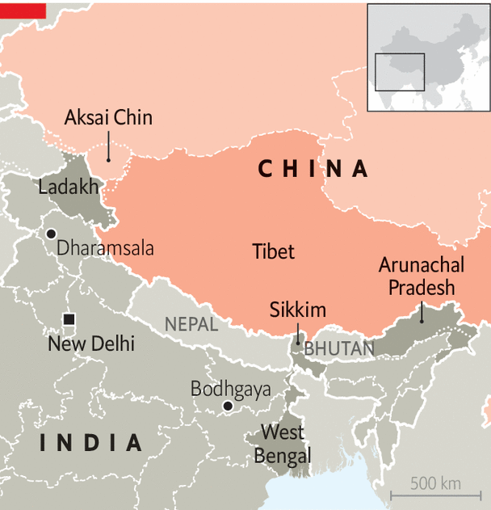image: The Economist
The Dalai Lama’s representatives blame the cancellations on a recent bout of flu. But they are quick to add that there is no serious threat to his health, noting that he has resumed regular activities in his adopted home of Dharamsala in northern India. They are tight-lipped on whether India’s government, which they normally consult before any such travel, requested that he put off the Arunachal trip.
Indian officials did not respond to requests for comment on the issue. They have in the past said the Dalai Lama is free to travel anywhere in India. Last year they helped to arrange his visit to the Indian region of Ladakh, the site of recent border clashes with Chinese troops.
Either way, the cancellations hint at the fraught geopolitics surrounding the Dalai Lama in his later years. Not only could his activities, especially in border areas, provoke a fresh crisis in volatile India-China relations. His health is also a growing concern for Indian and Chinese officials, not to mention Tibetan Buddhists. All are bracing for a potentially disruptive period after his death, when China is expected to appoint a rival successor to the one who, according to Tibetan Buddhist tradition, is likely to be identified as the Dalai Lama’s reincarnation by his aides.
The first sign of change in the Dalai Lama’s plans came when his office announced that a visit scheduled for October 16th-22nd to the north-eastern state of Sikkim and neighbouring West Bengal was postponed because of flooding. Then local media reported on October 10th that he had cancelled a visit to Arunachal that its chief minister had said would occur in October or November (and for which a preparatory meeting was held in September).
The Dalai Lama’s office issued a statement on October 20th saying that because of his recent flu he would not visit Sikkim in November either, and would cancel a planned trip to southern India in the coming weeks. The Dalai Lama’s doctors “have strongly advised that any travel will be taxing”, said the statement. It added that he would go to Bodhgaya, in eastern India, in December, but did not mention Arunachal, the birthplace of a previous Dalai Lama.
Tenzin Lekshay, a Tibetan government-in-exile spokesman, says the Arunachal trip was never officially confirmed by the Dalai Lama’s office and that several factors might have affected discussions about it, including his health, Arunachal’s harsh terrain and the diplomatic implications. Wherever the Dalai Lama travels, he “does not want any inconvenience to the host country,” says Mr Lekshay.
The timing is sensitive for both China and India, whose territorial dispute also involves the Chinese-held region of Aksai Chin, which India claims. In recent years the dispute has flared anew with several clashes along the de facto border. One in 2020 killed 20 Indian troops and four Chinese ones in the worst violence there since 1967. Another on the frontier with Arunachal in December last year caused minor injuries on both sides.
China has also recently reasserted its claim to Arunachal, which it calls Zangnan, meaning South Tibet. The country has issued its own names for villages there and an official map showing Arunachal within its borders. In response, India lodged protests and sent its defence minister, Rajnath Singh, to Arunachal on October 24th.
Stepping back
Despite such dust-ups, neither side seems to want a conflict. Indeed, as a result of talks between military commanders since June 2020, China and India have pulled troops back from most of the border flashpoints, establishing buffer zones free of any patrols. The gradual detente suggests that Xi Jinping, China’s leader, is keener than in recent years to stabilise relations with India, perhaps to discourage it from forging closer military ties with America. Chinese officials also hope to undermine international support for Tibet, especially in India, after the Dalai Lama’s death.
Stabilising the border appears to be a priority for India’s prime minister, Narendra Modi, as well. He needs Chinese imports to achieve his economic goals. With a general election due in 2024, he might also fear that, given China’s military superiority, further clashes could undermine his popularity. But he does not want to be seen as capitulating to China’s demands. Political opponents accuse him of ceding territory too easily. And the Dalai Lama is broadly popular in India.
Meanwhile, the Tibetan government-in-exile has to balance concerns about the Dalai Lama’s health with the need to promote its cause, including among Tibetans in India (tens of thousands of Tibetans have left India in the past decade or so). But it must also maintain support from India, which it hopes will help legitimise and provide refuge for a reincarnation of the Dalai Lama chosen by his followers. “We would like to believe that India will extend the same accord to the next Dalai Lama,” Penpa Tsering, the head of the Tibetan government-in-exile, said in September. As for the current Dalai Lama, he says he will work out details of his reincarnation once he is “about 90”. He often predicts that he will live beyond 113. ■
Rumours swirl after China’s defence minister, Li Shangfu, is sacked
The government is trickling out news of a political bombshell
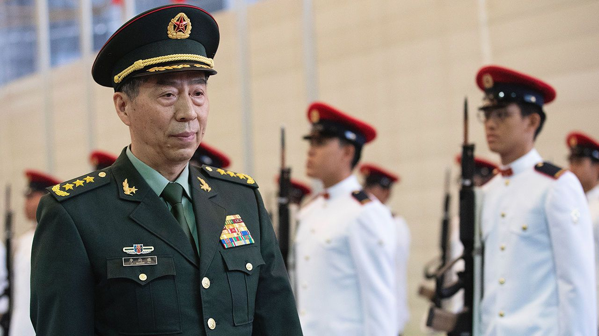
Listen to this story.Enjoy more audio and podcasts on iOS or Android.
Among the biggest cyber-threats to China, said the country’s spy chief, Chen Yixin, last month, is online rumour. As he put it: “A small incident can turn into a maelstrom of public opinion.” Yet the Communist Party’s penchant for secrecy keeps the rumour mill whirring. After weeks of speculation that he was in political trouble, the government announced on October 24th that the defence minister, Li Shangfu, had been dismissed. It gave no reason but, as many netizens correctly surmised, this was far from routine.
General Li’s troubles coincide with rumoured scandal surrounding Qin Gang, who lost his job as foreign minister in July. According to the announcement, both men have also been stripped of their additional titles as state councillors: a senior position in China’s cabinet that is now held by only three people. General Li, who has not been seen in public since August 29th, has also been booted out of the state’s Central Military Commission, a notional body that replicates another one with real power controlled by the party. The final touches to this purge are expected at an annual meeting of the party’s Central Committee. This gathering of about 370 grandees is all but certain to strip the two men of their committee memberships and, in General Li’s case, of his post in the party’s military commission. No date has been set for the meeting, but it is probably imminent.
For two officials of such prominence to fall from grace in such rapid succession, so soon after their elevation (both had been ministers for less than a year), is remarkable enough. What makes their departure all the more striking is that both had been seen as protégés of China’s leader, Xi Jinping. There is no sign that Mr Xi himself is in serious political trouble. Mr Qin’s successor as foreign minister, Wang Yi (who is also Mr Qin’s predecessor), is due to visit America from October 26th to 28th. He is expected to discuss a possible meeting in November between Mr Xi and President Joe Biden. News of Mr Xi’s activities still saturate official media. On state television’s evening news, the brief item relating to General Li and Mr Qin was preceded by a much longer one about a message from Mr Xi to businesspeople. The importance of obedience to the party was a central theme.
After the latest news broke, some users of Weibo, a microblog platform, hinted at the unconfirmed stories that have been circulating abroad and in offline conversations in China: that Mr Qin had an extramarital affair while serving as ambassador in Washington and that General Li was involved in corruption during a previous post as head of military procurement. Some netizens asked whether there might be more hidden reasons for the two men’s downfall. “At this level, it can’t simply be a case of corruption,” said one Weibo user.
They are right to wonder. Also on October 24th, charges were formally laid against a former police chief of Guangdong province, Li Chunsheng. He has been accused of corruption, but , a magazine in Beijing, said his career had “crossed paths” with that of Sun Lijun, a former deputy minister of public security who last year was given a suspended death sentence for various offences, including taking more than $90m in bribes. State media said Mr Sun had also formed a “political clique”, made “groundless criticisms” of party policy and spread political rumours. With its purges and censorship, the party is spreading more of them. ■
A blow to Chinese hubris in the Middle East, but a chance to bash America
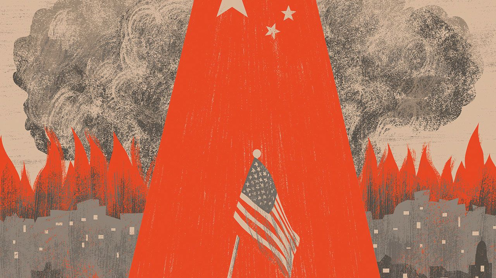
Listen to this story.Enjoy more audio and podcasts on iOS or Android.
A little more than a month before Hamas attacked Israel, China’s foreign-policy chief, Wang Yi, hailed a “wave of reconciliation” sweeping the Middle East, and gave the credit to his own country. By way of evidence, Mr Wang cited a Chinese-brokered deal, struck earlier this year, to restore diplomatic relations between the region’s great sectarian rivals, Iran and Saudi Arabia.
In a call to Iran’s foreign minister on August 20th, Mr Wang explained why China’s pragmatism makes it an ideal peacemaker. To help the region achieve “good neighbourliness and friendship”, Mr Wang pledged, China would continue to pursue a non-judgmental, trade-led approach to international relations. Or, as he put it, China would help Middle Eastern countries find “a development path that suits their own national conditions”.
This self-confidence had been building for some time. Once the Iran-Saudi compact was delivered in March, proud Chinese officials informed Middle Eastern governments that they were ready to tackle the Israeli-Palestinian conflict, diplomats relate—though the plans lacked detail.
Two scholars with institutional ties to China’s intelligence services published a paper with a government think-tank in late July, arguing that a taste for foreign interventions had led America, Britain, France and the Soviet Union all to fail in the Middle East. In happy contrast, China is able to play mediator by emphasising “dialogue” and “mutual respect”, wrote the professors.
A still more boosterish line was taken in August by Wu Bingbing, director of the Institute of Arab & Islamic Culture at Peking University, in an article for the . His essay has been widely read in Beijing’s foreign embassies after being spotted and translated by , a newsletter. It praised China’s focus on development and security, and its refusal to pick sides. Such “positive balancing” can overcome supposedly intractable enmities, as such rivals as Iran and Saudi Arabia compete for China’s commercial favours, wrote Mr Wu.
It would be unfair to single out China for failing to spot October’s looming horrors. Just eight days before the Hamas attacks, Jake Sullivan, America’s national security adviser, called the Middle East “quieter” than it had been for two decades. But it is fair to ask how much of China’s pre-invasion swagger can survive this dark and blood-soaked Middle Eastern moment. More Chinese confidence survives than might be supposed, though not always for very uplifting reasons, is Chaguan’s tentative answer. That is based on public Chinese responses to the crisis and on private conversations with foreign diplomats.
There are constructive reasons why China has no interest in a regional conflagration. It is the largest trade partner of many Middle Eastern countries and is believed to be the largest single buyer of both Iranian and Saudi oil (Iranian oil sales are a murky business). Its economic ties are strongest with rich Gulf states, but it is eager to help rebuild war-shattered countries, investing billions of dollars in Iraq, for instance. Many governments, both in the West and in the Middle East, have asked China to urge Iran to avoid stoking the conflict. China is willing to reason with Iran, diplomats believe. China has leverage, too. But at the end of the day, they add, it is not China but America that has what Iran most desires: a deal to end nuclear-related sanctions and Iran’s isolation.
Less happily, the war in Gaza has not dented the appeal of China’s autocratic worldview to many Middle Eastern rulers. They appreciate that China does not lecture them about human rights. In turn, the six Gulf Co-operation Council countries have endorsed China’s “legitimate” actions in its far-western region of Xinjiang, Mr Wang announced in 2022. Those policies include demolishing mosques, jailing imams and sending as many as a million Muslims from the Uyghur ethnic minority through re-education camps in the name of eradicating Islamic extremism. Many Arab governments fear and loathe grassroots “political Islam”—the sort of piety that leads to anti-government sermons in backstreet mosques—and believe that is precisely what China is fighting in Xinjiang. Moreover, Uyghurs are a Turkic people, and Arab-Turkish rivalries run deep.
Politicians in America and Israel have challenged China’s refusal to call Hamas a terrorist organisation and its downplaying of Hamas atrocities in state media, even as graphic images of Israeli air strikes on Gaza are reported each evening on China’s main news programme. In part, China’s position on Hamas reflects its long-standing view that the root cause of Palestinian violence is the lack of a state. It also reflects a preference for a world order that seeks to resolve crises by balancing the interests of nation states, rather than by making abstract appeals to universal values, which China calls a Western invention. In effect, China treats Hamas as the political entity it would like the group to be, it is said.
Biden gets the blame
Least happily, the Gaza conflict is a fresh chance to depict America as a bullying warmonger. Rather than credit President Joe Biden with hugging Israel close in order to restrain it, selfish motives are assigned to him. Wu Sike, China’s former special envoy to the Middle East, is one of countless Chinese voices to insist that Mr Biden backs Israel because he faces an election in 2024 and fears the “influence” of Jewish Americans. Pondering Gaza spillover effects, Chinese scholars hail the derailing of American-brokered Israel-Saudi talks as a “heavy blow” to Mr Biden’s re-election.
Bashing America will not bring a wave of reconciliation to the Middle East. But China is playing a long game. Opinion polls already show publics favouring China over America in many Arab countries. Across the developing world, distrust of America is being deepened by the war. An American return to the Middle East is not what China hoped to see only a short while ago. But if this crisis distracts and weakens its great rival, China will take that. ■
Senegal’s president asks if democracy can work in Africa’s coup-belt
Macky Sall also warns that a “syndrome of chaos” threatens Senegal
Listen to this story.Enjoy more audio and podcasts on iOS or Android.
Macky Sall, the president of Senegal since 2012, has had a closer view than anyone of the plague of coups in Africa since 2020 and the efforts to reverse them. Two of the first putsches were in Mali, Senegal’s biggest trading partner. Then came one in another neighbour, Guinea. A failed attempt in next-door Guinea-Bissau followed (see map). Mr Sall was chair of the African Union when putschists struck in Burkina Faso for the second time within 2022. And he has played a leading role in the response of the Economic Community of West African States (ECOWAS), the regional bloc, to every coup, including one in Niger in July. It is worrying, then, that when asked what can be done to deter coups or return countries to democracy he is despondent. “It is difficult, I don’t know,” he says. “Sometimes we get lost.”
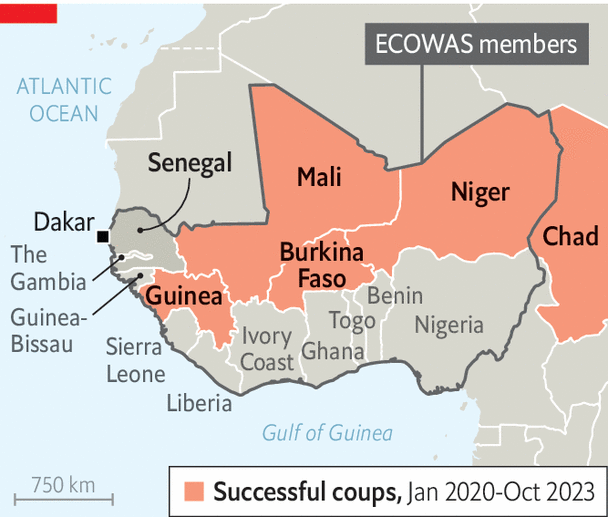image: The Economist
The regional bloc once had a passable record of deterring and reversing coups. Led by Mr Sall’s Senegal, it sent troops to The Gambia in 2017 to force that country’s dictator to step down after he lost an election. Yet now, says Mr Sall, “the effectiveness of the organisation, truly, has been found wanting.” The bloc “lacks the capacity to deal with the problems that arise in the region”, he laments. “It is really losing its leadership role.” ECOWAS had threatened to use force in Niger to reinstate the ousted president, Mohamed Bazoum, but the threat proved hollow. “There are several reasons for why...when we said we will intervene, we did not intervene,” he says, concluding “We could not.” He partly blames the influence of countries including America, which has drone bases in Niger and which pressed for peaceful resolution. (Its diplomacy has borne little fruit. Mr Bazoum is still held hostage.)
Yet the problems go deeper than ECOWAS. “Is democracy as we want to do it really suitable?” he asks in relation to the Sahel. Real power in this region is often not wielded by elected officials, and a focus on polls has not led to stability. In Mali, after an insurgency and a coup in 2012, Mr Sall and the bloc pushed for rapid elections. After a popular revolution in Burkina Faso in 2014 followed by a short-lived coup in 2015, they did the same. Yet the winners of these elections were both eventually overthrown by coups in 2020 and 2022. In Chad, the last Western ally in the Sahel, Mahamat Déby took power unconstitutionally after his father, the president, was killed on the battlefield in 2021. The country is meant to vote next year, but Mr Sall frets that in focusing on this “we risk missing the point.”
One big reason for coups in the Sahel has been the relentless rise of jihadists linked to al-Qaeda and Islamic State. In the first nine months of this year more than 10,000 people died in conflict in Burkina Faso, Mali and Niger. Jihadists are already spreading into Benin and Togo. Alarmed, Mr Sall wants to see the UN play a bigger role. If the problem of terrorism isn’t dealt with, “all of west Africa, all of Africa in general, is going to pay a high price,” he says.
Senegal itself, usually a bastion of stability, will be a crucial test case of democracy’s resilience when it holds presidential elections in February. Mr Sall warns of a “syndrome of chaos that is threatening our country”. Yet this stems from a damaging political fight between Mr Sall and an opposition leader, Ousmane Sonko, over the rules of the game—and who gets to play it.
The fight centres around the question of whether Senegal’s government is trying to tilt the election by using the courts to keep Mr Sonko off the ballot. It began more than two years ago when the authorities laid a rape charge against Mr Sonko, a populist firebrand who rails against corruption. Mr Sonko’s supporters claimed that this was a government plot, noting how two of Mr Sall’s main rivals in the presidential election of 2019 were barred from running because of fraud and corruption convictions. The government rejects this.
In June Mr Sonko was acquitted of rape but convicted on a charge of “corruption of youth”, which is defined as immoral behaviour with someone under the age of 21. The conviction seems likely to render him ineligible to run, though the final determination is yet to be made by the constitutional council.
Trial run
The charge and conviction sparked large protests, some of them violent, in support of Mr Sonko. The demonstrations were also fuelled by hints from Mr Sall that he might try to run for a third presidential term, even though Senegal’s constitution has a two-term limit. It was only in July that Mr Sall definitively said he would not seek office again, after more than two years of protests and at least 37 deaths, according to Amnesty International, a rights group.
Mr Sall’s announcement led to a lull in the violence, though it lasted less than a month until Mr Sonko was once more arrested, this time on charges of plotting an insurrection, criminal conspiracy and other offences. The government also dissolved his political party, Pastef, and arrested many of its leaders, including several mayors. As protests flared, the government cut mobile-internet access for almost a week. Mr Sonko is now on hunger strike and was recently moved to hospital.
The president claims that Mr Sonko’s party wants anarchy. His sweeping logic for banning it is that the actions and words of Mr Sonko and his party, according to Mr Sall, are at odds with the laws of the republic and its constitution. “They [Pastef] call every day…to go burn the houses of ministers, to go kill people,” claims Mr Sall. Yet Mr Sonko says that it is the government that bends or ignores the law.
Ousmane Diallo of Amnesty in Senegal says that the government “does not always respect the rule of law”. Earlier this year the police surrounded Mr Sonko’s house in Dakar, the capital, and refused to let him leave. The government also tends to blame Pastef for any call to violence on social media, even from those outside the party. Pastef’s leaders have, indeed, been calling for protests and “resistance”. This is an ambiguous word, Mr Diallo says, but it is not the same as calling for violence. Yet it is also true that many protests have turned violent and that the party’s rhetoric has grown more dangerous, particularly its call for the army “to join the side of the people”. Mr Sonko himself has told his followers: “If you force open the homes [of those in power] you will find billions there.”
Even as they chip away at Senegal’s democratic institutions, each side plays down its own excesses. “Senegal has no political prisoners,” claims Mr Sall. Yet nearly 500 people were arrested during the various protests, according to the judicial authorities. Many still languish in jail. “Some of them are definitely political prisoners,” says Mr Diallo. “You have a core leadership of Pastef…who have been arrested and detained for a long time.” Mr Sonko’s party implausibly claims that his extreme comments are taken out of context.
Many fear more violence before the election, especially if Mr Sonko is definitively barred from running. Even Mr Sall prevaricates when asked if he expects the election to be peaceful. His tough approach to his firebrand rival may help his chosen successor, Amadou Ba, the prime minister, over the line. But it is also polarising and risky, particularly if Mr Sonko is allowed to run. “He will win because they have created a hero by oppressing him,” argues Alioune Tine, a founder of AfrikaJom Centre, a think-tank in Dakar.
Ruling parties elsewhere in Africa will be watching Senegal closely to see whether they can take a leaf from Mr Sall’s book. The man himself bristles at the suggestion there has been a backsliding of democracy on his watch. “Those who say that [there has been] are supporters of anarchy and chaos,” he retorts. “Senegal has no lessons in democracy to learn from anyone.” ■
Many are banned elsewhere for causing cancer or harming the environment
Listen to this story.Enjoy more audio and podcasts on iOS or Android.
For quite a while, Nigeria has been talking up its desire to end its reliance on oil money and earn more from other sources, especially farming. Its population of around 213m, the biggest in Africa, has some 37m hectares of fertile land. But it grows too little on it.
Worse, some of its produce isn’t healthy. Food exported to Europe and America has been rejected because of its excessive residue of pesticide. To feed Nigeria’s own people, let alone markets abroad, farmers will have to cut back on their use of some chemicals.
That will not be easy, since Nigeria is one of the continent’s leaders at splurging on pesticides, importing some $384m-worth in 2018 alone to kill bugs and weeds. Yet 58% of the pesticides registered for use in Nigeria are banned in Europe because of their toxicity.
Sometimes the chemicals are so strong that they don’t only wipe out pests and other crop-predators; they can kill people. In 2020 some 270 people in a village in Benue state died after fishermen using chemicals to catch fish had dumped some of them into the community’s main water source. Scientists at several Nigerian universities argue that dangerous pesticides and other agrochemicals are contributing to rising rates of cancer, which kills as many as 79,000 Nigerians a year. A recent study found that roughly 80% of the pesticides most commonly used by small-scale farmers are highly hazardous.
“Farmers use what’s available and recommended to them,” taking advice from marketers and traders, says Jochen Luckscheiter of the Heinrich Böll Foundation, an NGO tied to Germany’s Green party. “If you want to stop them, you have to stop the supply—and make alternative products available.”
In August environmental activists and politicians gathered in Abuja, Nigeria’s capital, to review the current laws on importing and using pesticides—and discovered that hardly any exist. Instead, they lamented that two bills going through parliament will make it easier for foreign firms to sell dangerous wares.
Boosting Nigeria’s farm output is no simple task. Farmers need seeds that produce higher yields, affordable fertiliser and better access to markets. They also need security. Thousands have fled their homes and fields because of jihadists in the north and to escape fighting over land between herders and farmers. By contrast with these challenges, it ought to be easy to regulate pesticides so they do not poison people. ■
History will complicate King Charles’s visit to Kenya
Yet the British monarch may also be able to heal some wounds
Listen to this story.Enjoy more audio and podcasts on iOS or Android.
The late Queen Elizabeth could count on a warm reception when she visited Africa. Wherever she went, crowds sang and danced. Though the union flag had long since been lowered from official buildings, hordes of cheering children still waved it. Such scenes were replicated across most of the 20 African states she visited in her 70-year reign.
But the queen was popular in a way that Britain, as the former colonial power, often was not. The British ruled in the name of the crown yet many Africans did not seem to resent its embodiment. Indeed, she was a valuable British asset in Africa, dazzling some of its most truculent leaders. Tanzania’s Julius Nyerere and Zimbabwe’s Robert Mugabe admired her despite their socialism. “Whatever else is blown into the limbo of history, the personal regard and affection which we have for your majesty will remain unaffected,” Kwame Nkrumah, Ghana’s first president, told her when she visited his country in 1961.
Charles III, who arrives in Kenya next week on his first visit as monarch to Africa, may find the wind set less fair. Rows over slavery, colonialism and the legacy of the Black Lives Matter movement mean that royal visits can now draw angry protesters as much as jovial admirers. Britain’s newly minted Foreign, Commonwealth and Development Office is anxious to ensure the trip passes smoothly. Kenya is a strategic ally in a troubled region. Britain carries some heft as a big donor and investor. Its army trains there. The visit may project some oomph as Britain struggles to maintain its stature in a continent where America, China and Russia all bid for influence.
But Britain can no longer waft away its past. A Caribbean tour last year by Prince William, now the Prince of Wales, shows what can go wrong, with angry demands for apologies for slavery and calls for reparations. In Kenya the king is sure to puff up shared interests in tech, defence and conservation. But he is also set to acknowledge “wrongs suffered” by Kenyans under British rule. Most acute is the suppression of the Mau Mau uprising in the 1950s.
Striking the right note will be tricky. A formal apology could open Britain up to more strident demands for compensation, notes Nic Cheeseman of the University of Birmingham. Yet anything too mealy-mouthed could be damned as obfuscation. The subjugation of the Mau Mau was exceptionally harsh. More than 1,000 rebels were hanged after summary trials. Thousands more were killed in the forests or died in squalid detention camps.
Yet for decades after independence in 1963, the image of Mau Mau as sullen and savage was as prevalent in official Kenyan circles as it was in British colonial ones. “Mau Mau was a disease which has been eradicated, and must never be remembered again,” declared Jomo Kenyatta, who was locked up by the British on the dubious charge of leading the Mau Mau. He went on to become Kenya’s first president (and was the father of Uhuru Kenyatta, who stepped down as president last year).
Kenyatta’s antipathy towards the Mau Mau is not hard to understand. The rebellion was not just an uprising against the British. It was also a civil war among the Kikuyu, Kenya’s largest ethnic group. Those rendered landless by white farmers were more likely to join the rebels, while Christian converts and the better-off often gravitated towards the colonial government. After independence Kenyatta’s government ensured that Kikuyus who got the farms vacated by British settlers were often those who had sided with the crown. Many Mau Mau veterans got nothing.
On Queen Elizabeth’s last formal trip to Kenya, in 1983, Mau Mau was not mentioned. Her host, Daniel arap Moi, Jomo Kenyatta’s successor, was from an ethnic group that had not been involved with Mau Mau. He thought it wise to keep a ban imposed on the movement by the British. A man so enamoured of the queen and her husband that he named two of his children after them would hardly rock the boat.
Today’s mood has changed. Mau Mau has long been rehabilitated. The ban was at last lifted in 2003. But time has proved no great healer. Anger over Britain’s past rule, especially among aggrieved Kikuyus, has not diminished. In 2013, seeking to assuage the anger, Britain coughed up £19.9m ($24m) in costs and compensation to 5,000 Kenyans who had suffered in detention. It also paid for a Mau Mau memorial.
Awfully sorry
Britain’s government hopes that this show of contrition has blunted calls by the family of Dedan Kimathi, a Mau Mau general the British hanged in 1957, and others for a formal apology—and a bigger payout. The clamour is louder in civil-society and veteran circles than in Kenyan government ones. William Ruto, Kenya’s president, will be keener to burnish his image on the world stage than to nag King Charles about history, says Patrick Gathara, a Kenyan commentator. Besides, making too much of a fuss risks exposing the Kenyan elite. “Lots of those in government are from families who came out on top because they were colonial collaborators,” he adds. “There is a real reluctance by the Kenyan elite to go back and look at where they got their wealth and power.”
Some ordinary Kikuyus take a similar view. “It is a complicated business,” sighs Wachira Mwangi, a Nairobi tailor. Some of his kin went into the forest and joined Mau Mau. Others, horrified by atrocities by the rebels, including the massacre of dozens of women and children in the loyalist village of Lari, joined the Home Guard and fought on the colonial side. Don’t apologise, he advises the king. “It will just stir things up again. Better to leave it all in the past.” ■
Instead of undoing Ataturk’s legacy, Recep Tayyip Erdogan has claimed it
His secularism is played down, his nationalism celebrated
Listen to this story.Enjoy more audio and podcasts on iOS or Android.
NEARLY 60% OF Turks, including 46% of supporters of the ruling Justice and Development (AK) party, according to a survey published in August, consider him the country’s most beloved historical figure. More than nine out of ten say they are grateful for what he did for Turkey, shows another, less recent poll. And over 73% believe the values he represents are more relevant than ever. Turkey’s president and AK’s leader, Recep Tayyip Erdogan, though fresh from another election victory this summer, could only dream of such numbers. They are Kemal Ataturk’s. He may have been dead for more than 80 years, but he is still Turkey’s most popular politician.
That much will also be clear on October 29th, when Turks celebrate a hundred years to the day when Ataturk, having saved what remained of the Ottoman empire from an invading Greek army and abolished the sultanate, proclaimed the empire’s successor state as a republic. Turkey’s new parliament elected him president only hours later. What followed over the next decade was one of the most thorough, and occasionally ruthless, exercises in nation-building in history. By the time of Ataturk’s death, Turkey had a new alphabet, a new civil code, universal suffrage, and a new state religion, secularism, to go along with the old one, Islam.
Mr Erdogan has often been viewed as the anti-Ataturk. After he became prime minister in 2003, his critics often accused him, as an acolyte of political Islam, of planning to turn Turkey into a second Iran. A few still do, but such fears have been misplaced. Mr Erdogan has had two decades in power, more than Ataturk had, to dismantle Turkey’s secular order. Had this been his plan all along, he does not have much to show for his efforts, despite his control over state institutions and much of the media. Mr Erdogan has chipped away at parts of Ataturk’s legacy. But he has also co-opted and redefined it. Ataturk’s legacy may have co-opted him too.
Under Mr Erdogan, Islam has a bigger place in public life than at any time since the Ottomans. Turkey’s leader has empowered a generation of pious businesspeople, and binned restrictions on women’s wearing of the headscarf. He has overhauled education, allowing more religious teaching, and opened thousands of schools, designed to educate Islamic preachers. These now account for over 13% of all public schools. He has imposed some of the highest taxes on alcohol in Europe.
But he has seen meagre returns on his investment. According to a study by Konda, a pollster, the share of Turks who identify as non-believers had risen to 7% in 2021 from 2% a decade earlier. The share of women who wear some form of the Islamic headscarf has dropped, not increased, from 63% to 59%. Despite rocketing prices and draconian restrictions on advertising, booze consumption has remained steady (though it is the lowest in Europe.)
Mr Erdogan and AK will never be the republic’s loudest cheerleaders. “To celebrate the republican regime, you need to come to terms with the failure of the Ottoman empire,” says Ali Carkoglu, a political scientist. “And they have not done so.” But they do not aspire to knock Ataturk from his pedestal either. Ataturk’s memory is some of Turkey’s most valuable and most abused political currency. The name of the country’s founder was on the lips of the generals who brought down four governments since 1960, and of those army officers, backed by the Gulen movement, a secretive Islamic cult, who tried to topple Mr Erdogan in 2016. Politicians from the right and the left, including Turkey’s two main opposition parties, as well as Mr Erdogan’s political allies, the Nationalist Movement Party and a group called Vatan, all claim to follow in Ataturk’s footsteps.
So does Mr Erdogan himself. During his early years in power, Turkey’s leader was more openly critical of Ataturk, once going so far as to refer to him and his successor as “the two drunkards”. But over the past decade, after losing the support of Turkish liberals, the Kurds and the Gulen movement, and teaming up instead with nationalists, many of them embedded in the army and the police, Mr Erdogan has embraced Ataturk as a symbol of his own power. “Twenty years ago Erdogan was the outsider and Ataturk was the state,” says Halil Karaveli, of the Central Asia-Caucasus Institute. “And now Erdogan is the state.”
But the embrace is selective. Ataturk’s image as a secular reformer, state-builder and supporter of Turkey’s European vocation has taken a back seat. Mr Erdogan has instead emphasised Ataturk as the , the war hero who saved Turkey from the Greeks, the British, the French and the Italians, who tried to partition the country after the first world war, notes Lisel Hintz, an academic at Johns Hopkins University. “That image suits Erdogan’s narrative of Turkey as a rising power, pushing back against the West and the liberal international order,” she says.
Turkey’s leader has created a nationalism that transcends old divisions between religious and secular, says Mr Karaveli, and has made the redacted Ataturk one of its emblems. Mr Erdogan has made a career out of polarising the country. He will continue to do so. But his vision of a new “Turkish century” combines strategic autonomy from the West, the pursuit of economic expansion powered by new infrastructure and defence projects, and a whitewashed version of the Ottoman past. All this appeals to many outside his own party. It may endure, even after he is gone.
Mr Erdogan would not have felt at home in Ataturk’s Turkey, and Ataturk would not have felt at home in Mr Erdogan’s. But as the champion of a new brand of state nationalism, Turkey’s strongman in his new incarnation no longer views himself as Ataturk’s challenger, but as his heir. ■
Who is sabotaging underwater infrastructure in the Baltic Sea?
Russia is the prime suspect, but a Chinese-flagged ship is also thought to have been involved
Listen to this story.Enjoy more audio and podcasts on iOS or Android.
PITY THE Baltic sea-creatures who just want a quiet life; their patch has never been busier. On October 17th Carl-Oskar Bohlin, Sweden’s minister for civil defence, said that a communications cable between Sweden and Estonia had been partially damaged earlier in the month. It was the latest of several suspicious incidents that have given rise to fears that Russia is making mischief underwater.
On October 8th the nearby Balticconnector gas pipeline and a communications cable between Finland and Estonia were damaged due to what Sauli Niinisto, Finland’s president, called “external activity”. The two cables were some distance from one another. Finnish police later said the cause was “an external mechanical force”, with signs of an “extremely heavy object” left on the seabed.
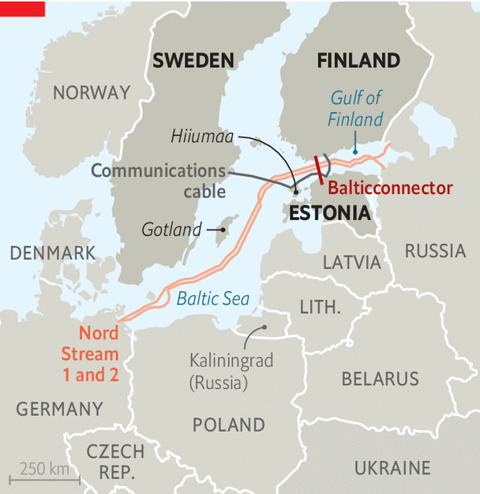image: The Economist
These events have come just over a year after the Nord Stream 1 and 2 gas pipelines from Russia to Germany were damaged by a pair of explosions. Initial suspicion fell on Russia, but Western intelligence agencies have uncovered signs that Ukrainians might have been behind the Nordstream blasts. The situation remains murky.
In the latest incident, Estonia’s government learnt on October 11th of a drop in capacity on the cable, which is located in its territorial waters around 50km off the coast of Hiiumaa, an island at the mouth of the Gulf of Finland. Mr Bohlin said that the incident occurred at roughly the same time and in the same area as damage to the Balticconnector pipeline.
The problem was quickly repaired and the cable is running again. In public, regional officials are treading carefully. In private, however, officials strongly suspect that Russia is involved. The worry is that Russia is flexing its muscles to intimidate Baltic countries. “The security policy situation in our immediate area has deteriorated,” declared Pal Jonson, Sweden’s defence minister, speaking alongside Mr Bohlin. Sweden, along with Finland, applied to join NATO last year, overturning centuries of military non-alignment.
American and European military-intelligence agencies say that their primary concern is Russia’s Main Directorate of Deep-Sea Research, known by its Russian acronym GUGI. It is essentially a mini-navy unto itself, with a variety of spy ships and specialist submarines. Among them is the , the world’s largest operational submarine, capable of reaching considerable depths. These vessels can deploy divers, smaller submarines or underwater drones, which could be used to cut cables or to lay explosives.
There has also been a twist in the story. Finnish police looking into the Balticconnector damage were investigating the , a Russian nuclear-powered cargo ship, and the , a Chinese container ship. Both were present in the area at the time. But the Chinese ship, flagged in Hong Kong, was closer to the crime scene and, according to public ship-tracking data, slowed down near the pipeline. On October 20th Finnish police said it was their investigation’s focus. The prospect of China trying to sabotage European maritime infrastructure would be devastating; but military sources say the ship’s complex ownership structure has connections to Russia. Even more sinister, the appears to have stopped at the Russian enclave of Kaliningrad shortly before the incident and taken on fresh crew there.
European allies have grown increasingly concerned about the difficulty of stopping potential attacks before they occur and about identifying the perpetrators if they do. A paper published in 2021 on Russian military robotics by the International Centre for Defence and Security, an Estonian think-tank, noted that Estonia and other Baltic states had only a limited grasp of what was going on under the Baltic Sea, thanks to tricky hydrology and a lack of monitoring equipment.
Now that the danger is more tangible, allies are scrambling to address these gaps. On October 13th leaders of the Joint Expeditionary Force (JEF), a British-led alliance of ten northern European countries, including Estonia, Finland and Sweden, discussed the issue during a summit on Gotland, a Swedish island. Their joint statement invoked the Balticconnector damage: “The incident demonstrates that threats to critical undersea infrastructure are real.”
A few days later, Antti Hakkanen, Finland’s defence minister, said that his country was stepping up its undersea surveillance in the Gulf of Finland and Baltic Sea, in part by acquiring new underwater sensors. On October 19th Finland’s defence ministry blocked three transactions in which Russian buyers had attempted to purchase real estate, on the grounds that these would “hinder the organisation of national defence or the surveillance and safeguarding of territorial integrity”. And on the same day NATO, having established an underwater protection cell earlier in the year, said it had stepped up air and maritime patrols in the Baltic Sea, and had sent additional minehunters to the area.
They may need to stick around. “A crippling effect on infrastructure operations in Finland remains unlikely in the immediate future,” noted SUPO, Finland’s intelligence service, on October 12th. But the days of stable Russia-Finland relations were over, it warned. “Russia is currently treating Finland as an unfriendly country.” ■
Listen to this story.Enjoy more audio and podcasts on iOS or Android.
In Europe today, meat is politics. Britain’s ruling Conservatives recently accused the Labour opposition (falsely) of plans for a “meat tax”. Poland’s outgoing governing party claimed (absurdly) that its opponents would force people to eat “worms instead of meat”. In France, where consumption per person of meat is twice the global average, the debate has taken a different twist: is it possible to be left-wing and still eat meat?
In the home of , red meat is more than a mere source of protein. It is an expression of muscular national identity; the farming of cattle, a guarantor of rural tradition. Steak, wrote Roland Barthes, a French literary theorist, in 1957, “communicates its national glamour” to its junior partner, the self-effacing chip. Over the past decade, however, worries about health and climate change have pushed even the French to eat less red meat. Last year their consumption of chicken overtook that of beef for the first time. In left-leaning, kale-eating quarters, is on the rise.
So when Fabien Roussel, leader of the Communist Party and champion of the carcass-handling trades, last year confessed his enduring taste for a good steak, fellow left-wing leaders were horrified. In the fight against climate change, Sandrine Rousseau, a Green party figure, told the Communist chief last month: “You will not win with a steak.” It was high time, she snapped last year, for the French to stop treating steak as a “virility symbol”. Meat-eating, retorted Mr Roussel, has nothing to do “with what you have in your underwear”.
If France is to respect its net-zero pledges, the national auditor concluded in May, it will in future have to raise fewer cattle. It says they produce 12% of its greenhouse-gas emissions. A third of the French, it also noted, still eat more than the recommended weekly helping of 500 grams of red meat. For now, steak has not entirely lost its glamour, even as it becomes increasingly rare.■
Ukraine’s allies are scrambling to bolster its air defences
The country is bracing for another winter onslaught of Russian missiles
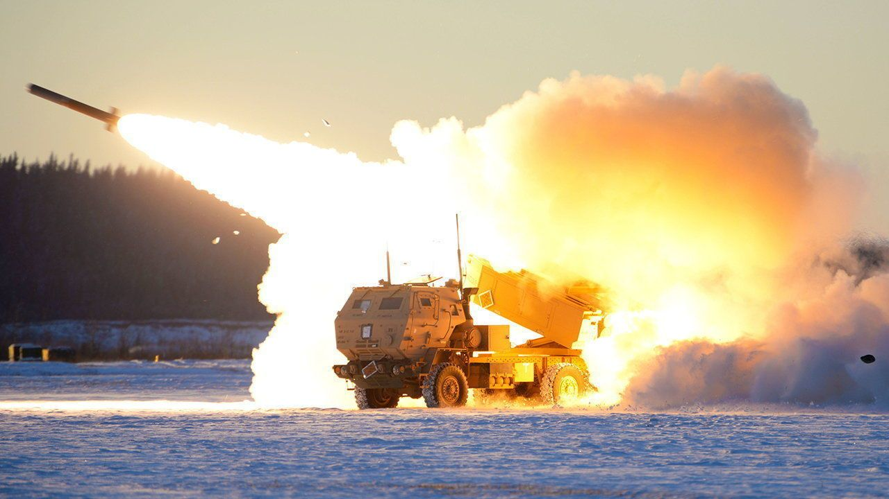
Listen to this story.Enjoy more audio and podcasts on iOS or Android.
MUD AND EXHAUSTION are pushing the Ukrainian counter-offensive towards its close. The focus is thus shifting to protecting the country’s cities, infrastructure and vital production facilities from a renewed Russian missile and drone campaign, aimed at eroding Ukraine’s will and capacity to fight.
On October 11th the Ukraine Defence Contact Group, an alliance of 54 countries providing military support to Ukraine, convened in Brussels for its 16th meeting. President Volodymyr Zelensky left the group in no doubt that his country’s most urgent needs are air defence and artillery munitions. But earlier this month, Admiral Rob Bauer, NATO’s most senior military official, said of the West’s ammunition stockpile that “the bottom of the barrel is now visible.”
Last winter, after some difficult months when Ukraine’s power grid came under frequent assault by salvoes of Russian cruise missiles and Iranian-supplied Shahed drones, the country’s air defence slowly gained the upper hand. The vast majority of Russian missiles were shot down before reaching their targets. Western ground-based air-defence systems, such as Patriot and IRIS-T missile batteries, arrived in the nick of time, and Ukraine showed considerable skill in integrating a wide mix of platforms and radars. Its repair teams confounded expectations by managing to restore energy supplies rapidly, even after multiple attacks—and despite becoming targets themselves.
But this winter Ukraine is braced for more of the same, or worse, from an enemy that has learned from last year’s campaign. Ukraine has built concrete defences around important parts of its electricity grid, and has acquired emergency generators to prevent total blackouts. But just as the ground war is essentially attritional in nature, so is the air war.
Douglas Barrie, an air-power specialist at the International Institute for Strategic Studies, a think-tank, says the question for both the defenders and the attackers is, “What have you got left?” In other words, will Ukraine run out of anti-missile munitions before Russia runs out of cruise and ballistic missiles and attack drones? And will Ukraine have enough batteries to cover the targets that the Russians are able to hit?
Nico Lange, a Ukraine expert at the Munich Security Conference, worries that Ukraine has neither enough platforms nor sufficient munitions for those that it does have. The country is now almost entirely dependent on Western systems, having used up nearly all of the mostly Soviet-era S-300 and Buk missiles it was able to get its hands on. The deficiency is especially acute for short-to-medium range systems, such as the Kongsberg/Raytheon National Advanced Surface-to-Air Missile System (NASAMS), made in Norway and America.
Lloyd Austin, America’s defence secretary, has hinted that more NASAMS, and the AIM-7 missiles it can fire, will be sent to Ukraine from existing stocks. However, Mr Lange says that production rates are not increasing quickly enough to meet Ukraine’s needs this winter. Defence companies in Europe are willing to crank up production on existing lines, but, says Mr Lange, still appear reluctant to invest in new lines to increase longer-term capacity.
So even when Ukraine has been promised the kit it needs, there is no guarantee it will arrive in a timely way. Take the IRIS-T batteries, two of which have already shown their effectiveness. Germany has promised to send more to Ukraine, but it is not clear when they will arrive. After the Brussels meeting Germany issued a list of everything it has sent, or is about to send, to Ukraine. The list included two more IRIS-T batteries. The system’s manufacturer, Diehl Defence, has committed to doubling production from four systems a year to eight, but not until 2025.
Six IRIS-T systems are due to be delivered this month, but to Germany’s own air force rather than to Ukraine. Other European air forces are also scrambling to place orders for IRIS-T, impressed by its near 100% hit rate in defending Kyiv.
One short-term answer to the shortage of cutting-edge air-defence systems is to send older systems that the West and its allies no longer want but are held in storage. An example is Patriot’s predecessor, the Hawk medium-range surface-to-air missile that entered service in the 1960s, but which remains effective if fitted with updated radar. Spain has sent some Hawks to Ukraine, and America may provide many more, some via Taiwan.
Similarly, the RIM-7 Sea Sparrow, an equally whiskery short-range anti-ship missile, has turned out to work well with Ukraine’s Soviet-era Buk launchers. More could be dusted off for service.
And Ukraine needs whatever it can get. The West once thought its sanctions might deny Russia the components it needs to make more missiles. But those hopes have dimmed. In May Ukrainian intelligence sources estimated that each month Russia is able to manufacture around 60 land attack cruise missiles, five Iskander ballistic missiles and two Kinzhal hypersonic glide weapons. Mr Barrie says that debris recovered from recent strikes by KH101 cruise missiles confirms that they were recently produced.
Russia is repurposing surface-to-air and anti-ship missiles for land attack roles. It can also call on innumerable cheap loitering munitions and Shahed drones, which are now being built in Russian factories.
An emerging threat is air-launched “glide bombs” guided by GLONASS, the Russian equivalent of GPS. They have a range of 50km, are accurate to within ten metres and are far cheaper than missiles. Mr Lange says that Ukraine has a desperate need for more and better electronic-warfare equipment that can counter both guided bombs and drones. But he fears that donor countries may be reluctant to share it.
By stockpiling missiles during the summer, Russia should be able to resume attacks at a similar level of intensity to last year’s, and maintain them for several months. There are also some indications from recent strikes that Russia will opt to hit targets less well defended than Kyiv, such as Odessa and other port cities. As Mr Barrie says: “Ukraine is a big country. There are lots of things the Russians can go after.”
Russia, it appears, is not going to run out of missiles. The question is whether Ukraine will retain the means to keep shooting them down. ■
A mysterious attack in northern Kosovo rattles everyone
Might civil strife resume?
Listen to this story.Enjoy more audio and podcasts on iOS or Android.
Serbia’s president, its intelligence services and its armed forces were all involved in a plot to seize control of the north of Kosovo last month. At least, so says Xhelal Svecla, Kosovo’s minister of the interior. A Serbian paramilitary group was discovered by a passing police patrol, three Serbs died in a shoot-out, a Kosovo Albanian policeman was killed by a remote-controlled mine, and a huge cache of weapons was left behind by the group as it fled. Mr Svecla says this was all part of a plan by the Serbian authorities to seize control of Kosovo’s north with a proxy force, in emulation of Russia’s grab of parts of Ukraine’s Donbas in 2014.
Serbia denies involvement and blames Kosovo for provoking local Serbs. However, it is true that in the past Serbia’s president, Aleksandar Vucic, has said he would like a deal whereby Kosovo’s overwhelmingly Serb-inhabited north reverts to his country’s control (Kosovo was a province of Serbia until in 2008 it declared independence, which Serbia refuses to recognise). In 2018 Mr Vucic said that “All Serbs know they lost Kosovo, but I will try everything in my might to retrieve what I can, so in the end it is not a total defeat or total loss.”
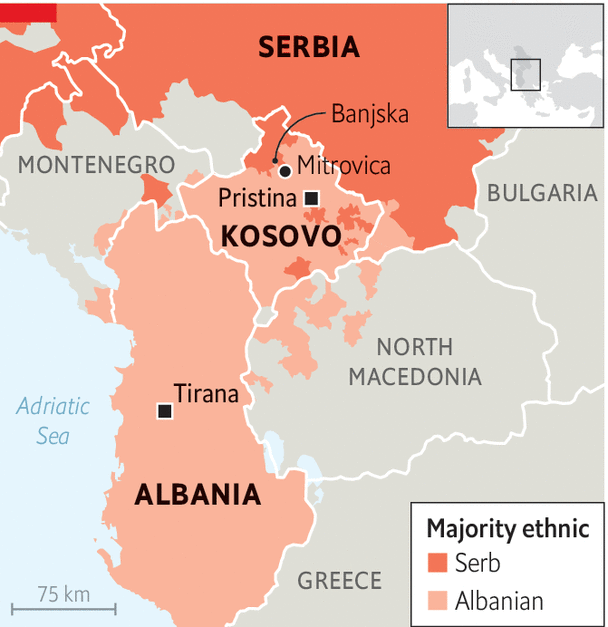image: The Economist
One month after the violent confrontation in the village of Banjska, nothing is clear. Milan Radoicic, a Serb politician and businessman in Kosovo, claimed through his lawyer that he was responsible for forming the paramilitary force which escaped to Serbia across the hills surrounding the monastery that dominates Banjska. The Serbian state had absolutely nothing to do with his plans, he said. Many in Kosovo find that hard to believe. Mr Svecla claims that records left behind when the group of some 30 men fled on September 24th show that their arms had been supplied by the Serbian army. Footage left behind in one of its drones, he says, shows that the group trained in a Serbian military base. Mr Radoicic is at liberty in Serbia.
Whatever the truth of this murky affair, the north of Kosovo poses a problem. Overall, Kosovo’s population is overwhelmingly ethnic Albanian. Its government has struggled since its declaration of independence to control the Serb-dominated north. Serbian List, the mainly Kosovo Serb political party, is in effect a branch of Serbia’s own ruling party. Until he resigned in the wake of the September violence, Mr Radoicic was the deputy head of Serbian List but is widely regarded as the man in charge of it. He is under American and British sanctions for alleged corruption.
A sign at the entrance of Banjska’s medieval monastery tells visitors that they are not allowed to bring guns inside. It stands on a high hill surrounded by other steep, lush green hills. The countryside here is criss-crossed by small roads that run across the border to Serbia and are well-established smuggling routes. Mr Svecla claims that Mr Radoicic planned to secure control of these roads and the border so that more men could cross over from Serbia and consolidate Serb control of the north, once the first group had seized the northern police stations.
Preparations, he says, are in the offing for another attempt. Well-placed Serb sources in Kosovo, however, do not believe there was a plot to grab the north. But what the group was doing is a mystery all the same. One says that most of its members were locals who had been “manipulated”. For sure, Kosovo Serbs are frightened of Kosovo’s special police deployed to the north, most of whom do not speak Serbian. One theory is that the group was preparing to dish out arms but was surprised.
Ever since Russia’s invasion of Ukraine last year, the EU and America have been eager to persuade Kosovo to do a deal to normalise relations with Serbia. The nub of it involves granting a measure of autonomy to ethnic Serb areas in exchange for Serbia’s de facto recognition of Kosovo as an independent country. Neither Mr Vucic nor Albin Kurti, Kosovo’s prime minister, have been keen on this. Since May the EU and America have both penalised Kosovo. Their diplomats are infuriated by Mr Kurti, whom they blame for the persistence of upheavals in the north. For this reason, say Serbian observers, it would have made no sense for Mr Vucic to have given a green light to Mr Radoicic to mount an insurrection right now, just when he had hitherto escaped any blame for the failure of the talks to bear fruit.
Miroslav Lajcak, the EU diplomat who leads the dialogue between Kosovo and Serbia, is trying to resuscitate it. The two leaders were both due in Brussels as went to press. Both sides need to hurry, because many Serbs and Albanians are not waiting for their leaders to bring them a better life. In 1991 Kosovo’s population was estimated at 1.9m. Now, as so many emigrate, there may be no more than 1.5m left in Kosovo, of whom Serbs may now number no more than 65,000 souls. ■
What markets are trying to tell Europe—and why it should listen
There’s gold in them thar market signals
Listen to this story.Enjoy more audio and podcasts on iOS or Android.
When Europeans turn their attention to what markets have to say, it is usually because trouble is brewing. A decade ago, as the euro-zone crisis raged, politicians obsessively checked the “spread” between the annual interest on bonds issued by Italy or Greece over those of Germany to gauge just how nervous investors were about lending to profligate southern countries compared with frugal northern ones. More recently they obsessed over the short-term price of gas, often imported on ships, that was urgently needed to replace the Russian methane no longer flowing through pipelines. Such experiences have left policy types wary of markets, which they naturally think of as fickle, “Anglo-Saxon”, and to be controlled. That is a shame: there is a great deal to learn from the signals coming from investors in anything from debt to currencies and much else besides. Politicians should listen.
First, a caveat: the old curves whose signals they once heeded are no longer worth hourly scrutiny. Spreads between the bonds of southern countries and Germany are nowhere near the levels of the euro-zone panic these days. In some cases, such as Spain and Greece, it is because investors think the prospects for those economies have improved. In the case of Italy, however, there is still plenty of concern left over how it can repay an ever-larger debt pile, given a budget deficit of over 5% this year, and ho-hum growth prospects.
Investors will currently lend money to Italy at an annual rate of around two percentage points more than they do to Germany. That does not reflect their optimism. Rather, the European Central Bank has indicated it is on hand to snap up Italian bonds if other investors will not. Policymakers did not like what markets were once saying about Italy, and (perhaps sensibly) partly blunted the signal instead. Still, there is no escaping that Italy’s debt is a looming problem. The nominal interest rate it pays on new debt of around 5% is up from 1% around two years ago and the highest for a decade. As its borrowings are gradually refinanced at this level it will cost Italy a mint, worsening its debt position (though still-high inflation could help bring down the real cost). Other countries have similar headaches. Balanced budgets in France are something that is endlessly talked about but seldom indulged in (its last surplus was in 1974).
Information emanating from a new form of debt that investors are buying and selling is sending another message EU politicians may not want to hear: that their ambitions to build an ever-closer union are not credible. That signal comes from the price of the roughly €400bn ($423bn) of bonds issued by the EU to fund an economic jolt in response to the covid-19 pandemic. This new financial arrangement—of debt contracted jointly, not attributable to any one EU country—was hailed as a watershed of integration, a “Hamiltonian moment” that would lead to further such borrowing. (The club had in fact issued debt before, but on a far smaller scale.) A quick look at market data suggests that investors think this grand project is a fantasy.
The bonds are guaranteed by all 27 EU national governments, albeit in a slightly circuitous way. That might suggest they should be no riskier to investors than the safest debt of the club, that of prudent Germany. But the yields demanded by buyers are much higher, around the level for France or even Spain at times. Two lessons are being telegraphed here. One is that investors are indicating it is unlikely that there will be more such joint debt issuance in future, as many once believed was inevitable. If the pandemic-era response is indeed a one-off, that will result in a shrinkage in the total value of the bonds outstanding as early as 2026. That reduces investors’ ability to buy and sell the bonds over time, which in turn explains the higher yield they are now demanding as compensation for reduced liquidity. The second lesson is that markets think of the EU as something that differs from a top-notch sovereign issuer like Germany or America—the safest bets when it comes to lending money. Such governments have the power to raise taxes when they need funds to repay creditors. The EU, by contrast, needs to ask nicely for national capitals to send a cheque.
Another market that is relatively new is the one for carbon credits—and the verdict here is far jollier. In 2005 the EU set up an emissions trading system, whereby large-scale polluters such as power plants need to pay for the right to belch carbon into the atmosphere. For years the price of these pollution credits languished at €10 a tonne or less. Such a low price gave no incentive for dirty factories to invest in green technologies, and suggested that Europe was not serious about cleaning up its act. No longer. Credits have soared since about 2018, briefly passing €100 earlier this year, and are now at €81. This helps fill state coffers. Better still, it suggests investors believe Europe’s environmental ambitions are credible. In recent times voters in many rich countries, including Germany and the Netherlands, have lashed out at costly green policies. Markets, crunching the views of countless participants, are indicating carbon credits do in fact have value—ie, the ambitious carbon-cutting agenda is here to stay.
Busy signal
The hardest market signal to fathom is the most basic gauge of economic stature: the value of a euro against the mighty American dollar. Alas, that message is blunt. The euro has fallen by around a quarter against the greenback over the past decade, though it remains higher than at the launch of its coins and notes in 2002. Many factors go into currency prices, including interest rates. (America’s are higher, which juices the dollar.) But the level of a currency over the long term is a crude gauge of an economy’s prospects, its dynamism and potential for innovation. For most Europeans the single currency is the most tangible upshot of belonging to the EU. A devalued euro is not just a pain for those holidaying around the world: it is a signal policymakers should heed, too. ■
Read more from Charlemagne, our columnist on European politics:
The Economist has crunched the numbers to find the most median spot in the country
Listen to this story.Enjoy more audio and podcasts on iOS or Android.
Basildon, a town about 40km to the east of London, was supposed to be a Utopia. In 1948 Lewis Silkin, the then minister for town-and-country planning, proclaimed that “Basildon will become a city which people from all over the world will want to visit”. Seventy-five years later those hoped-for visitors from around the globe have failed to arrive—and standing in the town centre on a windy and wet October day, it is hard to imagine why any would choose to come here.
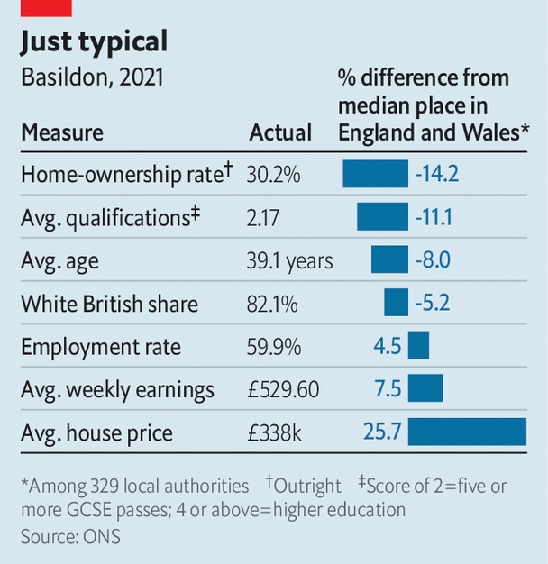image: The Economist
That is partly because it is difficult to see what makes Basildon different from lots of other places. The architecture, a jumble of grey concrete and glass which blends into the autumn sky, is the same as that found in dozens of post-war developments across Britain. The shops are equally familiar. Watching the lunchtime trade at the sprawling branch of Primark, a discount clothing store that dominates the town square, you could be anywhere; only the distinctive Essex twang of the locals gives the game away. But normality is also what makes Basildon special, for it is Britain’s most typical place.
Basildon is one of 28 new towns created by government planners after the second world war (see map). In 1947, just as the first plans for it were being drawn up, the film “Magic Town” was released. James Stewart plays a down-on-his-luck pollster who stumbles upon a community whose demography exactly matches that of America as a whole. Rather than carry out time-consuming national surveys, he undercuts his rivals by sampling opinion there. Basildon, by accident rather than design, is Britain’s magic town.
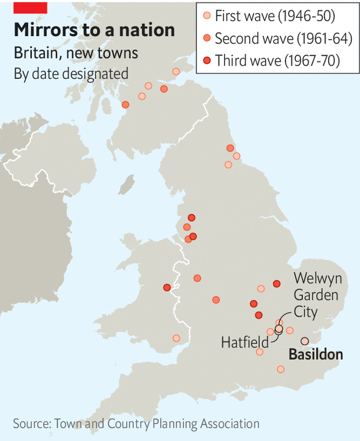image: The Economist
looked at the data for 329 local authorities across England and Wales (Northern Irish and Scottish data were not comparable) across seven metrics: home ownership, house prices, median age, employment levels, average earnings, educational background and ethnic make-up. Each variable for each place was then compared with the median value of all the local authorities (see chart).
By averaging how far, in percentage terms, each local authority was from the median place across all seven categories, Basildon, with an overall distance of just 0.1% from the typical place, came out bang in the middle. Carrying out the same exercise for 2011 marked out Welwyn Hatfield in Hertfordshire, made up of the new towns of Hatfield and Welwyn Garden City, as Britain’s most typical place then.
An alternative methodology, of ranking each location by each variable and then taking the average of the combined rankings, would move Britain’s most typical place 22km to the west and into the east outer London borough of Havering. Regardless of the exact methodology, then, “magic town” is now to be found somewhere around Essex. (We gave Basildon the same weighting as urban areas with many more inhabitants; that makes the typical British place older, whiter and less well-educated than the population as a whole.)
Basildon is no stranger to finding itself cast as a national barometer. Between 1983 and 2010, at which point the parliamentary constituency was merged with its neighbours, the town always voted for the party that won the general election. Political strategists believed that “Basildon Man” was a key demographic cohort, who encapsulated the Conservatives’ capture of the aspirational middle class in the 1980s under Margaret Thatcher and their return to Labour under Tony Blair in the 1990s.
Disappointingly for political sociologists, but typically of most Britons, today’s Basildon men and women do not seem to be following the twists and turns of Westminster politics that closely. Ask locals in the town about politics, and their most likely response is to berate the local council’s move to fortnightly bin collection. Fear of the spread of London’s ultra-low emission zone (ULEZ), a charge on older and more polluting vehicles recently expanded in the capital by its Labour mayor, is another preoccupation.
Economically, the town is representative of the bigger picture. The centre of Basildon has seen better days. Since 2021 the Eastgate shopping centre, home to that Primark, has lost high-profile stores, including Debenhams, H&M, Top Shop and Next. “To let” signs are a common sight around the centre. A report in 2022 found that more than a quarter of the town’s retail sites were vacant, and that 16.2% of them had been empty for over three years.
But high streets are no longer the best indicator of prosperity. The rise of internet shopping and the impact of the pandemic has reshaped how people spend their time and money. A few kilometres to the north, on the edge of town, the Festival Leisure Park was this week doing a booming half-term trade. The sprawling car park was almost full as families ventured to the multiplex cinema, bowling alley, soft-play area and indoor mini-golf course. The highlight for some was the new branch of Five Guys, an American burger chain—“only the second one in all of Essex”, as one mum put it.
Even the prospect of American burgers, or a planned £3m ($3.6m) branch of Wetherspoons, a cheap pub chain, does not seem to be enough to drag new residents to Basildon. Despite its relative proximity to London and the post-pandemic trend of office workers moving further out to get more space, local estate agents say they see little interest from relocating Londoners. “Well-off people want Victorian houses, not the 1950s stuff we have here,” says one. Told that Basildon is Britain’s magic town, he pauses briefly before answering: “Yeah, I don’t think that is a selling-point.” ■
Is the Windsor framework in Northern Ireland working?
The new rules soften the Irish Sea border, but do not make it disappear
Listen to this story.Enjoy more audio and podcasts on iOS or Android.
The Windsor framework was agreed on in February, but its first practical test came at the start of this month. The deal—negotiated by Rishi Sunak, the British prime minister, and Ursula von der Leyen, the European Commission president—set up green and red lanes for goods passing from Great Britain to Northern Ireland. Green lanes are for goods that will stay in the province, and impose only minimal customs checks on trusted traders. Red lanes, for goods that might cross the land border with Ireland (and so enter the EU), involve more rigorous inspections.
The government says the system, which started on October 1st, is working. Supermarket shelves in the province now stock meat products stamped with labels saying “NOT FOR EU”. The port of Larne has set aside land for a new border facility designed to support real-time sharing of trade data with Brussels. After years of bad-tempered confrontation between the EU and the government in Westminster over the Northern Ireland protocol—a part of the Brexit deal that, in effect, drew a border in the Irish Sea—calm has been restored.
But the Windsor framework cannot, as Mr Sunak once said, eliminate “any sense of a border” between the province and Great Britain. Green lanes are good for big retailers and supermarkets that can afford to register as trusted traders. But they are less suitable for smaller firms that are uncertain where their products might end up. Indeed, some now face more controls because grace periods allowed under the protocol have ended. Particularly tricky problems include plants, online sales, veterinary medicines and organic eggs.
Nor has the framework removed the biggest concern for Northern Irish businesses, which is uncertainty. There is still the risk of future regulatory divergence between the EU and Great Britain, which would only make the Irish Sea border thicker. As a report from UK in a Changing Europe, an academic think-tank, notes, little divergence has happened in practice; most British firms do not want it, and Britain has not yet imposed customs checks on imports from the EU. But over time the rules on both sides may change.
The continued existence of the Irish Sea border also explains why Northern Irish politics is still in limbo. The biggest unionist (pro-British) party, the Democratic Unionist Party (DUP), has boycotted the province’s power-sharing executive since February 2022 because it wants all border controls scrapped. Some close to the DUP leader, Sir Jeffrey Donaldson, say he would like a way to back down. The missing executive makes it harder to run fraying public services. It also kiboshes use of the “Stormont brake”, a part of the framework that in theory allows the Northern Irish assembly to object to single-market rule changes.
But there are other reasons for the DUP’s reluctance to end its boycott, not least that it would mean accepting a first minister from Sinn Féin, a party favouring Irish reunification, for the first time. Many analysts think the impasse will last until the next general election, in which Labour is expected to take power. Sir Keir Starmer, the Labour leader, has said he would like to move closer to the EU, starting with a veterinary and food-standards agreement, but negotiations would be very testing.
The Windsor framework has clearly improved relations with the EU. And public opinion in the province is favourable: the latest poll for Queen’s University Belfast found that 56% of respondents agree or strongly agree that the framework is on balance a good thing for Northern Ireland, against 34% who disagree or strongly disagree (though a narrow majority of unionists are against it). But Brexit was always going to be problematic for the province, and for years Northern Ireland has been treated as collateral damage in internecine Tory wars. The framework is up and running. But it cannot unravel every knot. ■
Britain must overhaul the way it approves infrastructure
Electricity pylons will be the next battleground
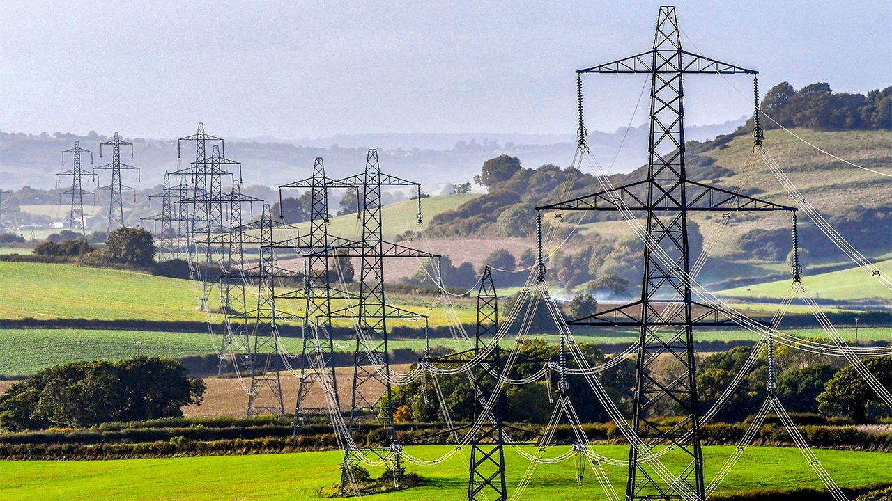
Listen to this story.Enjoy more audio and podcasts on iOS or Android.
“SAY NO!” Blare orange placards along the road out of Marks Tey, a village in Essex. Rosie Pearson, a consultant-turned-campaigner, points to where a planned chain of pylons will cut through a field next to the house she grew up in. Pulling out maps and annotated documents, she recounts skirmishes with National Grid, which wants to build the line to carry wind and nuclear power from East Anglia to London. The real battle will not come until 2025, when a final decision beckons.
Building infrastructure in Britain has become painfully slow. Since the planning system was last reformed in 2012, the time it takes to secure consent for national infrastructure projects has risen by two-thirds, to over four years. That is on top of a “pre-consent” stage that averages two. Power lines should be relatively easy things to put up, but they still take around 13 years from start to finish.
Pylons have always sparked particular controversy. A “permanent disfigurement” was the verdict of John Maynard Keynes, a great economist, when they first appeared on Britain’s skyline in the 1920s (the Electricity Board brushed off its critics as “impractical aesthetes”). “Bestride your hills with pylons, O age without a soul”, wrote John Betjeman during a pylon boom in the 1960s in response to the growing demands of consumer appliances. The poet’s sardonic protest was ignored, too.
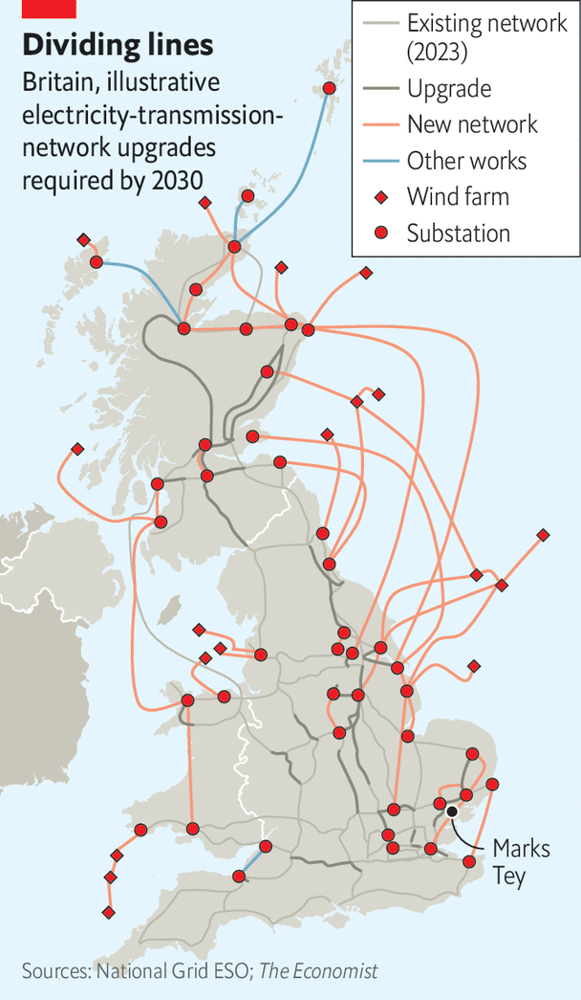image: The Economist
A new age of pylons is now required to meet the country’s net-zero commitments. In the coming decades electricity will not only keep the lights on; it will also be needed for people to drive to work and stay warm. That means the grid must double in capacity, as well as morphing in shape, to draw power from hundreds of wind and solar farms. In the next seven years Britain will need to build four times more grid infrastructure than it has managed in the past 30. The line through Essex is one of 17 marked for urgent completion (see map).
Already, bottlenecks are building up. Wind and solar farms are told to wait more than a decade to feed their power into the grid; around £200bn ($243bn) of such projects sit in the queue. In turn there is too little power where it is needed: housing developments in west London were paused in 2022 because of a lack of capacity.
The government is supposed to set out its approach to infrastructure in a set of national policy statements. The energy one has not been updated since 2011. That gives developers, including National Grid, little sense of how to approach trade-offs—such as how wiggly a route should get to avoid houses or woodlands—and opens the door to judicial reviews. A tangle of agencies have responsibilities; none has a convincing plan for where power lines and substations should go as part of a coherent system, according to a review by Nick Winser, Britain’s electricity-networks commissioner. Ofgem, the regulator, and the arms of National Grid contradict one another.
All of which is ammunition for determined activists like Ms Pearson. Some 14 East Anglia MPs (including two in the cabinet) back her campaign, which also counts on the help of a small army of (semi-)retired lawyers, engineers and accountants. Such outfits can hardly be blamed for poking holes in plans. Yet the result is that much-needed projects are held to ransom, says Jeegar Kakkad of the Tony Blair Institute, a think-tank. Groups of volunteers hold up tens of billions in investment.
In the case of power lines, one alternative is putting the cables underground. That already happens in designated Areas of Outstanding Natural Beauty. But it is five to ten times more expensive, not a cost most want to see appear on their electricity bills. Putting them in the sea, as Ms Pearson suggests, has a high price tag, too.
Developers know that any hold-up adds lots of cost so they spend vast sums consulting and assessing. Yet councils or lawyers can still find faults, particularly when national policies are a muddle. HS2, a half-abandoned high-speed rail scheme, was backed by an Act of Parliament but its developer had to buy off local opposition to each section of track—one reason why the surviving leg of it will cost eight times more than comparable projects in Europe.
Politicians have at last woken up to the problems. The government is working on a plan to speed up power lines. Labour promises to streamline infrastructure consultations by offering communities off-the-peg options. Advisers hope a clearer national policy would reduce the scope for judicial reviews; there is talk of a quick-fire planning bill. In effect, Labour wants to stop local groups from vetoing national projects. (It may also have noticed that the power lines needed are almost all in Tory and Scottish National Party seats.)
Politicians and regulators talk of “community benefits” for those who do their civic duty by hosting infrastructure. But payments can backfire if they are seen as bribes. Essex villagers reacted badly to the idea that their principled opposition to pylons could be bought off with a measly heat pump. Better to make it much harder to block projects and then use compensation to soften the blow for affected locals. Currently, only the farmer whose field a pylon squats in gets paid. Mr Winser proposes a lump sum for everyone close to new lines. Ireland already has such a system of standardised proximity payments. If Labour wants to “get Britain building” and remain in power, that model could spread. ■
Liz Truss and Jeremy Corbyn still haunt British politics
Two former leaders that their parties would rather forget
Listen to this story.Enjoy more audio and podcasts on iOS or Android.
Welcome to the haunted house of Westminster. It is a year since Liz Truss left office, after serving as prime minister for 49 days. Britons are going to keep hearing about her for a lot longer than that. At the Labour Party’s conference this month, few shadow-cabinet ministers missed a jibe at her expense—and, by extension, at that of her successor, Rishi Sunak. The message: that he is weak and she is still running the show. “We all know that he’s just Ken in her Barbie-world,” said Angela Rayner, Labour’s deputy leader.
The compliment is returned. At the Tory party conference, speeches were replete with references to Jeremy Corbyn. Never mind that he quit as Labour’s leader more than three years ago, and that he is barred from running as a Labour MP. The message: that by having loyally served under him, his successor is an untrustworthy shape-shifter. “Rather like Jeremy Corbyn, Keir Starmer truly is a Marxist. Because as Groucho Marx put it, ‘I have principles, but if you don’t like them, well, I have others’,” zinged Mel Stride, the welfare secretary.
Targeting such calamitous predecessors makes sense for both parties, notes Tom Hamilton, a former Labour adviser. Whatever their faults, Mr Sunak and Sir Keir “pass a basic test of looking as if they can more or less do the job”. Sir Keir has higher approval ratings now than Mr Corbyn did at the last election, at -22% to -50% respectively. Mr Sunak’s wilting ratings outstrip Ms Truss’s, at -40% to -70%.
In both cases the attacks contain some fragments of truth. Repudiating Mr Corbyn and his followers has been Sir Keir’s defining project since he became party leader. The shadow cabinet has been remade. So have local Labour branches: votes at conference suggest the proportion run by the “hard left” has fallen from 80% in 2018 to 23% this year, according to Luke Akehurst, a Starmerite member of the party’s governing body. Yet Sir Keir has never given a compelling explanation for why, unlike many colleagues, he served in his predecessor’s shadow cabinet for over three years. The charge of opportunism lingers.
Mr Sunak ran against Ms Truss in the Tory leadership contest in 2022, adhering to the “abacus economics” that she rejected. Although Ms Truss is an unpopular figure among Tory MPs, the prime minister has criticised her disastrous term in office only in mild terms (“some mistakes were made”). The charge of weakness sticks. “When is he going to say ‘Liz Truss can’t stand for the next election?’ That would be bold,” Sir Keir told an interviewer.
The parallels between the two former leaders go well beyond their roles as campaign fodder. Undeterred by their failures at home, both hanker to fix the world. Ms Truss is working on a book entitled “Ten Years to Save the West”. The fact that Labour rejoices with every public appearance won’t silence her as the election approaches. Mr Corbyn’s “Peace & Justice Project”, a sort of campaign group, has similarly vaulting objectives—among them ending conflict and achieving “climate justice”. Quite how is left unsaid. It hosts a conference in London on November 18th; he toys with a run to become the city’s mayor.
Both figures press on something neuralgic in their parties. Ms Truss is a reminder of a double Tory failure: the acute blunder of the mini-budget of September 2022, and the chronic inability to restrain the ballooning tax burden. Shortly before the Treasury’s autumn fiscal statement on November 22nd, Ms Truss’s supporters will lay out a rival tax-cutting manifesto. Mr Sunak can hardly discipline her for preaching lower taxes, since he and the rest of the party agree with that goal in principle.
As for Mr Corbyn, it has been easy to see his leadership victory in 2015 as an aberration. But he did not come from the moon. His vague homilies on peace appealed to Labour members who had grown sceptical of British foreign policy, especially in the Middle East, since the Iraq war of 2003. Before him came Ed Miliband, who had opposed air strikes against the Syrian regime in 2013 in light of “the lessons of Iraq”.
That all seemed like ancient history, until now. Sir Keir has been determined to show Labour’s support for Israel after the attacks by Hamas, and to stamp out a reputation for anti-Semitism that grew during Mr Corbyn’s tenure. But his suggestion, later clarified, that it would be legitimate to cut off water and electricity to Gaza caused a ripple of anger among Labour’s rank and file, Muslims in particular. Mr Corbyn, meanwhile, could be found at the head of large pro-Palestinian demonstrations in London. Neither ghost is fully exorcised. ■
Our model suggests they should not be dismissed as aberrations
Listen to this story.Enjoy more audio and podcasts on iOS or Android.
Political superlatives were being thrown around like confetti on October 20th, after two by-election victories for Labour in safe Tory seats. In Mid Bedfordshire Labour set a new record for overturning the largest absolute majority in a by-election. In Tamworth the party bettered its huge by-election victory in the same town in 1996, just a year before Tony Blair’s landslide general-election win. Is history set to repeat itself?
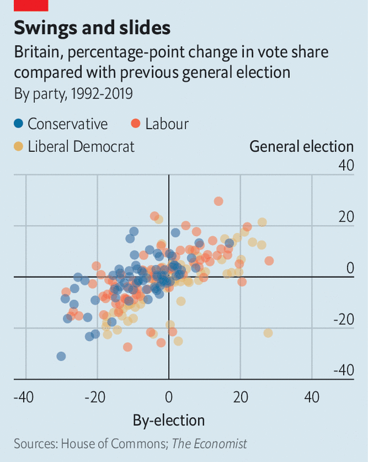image: The Economist
Tory optimists say it is unwise to extrapolate from by-election results. Turnout is poor: among the 110 by-elections since 1992 just 43% of the constituency electorate have shown up, on average, compared with 64% for general elections. Of the two dozen seats gained by a party at by-elections between 1992 and 2019, half were lost at the subsequent general election.
To find out if by-elections do act as bellwethers for future general elections, built a simple model to predict a party’s general-election vote share in a given seat based on its performance in a by-election in that same seat. As a rule of thumb, roughly half of the change in a party’s vote share is carried over from by-elections to general elections (see chart). That suggests the Tories may not be penalised by voters quite so badly in Tamworth and Mid Bedfordshire at the next election; as things stand, they may well regain both seats.
But our model also suggests that it is wrong to discount by-elections. Some parties, most obviously the Liberal Democrats, do outperform in by-elections. But the victories for Labour this month corroborate what the 17-percentage-point gap in the national polls indicates: the party is on course for victory. ■
Listen to this story.Enjoy more audio and podcasts on iOS or Android.
Child x is a polite and articulate teenager, his solicitor told the judge. He is grateful to his carers for looking after him and is settled in their home. The boy understands, the lawyer went on, why the local authority believes he should see his mother once a month rather than more often, as she had requested. But he would like it to be known that he would prefer to live with her, because he misses her.
This was part of the final hearing in a case at the family court in Leeds, where your correspondent spent a day as part of a pilot project giving journalists unprecedented access to a process long shrouded in secrecy. More than eight months previously the boy had been removed from his mother, an alcoholic who had neglected him. He had been waiting to hear where he would spend the rest of his childhood. The judge ruled he would remain with his carers and see his mother once a month.
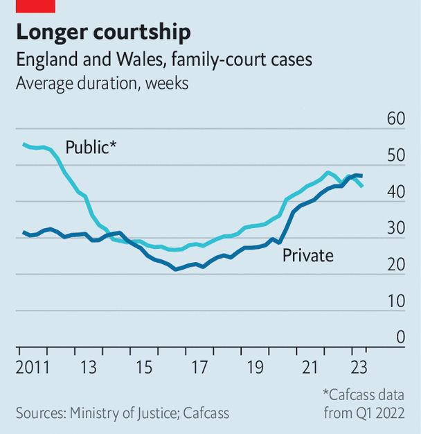image: The Economist
His long wait was shorter than that many children endure. Delays in Britain’s overstretched family courts mean cases take much longer to resolve than they did a few years ago (see chart). The target for the resolution of public-law family cases (those involving children in care) is 26 weeks; they now take an average of 44 weeks. Private cases, which mostly concern parent-child custody and contact arrangements after separation and divorce, now take 47 weeks, more than double what they took seven years ago.
The human cost of these delays is extremely high. Children whose lives are put on hold are more likely to experience mental-health problems and fall behind at school, says Phuong Truong, a lawyer for Coram Children’s Legal Centre, a charity. Delays often worsen quarrels between parents. That makes separations unhappier for children; it also makes it harder for a judge to discern their best interests.
How did things get so bad? The covid-19 pandemic meant many hearings were postponed. That exacerbated deeper financial problems. Between 2010 and 2019 the budget for the Ministry of Justice (MoJ) was reduced by 25% in real terms. The effects are woefully evident, from fewer courts (roughly a third closed between 2010 and 2022) to fewer staff—including judges, on whose know-how the system depends.
Cuts made during the years of austerity appear to have had a particularly bad effect on family courts. In 2013 a new law removed legal aid (means-tested legal representation that had been available in all areas of law) from all private family cases. That meant battling parents started going to court without lawyers; the number of private cases in which neither party has a lawyer has risen by 26% over the past decade. Because judges, rightly, hate to preside over courts in which no one understands what is going on, hearings are often paused while legal points are explained. If the court runs out of time the hearing is rescheduled, often for months later.
There is an exception to the withdrawal of legal aid: it remains available to those who have accused a former partner of domestic abuse with some substantiation. Some solicitors feel this encourages allegations that would not otherwise be made. When it is awarded, legal aid goes to the alleged victim but not the alleged perpetrator. It should go to both, says Jenny Beck of the Access to Justice committee of the Law Society, which represents solicitors.
Better yet, she says, the government should restore legal aid for private family cases. If that is too costly, funding for legal advice in the early stages of a separation would help by preventing some warring parents from going to court at all. Many lawyers attest that at least half of those who take their rows to court would not have done so if they had received advice earlier. Once in court, they rarely retreat.
Avoiding court is worthwhile for another reason. Although children in care are represented by lawyers and social workers who recommend the best course of action, private cases are often fought between parents, with no third parties representing their offspring. “The voice of the child is grossly unrepresented, risking a disproportionate focus on the parents’ needs rather than the children’s welfare,” says Joanne Edwards, a partner at Forsters, a law firm. She and others believe the government should do more to educate people about the costs of going to court when they separate, especially for children.
The government is trying to plug the gap left by the withdrawal of legal aid with mediation, a process in which a trained mediator (often a former lawyer or social worker) helps a couple agree on arrangements for their children and finances. In 2021 it introduced a voucher scheme that gives couples £500 ($608) towards the cost of mediation. The MoJ says about two-thirds of voucher-users reached at least a partial agreement without the courts.
The transparency project is meant to increase public confidence in family courts. Your correspondent was impressed by judges’ expertise and the care taken over complex cases. But unless the system gets more money, and ex-couples fight their battles differently, the delays—and the human costs they entail—will not go away. ■
British politicians have stopped pretending when it comes to class
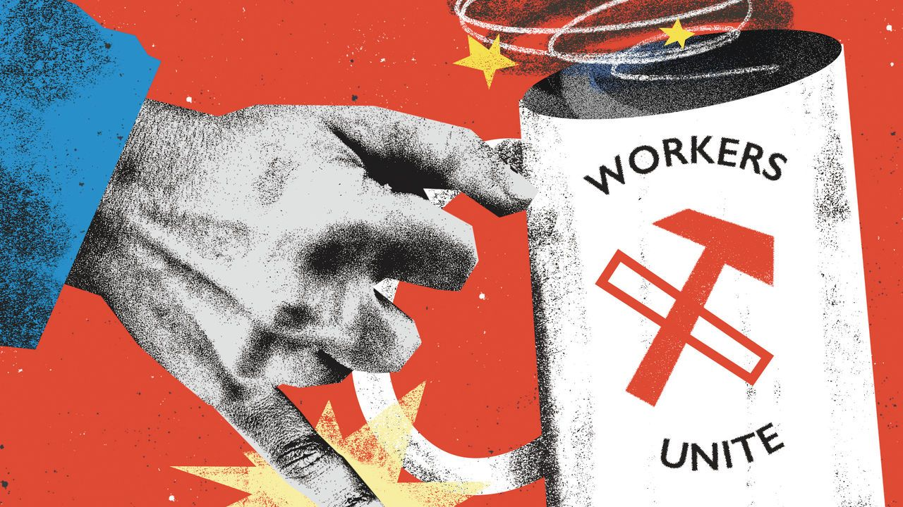
Listen to this story.Enjoy more audio and podcasts on iOS or Android.
For a brief period in the middle of the last decade, the easiest way to flummox a Labour politician was to offer him a cup of coffee and a choice of biscuit. In an interview in 2016 Owen Smith, a former Labour MP, panicked when a waiter brought him a “frothy coffee” in a cup and saucer. “Seriously, I would have a mug normally,” he said, playing up his credentials as a mug-toting, working man and forgetting the word for “cappuccino” in the process.
This was an era when anything slightly middle-class was to be spurned. When Andy Burnham was campaigning to be Labour leader in 2015, he was asked to name his favourite biscuit. He replied: “Give me a beer and chips and gravy any day.” It did not make him sound working-class; it made him sound like an alcoholic. Politicians struggled with their identity. Class dysphoria reigned.
Class was once a source of certainty rather than confusion in British politics. “Class is the basis of British party politics,” wrote Peter Pulzer in 1967. “All else is embellishment and detail.” In this rough-and-ready telling, working-class voters backed Labour and middle-class ones supported the Tories. This changed after 1979, when Margaret Thatcher lured the skilled working classes to her cause, throwing allegiances into flux. Parties have been riddled with class dysphoria ever since, confused whether to portray themselves as soft-handed professionals or doughty sons of toil.
In the 1990s and 2000s, appearing middle-class was the order of the day. Sometimes this meant travelling down the social ladder. When Tony Blair first entered the Labour Party he sounded like an Oxford-educated barrister who had attended Scotland’s poshest boarding school. By 1997 he sounded like an Essex grammar-school boy. When he led the Tories in opposition, David Cameron, an Old Etonian, pledged to send his children to state school. No one admitted to being a member of the working class, who were increasingly portrayed as fecund jobless scroungers in BBC comedies and Channel 4 documentaries. “We’re all middle-class now,” declared John Prescott, Mr Blair’s deputy, who left school at 15 to join the merchant navy.
By the mid-2010s, a sort of inverse aspiration had taken over. “Chavs: The Demonisation of the Working Class”, a book by Owen Jones, a left-wing writer, proved a surprise hit. In Westminster Britain’s working classes were transformed from underclass to noble savages and a source of political wisdom. Boris Johnson, another Old Etonian, painted himself as their whisperer. After the Brexit referendum in 2016 policies were analysed only as to whether they appealed to an imagined working-class voter: generally a Leave-voting man in his 50s with reactionary views. It was this voter, in the eyes of British politicians, who handed the Conservatives a fat majority in the 2019 general election.
Skip forward four years and class dysphoria is, mercifully, on the wane. Partly it is disappearing due to its own absurdities. With a net worth of about £529m ($642m), Rishi Sunak and his family are simply too rich to pretend to be anything else. “You’re stinking rich, right?” asked one interviewer. “I think most people would consider I’m financially fortunate,” replied Mr Sunak. Mr Sunak flies in a helicopter because he is the prime minister of a G7 country and his time is short, stumping up himself when the trips are personal. His negative ratings rival Boris Johnson’s at his nadir, but taking the train will not reduce the strain.
Voters are less resentful about this than politicians have long assumed. Mr Sunak spends £45,000—or a little under half his net salary as prime minister—on sending his two children to prep schools, with little protest from political opponents. At the start of the year he admitted he had used private health care; polls suggested a majority were perfectly fine with that. In contrast, at the height of the banking crisis in 2008, an ill Peter Mandelson, a former cabinet minister, asked Gordon Brown for permission to see a private doctor (“I’m dying”). Mr Brown refused and instead suggested the then health minister, a surgeon, should have a look.
The proverbial Red Wall voter, who delivered Labour heartlands to the Tories in the last election, matters far less than he did. Labour is so far ahead in the polls that the Conservatives have to focus on defence rather offence, ensuring long-held seats in southern England do not fall rather than maintaining the gains of 2019. What placates a 54-year-old man in Sedgefield in the north-east may not appeal to a 38-year-old woman in Surrey. To govern, the Conservatives have to win seats like Sedgefield. To continue to exist, the party must hold Surrey. The latter question is more pressing. A middle-class party has to look after the middle classes.
Class dismissed
Labour, too, no longer has to pretend to be something it is not. The shadow cabinet has a working-class background. In Mr Blair’s government about a third of ministers were educated privately; Harold Wilson’s cabinets boasted a similar proportion. Only four of the current 31-strong shadow cabinet went to private schools. Some in the shadow cabinet have genuinely deprived origins. Angela Rayner, who would be deputy prime minister in a Labour government, grew up on a council estate and was a teenage mother. One grandparent of Wes Streeting, the shadow health secretary, was an East End armed robber, notorious for wearing a grotesque rubber mask he nicknamed “Claude”.
Voters do not seem to have noticed. In focus groups, people assume Sir Keir Starmer’s knighthood was inherited. That may be because the Labour leader’s sincere interest in football sounds confected (when asked what he liked most about the sport, Sir Keir chose “goals”). Or because he talks about growing up in a perfectly normal pebble-dash semi-detached house, when there is nothing weirder than talking about being normal. But given the polls, it may also be that they don’t care. When standards of living are being squeezed and public services are failing, questions of identity fall by the wayside. Never mind how people take their coffee. ■
Read more from Bagehot, our columnist on British politics:
Pity the modern manager—burnt-out, distracted and overloaded
Corporate leadership is more daunting, but also more important, than ever
Listen to this story.Enjoy more audio and podcasts on iOS or Android.
MANAGERS DO NOT make for obvious objects of compassion. It is hard to feel sorry for the bossy office lead, let alone the big-shot chief executive who pockets millions of dollars a year in compensation. Yet their lot deserves scrutiny and even some sympathy. From the corner office to the middle manager’s cubicle, the many demands on their time are intensifying.
A recent survey of workers in 23 countries by Adecco Group, a recruitment and outsourcing firm, found that 68% of the 16,000 managers in the sample suffered burnout in the past 12 months, compared with 60% for non-managers, and up from 43% the year before. “I feel like I jumped on a treadmill where someone controls both the incline and the speed,” says a big-tech executive with a sigh. Plenty of his peers share the sentiment. Managers increasingly require literal stamina: recruiters report that firms often ask candidates for executive positions how much they exercise.
That is a problem not just for the haggard individuals, but also for their employers and, given the boom in management jobs in recent decades, whole economies. Today America has 19m managers, 60% more than in 2000. One in five employees at American companies manages others.
As firms in knowledge industries automate routine tasks and rely on the same digital tools—Amazon Web Services, Gmail, Microsoft office software—it is better management, not investments in technology, that can give them a competitive edge. Poor management can blunt it, by killing productivity and raising staff turnover. According to a Gallup survey from 2015, half of Americans who left a previous job did so because of a bad manager. Last year McKinsey, a consultancy, found that a similar share of job-leavers said they did not feel valued by their managers.
The value of good management, then, is rising. At the same time, the environment in which managers do their job is being transformed. This new landscape rewards some skills more and some less than in the past. As a result, your manager tomorrow will not look the same as your parents’ did.
Until the 2000s, remembers Christoph Schweizer, boss of BCG, a consultancy, “CEOs were superheroes”: larger than life, seldom wrong, never in doubt. For all manner of executive, “the highest compliment was ‘brilliant’,” says Hubert Joly, who ran Best Buy, an electronics retailer, and now teaches at Harvard Business School (HBS).
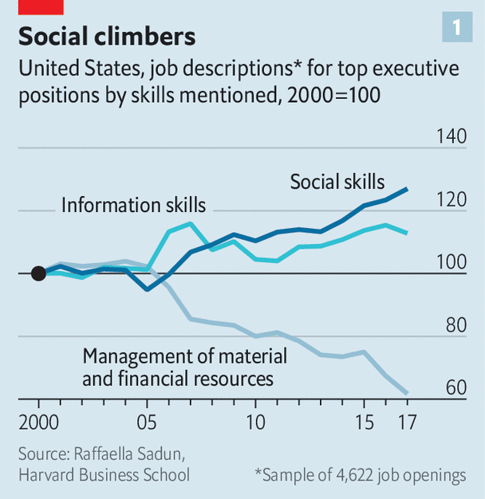image: The Economist
Intellect still matters. A study of Swedish bosses found that the typical head of a large firm was in the top 17% of the population by IQ. But across all layers of management, the emphasis has gradually shifted towards softer social skills, such as clear communication, ability to build trust and willingness to show vulnerability. Executives, including CEOs, need to be comfortable with uncertainty, and happy to delegate even the strategic responsibilities that they would once have hogged, observes Nitin Nohria, a former dean of HBS. (Mr Nohria is also chairman of Exor, which part-owns ’s parent company.)
David Deming of Harvard University has found that the number of jobs that require social interaction is rising faster than average, as are wages for such roles. A study of executive job listings, by Raffaella Sadun of HBS and colleagues, found that between 2000 and 2017 descriptions mentioning social skills rose by nearly 30%. Those singling out an ability to manage financial and material resources declined by 40% (see chart 1). The most common goals requested by firms that employ management coaches for their managers on EZRA, Adecco’s coaching platform, include communication, emotional intelligence, building trust and collaboration. One of the hottest courses at Stanford University’s Graduate School of Business is “Touchy Feely”, which teaches students to assess how they come across to others.
Social skills are increasingly sought-after because they enable better co-ordination of people, goals and resources. And 21st-century business requires more such co-ordination than ever. Managers once used to supervise individuals performing repetitive tasks. Today they often oversee professionals working in teams on complicated projects with outcomes that are hard to measure with precision. The world outside the firm is becoming more complex, too. All this means that, as Mr Deming remarks, “it takes more time to converge on a decision.” A good manager, whose main role boils down to that of co-ordinator, can cut this time. This ability to get disparate people and goals to coalesce smoothly is thus at a premium, especially relative to purely intellectual and technical skills.
One thing making co-ordination harder is an otherwise welcome development—greater workforce diversity. For much of the 20th century in America the manager and the managed were the same white men. “You used to run mini-mes,” says Nicholas Bloom of Stanford University. That, Ms Sadun notes, meant managers could be assumed to possess an implicit “theory of mind” of their underlings—an intuitive understanding of how they thought and felt about the world.
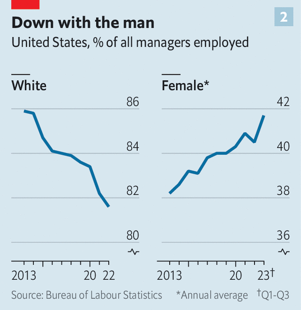image: The Economist
This is, thankfully, no longer a safe assumption. In America, women make up 42% of managers, up from 38.5% in 2010. Between 2013 and 2022 the share of non-whites in managerial posts has risen from 14% to over 18% (see chart 2). Women and non-whites are still underrepresented in such roles, relative to their share of America’s population; non-white employees in particular are likelier than white colleagues to leave a job because they didn’t feel they belonged at their companies. But progress is undeniable. Diversity has, says Mr Nohria, “caught up with us”.
The problem for managers, be they women or men, white or not, is that putting yourself in subordinates’ shoes is no longer automatic. Because you cannot assume you know what others are thinking, you need keen social “antennae”, Mr Nohria observes. Hybrid work, where managers, in Mr Bloom’s words, “adjudicate private lives” via decisions about home-working, makes the task even more delicate.
Like diversity, the post-pandemic spread of remote work brings benefits while raising co-ordination costs. Running a workforce virtually imposes what organisational scholars call “management overhead”. Even when the network connection is not patchy and people don’t forget to unmute themselves, virtual meetings strip out lots of signals, such as eye-contact and gestures. They are more tiring; one study found that people speak more loudly on Zoom than face-to-face.
And they are taking up more and more of managers’ time. A study by Microsoft of 31,000 corporate users of its 365 office software in 31 countries found that in March 2023 the average person participated in three times as many Teams video-conferencing meetings and calls as in February 2020. In roughly the same period the typical user sent 32% more chat messages.
The number of unscheduled calls rose by 8% between 2020 and 2022, to 64% of all Teams meetings. Some 60% of such encounters are now under 15 minutes. Shorter activities probably mean more interruptions, says Ms Sadun. Two in three workers in the Microsoft study complained they did not have enough uninterrupted focus time during the workday. “Work has become more staccato,” sums up Jared Spataro, who oversaw the research at Microsoft. That, Ms Sadun adds, imposes a heavy cognitive cost—and may explain some of the troubling burnout numbers.
Focus is scarcer for executives, too, including CEOs. When Ms Sadun and co-authors looked at how 1,100 bosses in six countries spent their time, they discovered that only a quarter of their working days involved being alone, and some of that was taken up by writing emails. A long-running study of 27 leading chief executives’ time use by Mr Nohria and Michael Porter found that bosses often used long-haul travel to think. The post-pandemic decline in business trips means there is less of this time to recoup. If the composition of executives’ working hours reflects the relative value of the things those hours consume, then co-ordination outweighs pondering strategy.
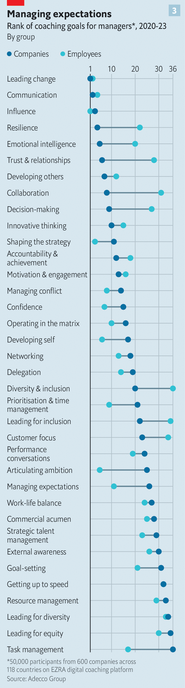image: The Economist
A final thing that may lift the premium for social skills is technology. Ever since ChatGPT, an artificially intelligent chatbot developed by a startup called OpenAI, took the world by storm a year ago, progress in AI has kicked up a notch. Boosters argue that machines can take on some of the tasks that would in the past have required “brilliance”, to echo Mr Joly. The comparative value of the non-artificial intelligence required to perform them may decline. OpenAI’s boss, Sam Altman, went so far as to declare that the cost of intelligence is “going to be on a path towards near-zero”.
It is unclear when—if ever—AI will live up to such bold forecasts. But it is likely to have at least some effect on the practice of management and the competences required for it. Fully 70% of respondents told the Adecco survey that they were already using “generative” AI at work. Mr Spataro of Microsoft (which has a big stake in OpenAI) says that managers are such tools’ most effective users. “They treat it as the newest member of the team, and delegate tasks to it.” And not just routine administrative chores: nearly 80% of people in Microsoft’s study said they would be comfortable using AI for analytical work; three-quarters said the same of creative work.
Managers are not about to become clueless empaths. Many still seek old-school markers of good management. Those on Adecco’s EZRA platform are much likelier than their employers to ask for coaching on strategy, individual development and articulating ambition, and much less likely to pick emotional intelligence, trust-building and collaboration (see chart 3 on previous page). Maybe more popular still than Stanford’s “Touchy Feely” course is “Paths to Power”, in essence a how-to guide for aspiring Machiavellian princes.
These competing priorities may be why so many managers feel overwhelmed. The new model of management, which favours social aptitude and co-ordination skills, is taking hold before the old one, which rewarded expertise and intellect, has loosened its grip. Amid all this managers are, in the words of Denis Machuel, head of Adecco Group, “lost in translation”. The quicker they find themselves, the better: for them and their employers alike. ■
Listen to this story.Enjoy more audio and podcasts on iOS or Android.
If you were asked to imagine a manager, you might well conjure up someone comically boring, desk-bound and monotonal. Now do the same for a leader. You may well be picturing someone delivering a rousing speech. A horse may be involved. You almost certainly have different types in mind. There is indeed a distinction between managers and leaders, but it should not be overdone.
Various attempts have been made to pin down the differences between the two, but they boil down to the same thing. Managers, according to an influential article by Abraham Zaleznik in the in 1977, value order; leaders are tolerant of chaos. A later article in the same publication, by John Kotter, described management as a problem-solving discipline, in which planning and budgeting creates predictability. Leadership, in contrast, is about the embrace of change and inspiring people to brave the unknown. Warren Bennis, an American academic who made leadership studies respectable, reckoned that a manager administers and a leader innovates.
Some of these definitions might be a tad arbitrary but they can be useful nonetheless. Too many firms promote employees into management roles because that is the only way for them to get on in their careers. But some people are much more suited to the ethos of management. They are more focused on process; they like the idea of spreadsheets, orderliness and supporting others to do good work. Shopify, an e-commerce firm, has created separate career paths for managers and developers with these differences in motivation in mind.
The difference between managing and leading is not just a matter of semantics. Research by Oriana Bandiera of the London School of Economics and her co-authors looked at the diaries of 1,114 CEOs in six countries, and categorised their behaviours into two types.
On their definitions, “leaders” have more meetings with other C-suite executives, and more interactions with multiple people inside and outside the company. “Managers” spend more time with employees involved in operational activities and have more one-to-one meetings. Leaders communicate and co-ordinate; managers drill downwards and focus on individuals. The research suggested that firms that are run by leaders perform better than those run by managers.
But pointing to the differences between managers and leaders can also be unhelpful, for two reasons. The first is that being a leader seems so much sexier than being a manager. That is partly because leadership qualities are associated with seniority. As people scale the corporate ladder, they go on leadership courses, join leadership teams and start sentences with phrases like “as a leader”. It is also because the two archetypes are not created equal. Would you rather be the person who likes to do budgeting or the one who holds others in thrall? The type that likes the status quo or the one that wants to change the world? “It takes neither genius nor heroism to be a manager,” wrote Zaleznik. No wonder there are feted programmes for young global leaders but not for young global managers.
The capacity to inspire others and to head into uncharted waters does become more salient the higher you rise. But management skill does not become less important. Dr Bandiera and colleagues concluded that although CEOs who displayed the behaviour of leaders were associated with better company performance overall, different firms may require different types of boss. Some would be better off with “manager” CEOs. And performance is independently correlated with other things, including the quality of management practices.
The second unhelpful by-product of the debate about managers and leaders is that it tends to separate people into one camp or the other. In fact, bosses must combine the qualities of both. Just as it is hard to motivate people if you are highly efficient but have the inspirational qualities of feta cheese, so it is not much use laying out ambitious visions for the future if you don’t have a clue how to make them reality. You need to turn the dial back and forth—from strategy to execution, change to order, passion to process, leader to manager. ■
Read more from Bartleby, our columnist on management and work:
The world wants to regulate AI, but does not quite know how
There is disagreement over what is to be policed, how and by whom
Listen to this story.Enjoy more audio and podcasts on iOS or Android.
The venue will be picturesque: a 19th-century pile north of London that during the second world war was home to Alan Turing, his code-breaking crew and the first programmable digital computer. The attendees will be an elite bunch of 100 world leaders and tech executives. And the question they will strive to answer is epochal: how to ensure that artificial intelligence neither becomes a tool of unchecked malfeasance nor turns against humanity.
The “AI Safety Summit”, which the British government is hosting on November 1st and 2nd at Bletchley Park, appears destined for the history books. And it may indeed one day be seen as the first time global power-brokers sat down to discuss seriously what to do about a technology that may change the world. As Jonathan Black, one of the organisers, observed, in contrast to other big policy debates, such as climate change, “there is a lot of good will” but “we still don’t know what the right answer is.”
Efforts to rein in AI abound. Negotiations in Brussels entered a pivotal stage on October 25th as officials grappled to finalise the European Union’s ambitious AI act by the end of the year. In the days leading up to Britain’s summit or shortly thereafter, the White House is expected to issue an executive order on AI. The G7 club of rich democracies will this autumn start drafting a code of conduct for AI firms. China, for its part, on October 18th unveiled a “Global AI Governance Initiative”.
The momentum stems from an unusual political economy. Incentives to act, and act together, are strong. For starters, AI is truly a global technology. Large language models (LLMs), which power eerily humanlike services such as ChatGPT, travel easily. Some can be run on a laptop. It is of little use to tighten the screws on AI in some countries if they remain loose in others. Voters may be in favour. More than half of Americans “are more concerned than excited” about the use of AI, according to polling by the Pew Research Centre.
The Beijing effect
Regulatory rivalry is adding more urgency. Europe’s AI act is intended in part to cement the bloc’s role as the setter of global digital standards. The White House would love to forestall such a “Brussels effect”. Neither the EU nor America wants to be outdone by China, which has already adopted several AI laws. They were cross with the British government for inviting China to the summit—never mind that without it, any regulatory regime would not be truly global. (China may actually show up, even if its interest is less to protect humanity than the Communist Party.)
Another driver of AI-rulemaking diplomacy is even more surprising: the model-makers themselves. In the past the technology industry mostly opposed regulation. Now giants such as Alphabet and Microsoft, and AI darlings like Anthropic and OpenAI, which created ChatGPT, lobby for it. Companies fret that unbridled competition will push them to act recklessly by releasing models that could easily be abused or start developing minds of their own. That would really land them in hot water.
The will to act is there, in other words. What is not there is “anything approaching consensus as to what the problems are that we need to govern, let alone how it is that we ought to govern them”, says Henry Farrell of Johns Hopkins University. Three debates stand out. What should the world worry about? What should any rules target? And how should they be enforced?
Start with the goals of regulation. These are hard to set because AI is evolving rapidly. Hardly a day passes without a startup coming up with something new. Even the developers of LLMs cannot say for sure what capabilities these will exhibit. This makes it crucial to have tests that can gauge how risky they might be—something that is still more art than science. Without such “evals” (short for evaluations), it will be hard to check whether a model is complying with any rules.
Tech companies may back regulation, but want it to be narrow and target only extreme risks. At a Senate hearing in Washington in July, Dario Amodei, Anthropic’s chief executive, warned that AI models will in a few years be able to provide all the information needed to build bioweapons, enabling “many more actors to carry out large scale biological attacks”. Similar dire forecasts are being made about cyber-weapons. Earlier this month Gary Gensler, chairman of America’s Securities and Exchange Commission, predicted that an AI-engineered financial crisis was “nearly unavoidable” without swift intervention.
Others argue that these speculative risks distract from other threats, such as undermining the democratic process. At an earlier Senate hearing Gary Marcus, a noted AI sceptic, opened his testimony with a snippet of breaking news written by GPT-4, OpenAI’s top model. It convincingly alleged that parts of Congress were “secretly manipulated by extraterrestrial entities”. “We should all be deeply worried,” Mr Marcus argued, “about systems that can fluently confabulate.”
The debate over what exactly to regulate will be no easier to resolve. Tech firms mostly suggest limiting scrutiny to the most powerful “frontier” models. Microsoft, among others, has called for a licensing regime requiring firms to register models that exceed certain performance thresholds. Other proposals include controlling the sale of powerful chips used to train LLMs and mandating that cloud-computing firms inform authorities when customers train frontier models.
Most firms also agree it is models’ applications, rather than the models themselves, that ought to be regulated. Office software? Light touch. Health-care AI? Stringent rules. Facial recognition in public spaces? Probably a no-go. The advantage of such use-based regulation is that existing laws would mostly suffice. The AI developers warn that broader and more intrusive rules would slow down innovation.
Until last year America, Britain and the EU seemed to agree on this risk-based approach. The breathtaking rise of LLMs since the launch of ChatGPT a year ago is giving them second thoughts. The EU is now wondering whether the models themselves need to be overseen, after all. The European Parliament wants model-makers to test LLMs for potential impact on everything from human health to human rights. It insists on getting information about the data on which the models are trained. Canada has a harder-edged “Artificial Intelligence and Data Act” in its parliamentary works. Brazil is discussing something similar. In America, President Joe Biden’s forthcoming executive order is also expected to include some tougher rules. Even Britain may revisit its hands-off approach.
These harder regulations would be a change from non-binding codes of conduct, which have hitherto been the preferred approach. Last summer the White House negotiated a set of “voluntary commitments”, which 15 model-makers have now signed. The firms agreed to have their models internally and externally tested before release and to share information about how they manage AI risks.
Then there is the question of who should do the regulating. America and Britain think existing government agencies can do most of the job. The EU wants to create a new regulatory body. Internationally, a few tech executives now call for the creation of something akin to the Intergovernmental Panel on Climate Change (IPCC), which the UN tasks with keeping abreast of research into global warming and with developing ways to gauge its impact.
Given all these open questions, it comes as no surprise that the organisers of the London summit do not sound that ambitious. It should mainly be thought of as “a conversation”, said Mr Black. Still, the not-so-secret hope is that it will yield a few tangible results, in particular on day two when only 20 or so of the most important corporate and world leaders remain in the room. They could yet endorse the White House’s voluntary commitments and recommend the creation of an IPCC for AI or even globalising Britain’s existing “Frontier AI Taskforce”.
Such an outcome would count as a success for Britain’s government. It would also speed up the more official efforts at global AI governance, such as the G7’s code of conduct. As such, it would be a useful first step. It will not be the last. ■
Another escalation in the Sino-Western economic war
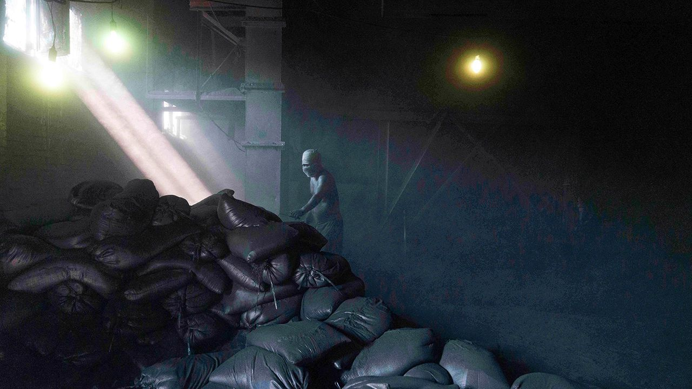
Listen to this story.Enjoy more audio and podcasts on iOS or Android.
THE CHINESE government was caught off-guard in October last year when America hit it with tough export controls on high-powered semiconductors. Communist leaders in Beijing took months to formulate a firm response. Today China appears far more prepared to fight the simmering war over the future of technology. A recent strengthening of those American chip controls by President Joe Biden’s administration was matched just three days later, on October 20th, with new restrictions on exports of Chinese graphite.
America’s latest volley, which restricts the types of chips that can be sold to China, had been anticipated for weeks. Its original controls curtailed sales to Chinese entities of the cutting-edge chips used in the development of artificial intelligence. This included the A100 chip made by Nvidia, a Californian chipmaker. However, the restrictions, known as “foreign direct product rules” (FDPRs), still allowed Chinese companies to buy less powerful integrated circuits. With ingenuity, many such chips could be strung together to produce greater processing power.
A recent home-grown chip that popped up in mobile phones made by Huawei, a Chinese telecoms giant first blacklisted by America in 2019, has fuelled concern in Washington that China was finding ways around the rules. To forestall more Huawei-like surprises, the latest FDPRs target broader performance measures, making it more difficult to combine punier parts into a more powerful whole. Chinese companies can, for example, no longer purchase Nvidia’s less advanced A800 and H800 chips as replacements for the A100s.
This time China did not drag its feet. The ministry of commerce will require exporters of high-grade graphite products to hold licences from December 1st. The grey material may seem dull compared with powerful silicon. But it is commonly used in anodes of lithium-ion batteries. This makes it critical to many countries’ decarbonisation plans. And, because Chinese firms refine about 90% of the world’s graphite, it gives China leverage.
For several years China has been testing out the use of graphite as an economic weapon. Starting in 2020, after a small diplomatic row with Sweden, Chinese companies have been quietly prevented from selling graphite to partners there. Some insiders suspected that the informal ban was aimed at holding back the development of green technologies in Sweden.
The latest restrictions are much broader and more formal than those earlier piecemeal efforts. Unlike an all-out export ban, mandatory export licensing does not completely undermine the domestic graphite industry, which sells a lot abroad. It also allows the authorities to target buyers as it pleases. The tool has become China’s arm of choice in the economic war with America. Similar measures were applied in August to gallium and germanium. China controls 80% of the world’s supply of the two metals, which are used in chipmaking. Gallium, in particular, shows promise in next-generation semiconductors.
Foreign buyers of Chinese products are not the only collateral damage in the escalating economic conflict. On October 19th the Japanese government said that a businessman working for a Japanese firm who was detained in March had been formally arrested on spy charges. Three days later Chinese state media said that Foxconn, a Taiwanese firm that assembles iPhones for Apple, was being investigated for possible tax and land-use violations. Executives at WPP, a British advertising firm, were recently detained too.
The Chinese government appears to be preparing for further escalation. According to Reuters, a news service, state-affiliated researchers have been looking for ways around the types of sanctions imposed by the West on Russia after its invasion of Ukraine. This is said to include building a global network of companies that can dodge sanctions and issuing gold-backed bonds in order to remain connected to the global economy, even if America tries to sever China’s commercial ties to the rest of the world. China’s leaders clearly envision darker days ahead. ■
How Mark Zuckerberg escaped a metaverse-sized hole
His long-term bet still stands, though
Listen to this story.Enjoy more audio and podcasts on iOS or Android.
IT HAS BEEN quite a year for Mark Zuckerberg. The co-founder of Facebook, a social-media Goliath now called Meta, is no stranger to public rebuke. But exactly a year ago even investors appeared to throw in the towel, accusing him of trashing the core business while lavishing money on his pharaonic dreams for the metaverse, a virtual world where he alone appeared to float in a deluded fantasy realm. On the day Meta issued weak third-quarter earnings last year, its share price fell by more than a fifth. Zuck’s name was mud.
In the year since it has been rehabilitated. Meta’s core business—engaging 3.1bn people a day on Facebook, Instagram and WhatsApp, and selling advertisers access to their attention—is back to rude health. On October 25th the company reported revenues of $34.1bn in the third quarter, up by 23% year on year. That was the sharpest rise since the digital boom of the covid-19 pandemic. Net profits more than doubled to $11.6bn. Meta’s share price has risen by 250% since last year’s nadir.
image: The Economist
In the media, Mr Zuckerberg gets little credit for his business nous. There is more focus on other stuff: his recent passion for martial arts; the cage fight with Elon Musk that never happened; public haranguings, such as lawsuits filed by dozens of American states on October 24th, alleging that Meta intentionally sought to make users addicted to Facebook and Instagram. And yet, in the space of a few months late last year, he made two transformative business decisions that were remarkable for their humility and agility—all the more so, given that he controls 58% of the firm’s overall voting rights and barely needs to work, let alone listen to shareholders.
In response to investor pressure, Mr Zuckerberg performed one of the fastest pivots in tech history. Within a fortnight of the third-quarter rout he slashed Meta’s spending plans, cut costs and fired staff. And in response to OpenAI’s ChatGPT and the blaze of excitement around generative artificial intelligence (gen AI for short) he launched an internal revolution aimed at using the technology to galvanise Meta’s core business. Those manoeuvres reveal a lot about Mr Zuckerberg’s leadership style. They may even end up vindicating his faith in the metaverse.
When Mr Zuckerberg realised he had incensed investors, those around him say, he did not panic. He became methodical. As Nick Clegg, a close adviser to Mr Zuckerberg, explains, his boss doesn’t like people around him “shouting and yelling”. He prefers, like an engineer, to break down a problem to its component parts and decide on a course of action. In this case, he understood that his long-term focus was at odds with investors’ short-term horizons. So he decided to “cut his cloth accordingly”. But he kept many of his long-term investment plans intact, emphasising that they mainly concerned AI, not the metaverse. That emphasis looked shrewd weeks later, when ChatGPT burst onto the scene.
Meta had spent years building up its AI infrastructure. Rather than creating chatbots, it was looking for ways to use AI to improve engagement and make its ad business more efficient, as well as working on mixed-reality headsets for the metaverse. Its top brass soon realised they had all the ingredients—enough data centres, graphics processing units (GPUs) and boffins—to make the most of gen AI. By February they had worked out what to focus on. By July they had made their Llama 2 large language model available free of charge to developers. In September they announced the first gen-AI-related gadgets, such as smart spectacles. Mr Zuckerberg, for his part, threw himself into the technical nitty-gritty. His competitive instinct awakened. He appears to have been rejuvenated by working on a new technology rather than on the irksome task of cost-cutting.
Making Llama open-source helped turn Mr Zuckerberg from Silicon Valley’s villain to its hero. Leigh Marie Braswell of Kleiner Perkins, a venture-capital firm, says startups “really applauded” the move, which helped many develop AI-related businesses. And gen AI may be no less transformative for Meta itself than for Microsoft and Alphabet, owner of Google, whose early bets on proprietary large language models have attracted most of the attention.
Start with engagement. Meta is populating its social-media platforms with chatbot avatars which, it hopes, will increase the amount of time people spend on their feeds, and help businesses interact with customers on messaging apps. Some users call them a bit humdrum, probably because the firm is worried about AI’s “hallucinations”. Nonetheless, there is potential. Take Jane Austen, an avatar that emulates the author’s haughty humour. When asked to describe Mr Zuckerberg, she says he is “bright, driven but perhaps a bit too fond of his own ideas”. She describes the metaverse as a “virtual world where people can escape reality and live their best lives. Dear me, how…unromantic.”
More compelling in the near term is AI’s potential for advertising. Since Apple restricted Meta’s ability to track user data across third-party apps on iPhones, Mr Zuckerberg’s firm has had to overhaul its advertising business “down to the studs”, says Eric Seufert, an independent analyst. It has done that fairly effectively, he thinks, by using AI to model user behaviour, rather than tracking the behaviour itself. Last year the company rolled out ad technology called Advantage+, which used AI to automate the creation of ad campaigns. Brent Thill of Jefferies, an investment bank, says that advertisers are impressed. J. Crew Factory, a clothing retailer, has told Meta that the features boosted its return on ad spending almost seven-fold.
Gen AI could take automation further. This month Meta launched tools that let advertisers instantly doodle with different backgrounds and wording. These are baby steps so far, but Andy Wu of Harvard Business School likens them to the start of a gold rush. He says that by creating gen-AI-infused ad campaigns Meta could benefit from the technology as much as Nvidia, the leading maker of GPUs.
Advertisers have their concerns. An ad man at AdWeek NYC, an industry jamboree, described Meta’s AI-assisted campaigns as “black boxes” where it controls all the data. That gives it huge influence over a brand’s identity, which could be tarnished if the AI goes rogue. Others worry about AIs doing untoward things to boost engagements on Meta’s social networks, which could hurt brands by association. Controversies over fake images of the conflict in Gaza on social media illustrate how fraught the terrain remains. Not everyone is convinced by Mr Clegg’s insistence that Meta is prepared for this thanks to years of investment in safety and platform integrity.
Some investors, too, remain sceptical. Mark Mahaney of Evercore ISI, another investment bank, reckons that 95% of them would prefer Mr Zuckerberg to spend less on the metaverse. Many are wary of investments in hardware, such as virtual-reality headsets, which tend to generate lower margins than digital products.
Still, Mr Zuckerberg has “not resiled at all” from his long-term bet, Mr Clegg says. Some VR enthusiasts see AI as the metaverse’s saviour, helping with the development of crucial hand-tracking technologies and making it cheaper for creators to build three-dimensional worlds. Meta’s Smart spectacles, integrated with its chatbot, MetaAI, and built by Ray-Ban, offer a hint of things to come. They capture what the wearer sees, can live-stream it on social media, and answer questions. Asked for sources on critical thinking in business, the AI replied “”. Smart, smarmy or scary? Take your pick. ■
A postcard from the Middle East’s premier business gabfest
Listen to this story.Enjoy more audio and podcasts on iOS or Android.
IN SOME ways, big business pow-wows are all alike. Talking heads make over-the-top predictions. The world’s problems are packaged into bite-sized quotes. Chief executives vie to use as many words as they can to say as little as possible. So too at the seventh Future Investment Initiative in Saudi Arabia’s capital, Riyadh, on October 24th-26th.
Dancers in space-age suits rocked the stage and a young operatic star wowed the audience at the opening session. Large futuristic screens flashed buzzwords —AI, data, sustainability—in an arena fit for e-sports. Corporate and financial bigwigs engaged in a pretend boardroom dialogue at a roundtable in the centre of the conference’s main hall to discuss the state of the world. Drones hovered overhead.
But Davos in the desert, as the event is better known, is singular. Unlike at others, including its European namesake, billions of dollars in deals get signed on the sidelines. It is also even harder to get in. This year, for the first time, the organisers charged a fee of as much as $15,000 per person—steep as talkfests go. That, as one financier put it, filtered for “more high-quality people”.
The mood among this select crowd was unusually tentative. Techno-optimism about artificial intelligence and medical advances was tempered by an acceptance that the energy transition is perhaps not just around the corner. The metamorphosis of Saudi Arabia from a joyless outpost of orthodox Islam into a bustling business hub—”so dramatic”, gushed Jamie Dimon, boss of JPMorgan Chase, America’s biggest bank—stood in contrast to the war raging in Gaza between Israel and the militant Islamists of Hamas. Business leaders worried how quickly the conflict was escalating. They pondered Saudi Arabia’s role in navigating the tensions. It is the regional giant and the hostilities threaten its ambitious economic blueprint, which seemed like it might involve normalising relations with Israel.
Beyond the regional turmoil, inflationary pressures, especially on wages, and huge fiscal deficits in many countries weighed on participants’ minds. Ray Dalio, founder of Bridgewater Associates, the world’s biggest hedge fund, declared that he was pessimistic about the global economy in 2024. The chief executive of Goldman Sachs, David Solomon, pointed to deep uncertainty that has left business bosses feeling on edge.
Another Wall Street stalwart, Jane Fraser of Citigroup, summed it up. “It’s hard not to be a little pessimistic,” she said, noting that global risks were increasingly interconnected and that security was becoming one of the biggest concerns. As Ms Fraser put it, businesses will increasingly need “big ears and thick skin”. Not just to prosper, she might have added, but to survive.■
Lessons from frugal businesses minting money in India
Forget unicorns. To thrive in the subcontinent’s tricky market you are better off with a camel
Listen to this story.Enjoy more audio and podcasts on iOS or Android.
For foreign investors, India is a puzzle. On the plus side, it is a potentially huge market, recently passing China as the world’s most populous. The IMF predicts that India will be the fastest-growing of the world’s 20 biggest economies this year. By 2028 its GDP is expected to be the third-largest, moving past Japan and Germany. The stockmarket is pricing in heady growth. Over the past five years Indian stocks have beaten those elsewhere in the world, including America’s.
The minuses can seem equally formidable. Just 8% of Indian households own a car. Last year the number of individual investors in Indian public markets was a paltry 35m. The smartphone revolution unleashed 850m netizens, but most scroll free apps like WhatsApp (500m users) and YouTube (460m). Blume, a venture-capital (VC) firm, estimates that only 45m Indians are responsible for over half of all online spending. Netflix, the video-streaming giant, which entered India in 2016 and charges Indians less than almost anyone else, has attracted just 6m subscribers.
The tension between tomorrow’s promise and today’s reality is reflected in India’s tech scene. Over the past decade giddy projections of spending by hundreds of millions of consumers led investors to pour money into young tech firms. According to Bain, a consultancy, between 2013 and 2021 total annual VC funding ballooned from $3bn to $38.5bn. Now the easy money is running out. In 2022 startups received $25.7bn. In the first half of this year they got a measly $5.5bn.
Some of India’s brightest tech stars have fallen to earth. The valuation of Byju’s, an ed-tech darling, has plummeted from $22bn to $5.1bn in less than a year. Oyo, an online hotel aggregator, has delayed its public listing even as investors slashed its value by three-quarters, to $2.7bn. Moneycontrol, an online publication, estimates that since 2022 Indian startups have shed more than 30,000 jobs. Investors now worry that companies in their portfolio will never make money. Heavy losses by Indian “unicorns” (unlisted companies worth $1bn or more) bear this out. According to Tracxn, a data firm, of the 83 that have filed financial results for 2022, 63 are in the red, collectively losing over $8bn.
Yet some Indian tech firms manage to prosper. Rather than promise mythical future riches, they are practical and boring, but profitable. Call them camels. Zerodha, a 13-year-old discount brokerage, clocked $830m in revenue and $350m in net profits in 2022. In 2021, the latest year for which data are available, Zoho, a Chennai-based business-software firm founded in the dotcom boom of the late 1990s, made a net $450m on sales of $840m. Info Edge, a collection of online businesses that span hiring, marrying and property-buying, has been largely profitable throughout its 20-year existence. Their success is built on an idea that seems exotic to a generation of Indian founders pampered by indulgent investors: focus on paying customers while keeping a lid on costs.
Consider revenue first. Some founders privately grumble that getting the Indian user to pay for anything is hard. But Nithin Kamath, founder of Zerodha, disagrees. He believes that though the wallet size of Indian consumers is small, they are willing to pay for products that offer value. Zerodha charges 200 rupees (around $2.50) to open a new account when most of its competitors do so for nothing. Mr Kamath believes that even this small amount forces the company to ensure that its users find its platform useful enough to pay that extra fee.
India’s technology dromedaries are also ruthlessly capital-efficient. Zerodha and Zoho have not raised any money from investors. Info Edge was self-funded for five years before raising a small amount, its only outside financing before going public in 2006. Sanjeev Bikhchandani, who founded Info Edge, advises founders to treat each funding round “as if it is your last”.
One way to extend the runway (as VC types call the time before a firm needs fresh funds) is by keeping costs down. Take employee salaries. Richly funded startups throw money at pedigreed developers from top-ranked universities. Zoho enlists graduates of little-known colleges and rigorously trains recruits before bringing them into the fold. The company says that its approach results in a wider talent pool and more loyal employees.
Zerodha, meanwhile, in another contrast to profligate unicorns, does not spend any money on advertising, discounts and other freebies to lure customers. It also uses free open-source alternatives to paid software for its technology infrastructure. The company’s tech-support system for its more than 1,000 employees costs just a few hundred dollars a month to run; an external tool would set it back a few million. Despite being a technology-heavy trading platform, it spends just 2% of revenues on software. Keeping overheads low has the added bonus of allowing companies like it to sell their products profitably at bargain prices, reaching many more customers in the price-sensitive subcontinent.
Reboot, not copy-paste
The slow, measured approach taken by the camels is the opposite of the Silicon Valley playbook of capturing market share first and worrying about profits later. Karthik Reddy of Blume argues that such a model may be better suited for India, where businesses can take many years to find their feet.
One hurdle for companies choosing steady profits over blitzscaling growth remains: the investors themselves. Venture capitalists typically operate on a ten-year clock, bankrolling startups in the first five and cashing out their stakes in the second. This gives investors an incentive to push portfolio firms to pursue growth at all cost. Sridhar Vembu, Zoho’s boss, likens venture capital to steroids—it can boost short-term performance but damage the business in the long run. His may be an extreme view. Still, if investors want big returns on their Indian bets, they are better off backing sturdy camels over sexy unicorns. ■
Read more from Schumpeter, our columnist on global business:
In America and elsewhere the received wisdom has been proved wrong
Listen to this story.Enjoy more audio and podcasts on iOS or Android.
For a long time, health care was eating the world. From 1950 to 2009 American spending on hospitals, medics and the like rose from 5% of gdp to 17%. Between the late 1970s and the mid-2010s British public spending on health rose by 4% a year in real terms, much faster than the economy’s growth of 2% a year. From 1980 to 2010 overall French prices rose by 150%; the price of caring for a sick or old person rose by 250%. Among economists, the proposition “health care’s share of gdp rises” was almost as close to an iron law as “free trade is good” or “rent controls do not work”.
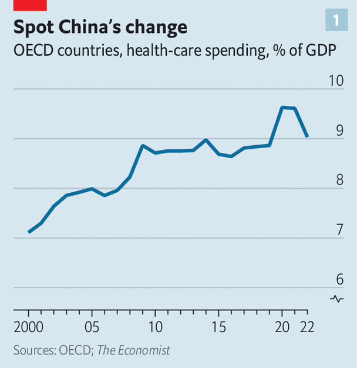image: The Economist
The iron has now melted. Even as populations age, and as the world continues to deal with the fallout from the covid-19 pandemic, health care is no longer taking over the economy. Across the rich world health care’s share of gdp jumped in 2020 and 2021, because of a combination of pandemic-related spending and lower gdp. However, it has since fallen back to close to its level in 2008 (see chart 1). Because of this “flattening of the curve”, health spending today is somewhere in the region of $2trn below its pre-2009 trend.
In some countries the changes are still more dramatic. The ratio of health-care spending to gdp has fallen from its pre-covid peak in Australia and Sweden. In Norway it has tumbled by a remarkable 2.5 percentage points of gdp from its level in 2016. Even in America—the land of costly health care—something has changed. A new measure published by the Bureau of Economic Analysis suggests that the share of spending going on health care has been falling since before the pandemic. A widespread slowdown has never happened before. It has not even come close to happening.
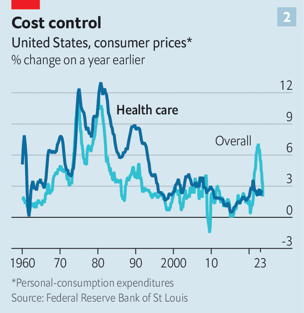image: The Economist
Inflation in the global health-care industry, which once looked Argentine, now looks rather more normal. Consider a broad measure of American health-care prices, which includes not only things purchased directly by consumers but also those paid for on their behalf, such as by insurers. From the 1970s to the 2000s annual inflation almost always exceeded the average (see chart 2). But in around 2010 that relationship flipped—and much the same is true elsewhere. Relative to the “gdp deflator”, an economywide measure of inflation, the deflator in health and social care across the rich world has pretty much stopped rising. In the 1990s Japanese health inflation soared relative to average prices, but has fallen since 2015. In the French health-and-social-care sector, once dreadful at cost control, prices now grow in line with the economywide average.
To understand the significance of this development, consider some earlier warnings. “Put simply,” said President Barack Obama in 2009, “our health-care problem is our deficit problem.” In 2017 Britain’s fiscal watchdog cautioned that “excess cost growth” in health could add an additional 90% of gdp to Britain’s debt by the 2060s. Such statements now look a little outlandish, but few people saw this curve-flattening coming. What prompted it?
Begin with supply-side factors. Falling health-care inflation is consistent with rising health-care productivity. Economists typically think productivity gains in health care are difficult to come by because the service is labour-intensive. It is, for example, unrealistic to expect a phlebotomist to draw a blood sample 3% faster, year after year. Typically this results in “cost disease”, where spending must rise over time in order for the service merely to stand still. After all, even if phlebotomists do not get more efficient, they still expect a pay rise every now and then—without them they may be enticed to other sectors. William Baumol, who identified this phenomenon, worried about health-care spending swallowing up an ever-larger share of gdp.
At the same time, it never seemed plausible that health care was entirely immune to productivity gains. Even for an occasional patient it is blindingly obvious that health systems are ravaged by inefficiencies: paper-based forms instead of digital ones; hours spent filing insurance claims; different parts of the system not talking to one another. Meanwhile, some systems do seem to have improved. According to America’s Bureau of Labour Statistics, labour productivity in health care and social assistance fell by 13% between 1990 and 2000, but then made up all the lost ground from 2000 to 2019. In Britain, a study found that staff in the National Health Service (nhs) provided 17% more care pound for pound in 2016 than they did in 2004, compared with productivity growth of 7% in the economy as a whole. All this may have helped keep cost growth under control.
Another supply-side factor—technological change—may also play a role. Over the long sweep of history, innovations have tended to raise health-care spending. This is in part because they often make therapies available for conditions that were previously impossible to treat. In the 1960s, for instance, the advent of dialysis machines was quite literally a life-saver for people suffering from kidney failure. And yet in the rich world the current cost of a year of dialysis for a patient is somewhere between $40,000 and $60,000, close to these countries’ per-person gdp.
The nature of technological innovation in health care may now be changing. One possibility is that there has been a generalised slowdown in treatments that represent medical breakthroughs and are costly, such as dialysis. But this is difficult to square with a fairly healthy pipeline of drugs coming to market. Another possibility, which is perhaps more plausible, is that the type of advancements has changed, involving a shift from whizzy curative treatments to less glamorous preventive ones. There is decent evidence that the increased use of aspirin, a very low-cost preventative treatment, in the 1990s has cut American spending on the treatment of cardiovascular diseases today.
A pill for the bill
Demand-side factors may also be keeping health-care spending in check. In America the Affordable Care Act (aca)—which was introduced in 2010, at about the time costs tailed off—tightened up the ways in which the government reimburses companies that provide treatment. The aca also made it more difficult for doctors to prescribe unnecessary treatments (seven expensive scans, perhaps, instead of one cheap one) in order to make more money.
There are similar trends elsewhere. Following the global financial crisis of 2007-09, many cash-strapped European governments decided to reduce spending. This included limiting staff pay rises. The average basic earnings of British nurses are at least 10% lower in real terms than in 2010. Other governments have reduced spending by cutting services, sometimes to the bone. Take Greece, where the ratio of health spending to gdp is the same as it was in 2005. A paper published by the imf noted that, even before covid, the country’s health care was struggling, with “widening inequalities and large unmet needs, especially among the poor”.
Other governments have saved money by replacing brand-name pharmaceutical offerings with generic equivalents. In the median European country for which there are data, generics take up 50% of the market by volume, up from 33% in 2010. After a patent on adalimumab, which is often known as “Humira” and is used to treat rheumatoid arthritis and other conditions, expired in 2018, the nhs saved around £150m ($200m) a year by bulk-buying non-brand versions of the drug.
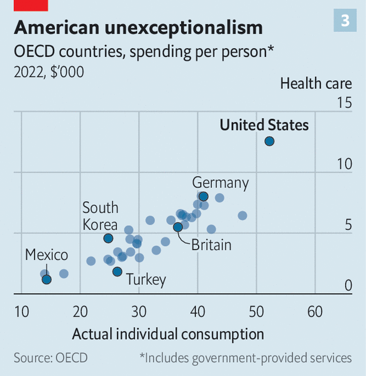image: The Economist
Another demand-side factor relates to overall economic growth. Health care is a “superior good”. When people get a dollar richer, they want more than a dollar more in health care—maybe demanding, say, mental-health care in addition to more traditional life-saving treatments. Across countries there is a strikingly strong relationship between prosperity and spending on health, even in places where the government provides the bulk of the health care (see chart 3). Americans spend so much on health because they are so much richer than almost everyone else.
These days growth in income per person across the rich world is far slower than it was before 2008. According to our estimates, this explains 40-60% of the curve flattening. This part of the story is therefore a pyrrhic victory: health spending is not growing in part because the world has stopped getting much richer.
How long will the curve stay flat? Spending is being pulled in different directions. An ageing population will continue to push up demand. In some countries the pandemic appears to have dealt a blow to health-care productivity, which may not yet have shown up in the data. On the other hand, America’s Inflation Reduction Act allows Medicare to use its purchasing power to bludgeon pharma companies into lowering prices. And economic growth remains weak. What is clear for now, though, is that the received wisdom is wrong. Health care need not eat the world. ■
America would struggle to break Iran’s oil-smuggling complex
After years of sanctions, it has become a sophisticated operation
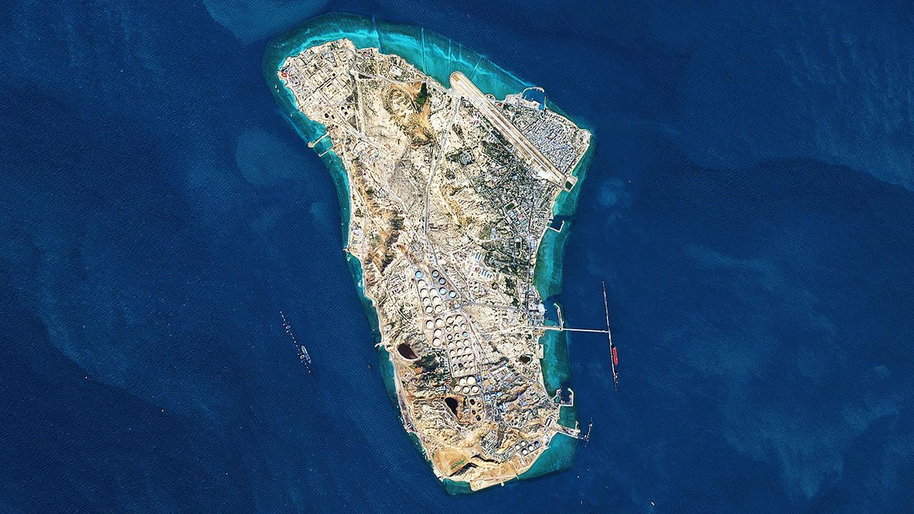
Listen to this story.Enjoy more audio and podcasts on iOS or Android.
In february dilro, an obscure company based in Dubai, bought the , an 18-year-old tanker. Since then the Panamanian-flagged vessel has been given a new name, , and a new job. In April the ship delivered its first load of Iranian oil to the port of Dongjiakou in northern China. After completing a similar trip in September, it now lingers off Malaysia, where it may pick up yet another Iranian cargo. The ship is one of many to have recently joined the “dark fleet” tasked with moving Iranian oil, exports of which have surged from 380,000 barrels per day (b/d) in 2020 to 1.4m now (see chart).
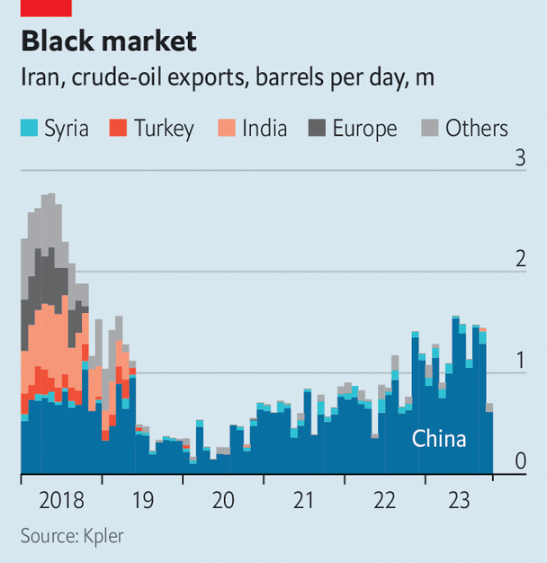image: The Economist
Although America retains harsh sanctions that target anyone helping to produce, ship or sell Iran’s petroleum, the superpower’s officials last year eased enforcement. They were hoping to clinch an accord on Iran’s nuclear programme—and, probably, to suppress prices in the run-up to America’s presidential election. The number of people and firms added to Iran-related blacklists by ofac, America’s enforcement agency, has dwindled.
Yet following Hamas’s attack on Israel on October 7th, the Biden administration has come under pressure to shut loopholes, as Iran is Hamas’s sponsor and oil proceeds fill the country’s coffers. So far traders are unfazed: oil sells at $90 a barrel, down from $97 in September. But could a sanction snapback inflame markets?
Iran’s smuggling network has become sleeker and more sophisticated since President Donald Trump put in place fresh sanctions in late 2018. The country’s petroleum business is run by the National Iran Oil Company (nioc), a state monopoly. Its main customer is China—not the country’s large, state-owned firms, which are exposed to Western sanctions, but “teapot refineries” that snap up 95% of Iranian supplies. A glut in refining capacity is pushing these outfits to seek the cheapest crude available. Iran’s trades at a $10-12 discount to the global benchmark, against $5 for Russia’s as delivered to Chinese ports. The teapots make transactions in Chinese currency, rather than American dollars, which insulates them from sanctions.
Old tankers, acquired by little-known middlemen, link the ends of the chain. Most would have gone to scrap because blue-chip charterers do not want them. Of the 102 extra-large tankers that have ferried Iranian oil in 2023, 42 did not do so last year and 27 have no history of ever carrying dodgy oil, according to Kpler, a ship-tracking firm. Often they do only a few voyages a year, for just a few years. But those who buy them see a return fast, because clandestine shipping commands extortionate rates.
Ownership is disguised through shell companies registered in places such as China, Vietnam and the United Arab Emirates (uae). Most of those fingered by America’s Treasury department have Chinese names, suggesting beneficiaries are from the mainland. Some Chinese lenders also appear on its lists, but most are “sacrificial lambs” that exist only to import Iranian oil, says Adam Smith of Gibson Dunn, a law firm. Iran’s government offers insurance.
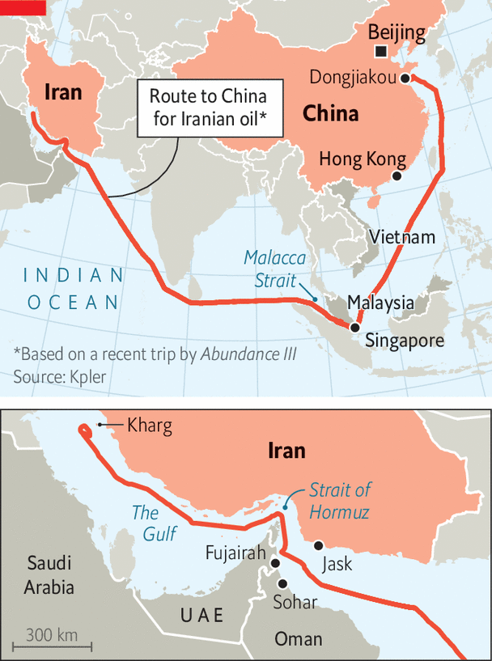image: The Economist
Iranian barrels often begin their journey at Kharg Island, north of the Strait of Hormuz (pictured). A small but growing number start in Jask, a new port south of the strait. This may become a preferred route, circumventing the crowded Hormuz choke point. Transponders are only turned on when ships go through narrow passages, says Homayoun Falakshahi of Kpler, and tankers rarely do the full journey. Some pick up fuel from other ships off the shores of Fujairah, a mega-terminal in the uae, through which a lot of disreputable petroleum, notably Russian, also passes. Many then transfer loads off the shores of Malaysia or Singapore, where smaller vessels take them to northern China—often after being mixed with other crudes from places like Venezuela or mislabelled as a different petrochemical product. There the oil is stored before being transported to its final destination, most often in the coastal province of Shandong (see map).
Many American lawmakers would like their administration to disrupt the trade. New sanctions are unlikely—existing ones are already comprehensive—but officials could strengthen enforcement. Would that sink the dark fleet and its enablers?
A number of challenges exist. nioc has no dealings with America or in dollars, so is resistant to pressure. Meanwhile, only China’s government can hit the teapots, and why would it bother? America would have to squeeze the middlemen. But with so many sanction programmes currently in place—they also target Russia and Venezuela—its capacity is stretched thin. Facilitators are harder to target than under President Trump, when India, South Korea and other countries sensitive to American pressure took part in the trade.
Recent history suggests that companies bashed by America for flouting sanctions rapidly stop doing business, but that others emerge to fill the void. These operators would be all the less deterred given that Iran is blacklisted only by America (in contrast to Russia, whose oil all g7 members have embargoed). The Biden administration could always escalate by seizing Iranian ships en masse at sea, but that would demand huge resources, cause legal headaches and invite retaliation.
Any disruption would thus probably only last for three months or so. Simulations by Rystad Energy, a consultancy, suggest there would be an initial drop of 300,000 b/d in Iranian exports. This loss—equivalent to 0.3% of global demand—could push up global oil prices by $4-5.
A more extreme scenario, where rising tensions also mean that shipping is partly disrupted around Hormuz, say, and Gulf states crack down on Iranian helpers, would see another 400,000 b/d of Iranian crude vanish from the market. That would cause a bigger spike in the oil price, of perhaps 10%. But only for a moment.
That is because Iran’s neighbours could ramp up production. The biggest members of opec, an oil-producing cartel, have 5.5m b/d of spare capacity. In theory, Saudi Arabia could plug the Iranian deficit without help. And opec would have a strong incentive to intervene: stratospheric oil prices would quickly destroy demand.
As a result, it would take an extraordinary series of events for oil to spend much time in the triple digits. America wants to show toughness towards sanction-evaders. This month, for the first time, it singled out two tanker owners for violating Russian restrictions. It is also relaxing sanctions on Venezuela, perhaps in anticipation of a drop in Iranian exports. Yet all this activity belies a simple fact: Iran’s supply chains are supple enough to be largely immune to American measures. ■
Investors are returning to hedge funds. That may be unwise
Look beyond the current turbulence
Listen to this story.Enjoy more audio and podcasts on iOS or Android.
Superheroes are useless when times are good. If Gotham was a safe and pleasant place, Batman would probably just spend his days relaxing in a mansion upstate. Superman only ducks into a phone booth to reveal his blue-and-red lycra when the bad guys are holding someone up at gunpoint.
For the best part of a decade, financial markets were mostly serene. The s&p 500 index, the leading measure of American stocks, climbed steadily higher from 2010 to 2020. With expected interest rates edging lower and lower, bond prices also floated mostly up. Investors worried about missing out on the bull market of a lifetime, not about whatever risks lay around the corner. The circumstances were thus abysmal for institutions that aim to be useful in turbulent times, such as hedge funds. They often seek returns that are uncorrelated with the broader stockmarket, in order to ease the blow an investor’s portfolio might take when markets fall. In volatile markets, a superhero manager—call him hedge-man—is supposed to swoop in and protect investors from losses.
Hedge funds were a difficult sell for much of the 2010s. Investors stuck with them for the first half of the decade. But as returns continued to lag those of the stockmarket, net asset growth (a measure of whether investors are pulling money from or putting money into funds, stripping out the impact of investment returns) turned negative. In the second half of the decade, hedge funds bled money and hedge-man hung up his cape. In almost every year since 2015 more funds closed than opened.
After a torrid decade, things are now looking better for hedge-man. Money has, on net, flowed into funds in every quarter this year. If business continues at the same pace, 2023 will be the best year for hedge funds since 2015. The total sum invested in funds is now more than $4trn, up from $3.3trn at the end of 2019. And this year more funds have opened than closed.
What to make of hedge-man’s return? Maybe investors are heavily influenced by recent events. Last year hedge funds beat the market. The Barclays Hedge Fund Index, which measures returns across the industry, net of fees, lost a mere 8%, while the s&p 500 lost a more uncomfortable 18%. Yet hedge funds have in aggregate heavily underperformed American equity indices in all other years since 2009, returning an average of just 5% a year across the period, against a 13% gain for the broader market. In 2008 Warren Buffett, a famous investor, bet a hedge-fund manager $1m that money invested in an index fund would outperform that in a hedge fund of his choosing over the next decade. Mr Buffett won comfortably.
The renewed enthusiasm for hedge funds might also suggest a deeper disquiet: perhaps people have become convinced the easy returns of the 2010s are now well and truly a thing of the past. Most investment portfolios have been buffeted by the end of easy monetary policy. As Freddie Parker, who allocates money to hedge funds for clients of Goldman Sachs, a bank, has noted, the performance of hedge funds tends to look healthier during periods of rising rates, as these are generally accompanied by a “more challenging environment” for asset returns. Hedge-fund performance has also been stronger during periods in which interest rates were high or volatile, such as the 1980s and mid-2000s.
Of course, high interest rates do not necessarily mean the good old days are back for hedge-man. Today’s markets are higher-tech and lightning quick. Information spreads across the world just about instantaneously and is immediately incorporated into prices by high-frequency trading algorithms. By contrast, in the 1980s it was still possible to gain an edge on your rivals by reading the newspaper on the way into the office. Even though many hedge funds shut their doors in the 2010s, there are still far more around than there were in the 1980s or 1990s. Competition—for traders and for trades—is much stiffer than it was.
It is understandable that, when faced with a world in which interest rates are high and volatile, investors seek the return of those who might spare them from peril. But consider how Mr Buffett’s bet played out. In 2008, a woeful year for stocks, his index was handily beaten by hedge funds. It was the outperformance over the following nine years that won him the wager. “It is always darkest before the dawn,” says Harvey Dent, a rival to Batman, in one of the films, “and, I promise you, the dawn is coming.” When it arrives, investors may wish they had stuck with their index funds.■
Read more from Buttonwood, our columnist on financial markets:
Xi Jinping steps up his attempt to rescue China’s economy
The president unleashes stimulus, appoints a finance minister and visits the central bank
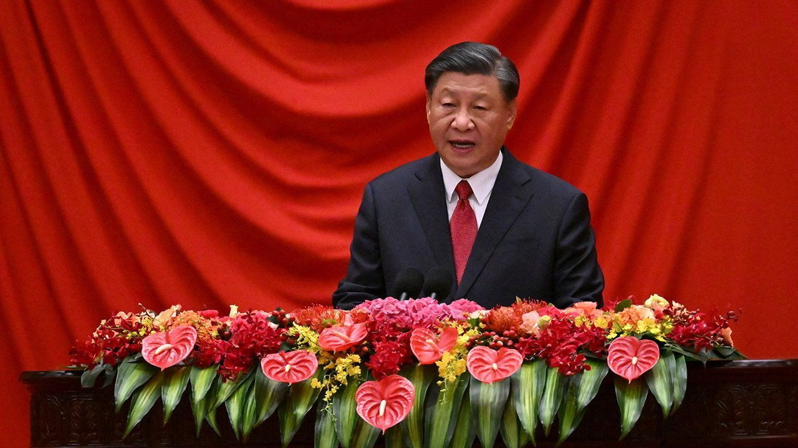
Listen to this story.Enjoy more audio and podcasts on iOS or Android.
When China reported faster-than-expected economic growth for the third quarter of this year, some analysts felt a twinge of concern. They worried that China’s rulers might now rest on their laurels. Rather than pressing on with efforts to revive demand, policymakers might instead wait and see if they had already done enough. The growth target for this year is, after all, only 5%. And the central government likes to keep its fiscal powder dry.
This fear was allayed on October 24th when officials approved the sale of an extra 1trn-yuan ($137bn) of central-government bonds. The sale will force the central government to revise its official deficit for the year from 3% of gdp to a hefty 3.8%. As a consequence, the headline deficit in China’s year of reopening will be bigger than it was in 2020, the year of its first lockdowns.
The money will be spent on helping local governments cope with natural disasters, such as recent floods. It will help relieve the strain felt by many cities and provinces. Revenues from land sales have been hit by a property slump. Off-balance-sheet debt has become harder to service, owing to a weak economy and wary investors. This year’s quota of “special” infrastructure bonds has been nearly exhausted. Help was therefore required to prevent sharp cuts in local-government outlays.
But even analysts who had expected stimulus of this size were surprised. Officials could have lifted the economy by pulling less conspicuous levers. They could, for example, have allowed local governments to issue more bonds or instructed state-directed “policy banks” to expand lending. By putting the 1trn yuan on its tab, Beijing signalled its support for growth. It was a statement as well as a stimulus.
The bond sale will occur under a new finance minister, Lan Fo’an, whose job was confirmed the same day. Mr Lan has served as governor of coal-rich Shanxi, but spent more time in Guangdong, a coastal powerhouse. His step up was, though, overshadowed by news that Xi Jinping had paid his first known visit to China’s central bank.
What prompted the visit? It may indicate that the country’s president is paying close attention to the economy at a busy time in the policymaking calendar. Officials will soon gather for a twice-a-decade conference on China’s financial system; another, annual meeting in December will help set economic policy for next year.
Mr Xi may have also wished to raise the stature of the central bank, which has recently lost some of its staff, regional branches and regulatory powers, even as it has been thrust into prominence by China’s economic struggles. It is fighting a two-front battle to prevent deflation by lowering borrowing costs, while at the same time trying to stop China’s currency, the yuan, falling too quickly against the dollar.
In most countries, a president’s visit to the central bank would not excite much comment or interest. Certainly, it would not overshadow the arrival of a new finance minister. But in China, the finance minister has little clout and the president has plenty. Not much the finance minister does compels attention. Nothing the president does escapes it. ■
America and the EU demonstrate protectionism’s ratchet effect
Negotiations over metal tariffs are going nowhere
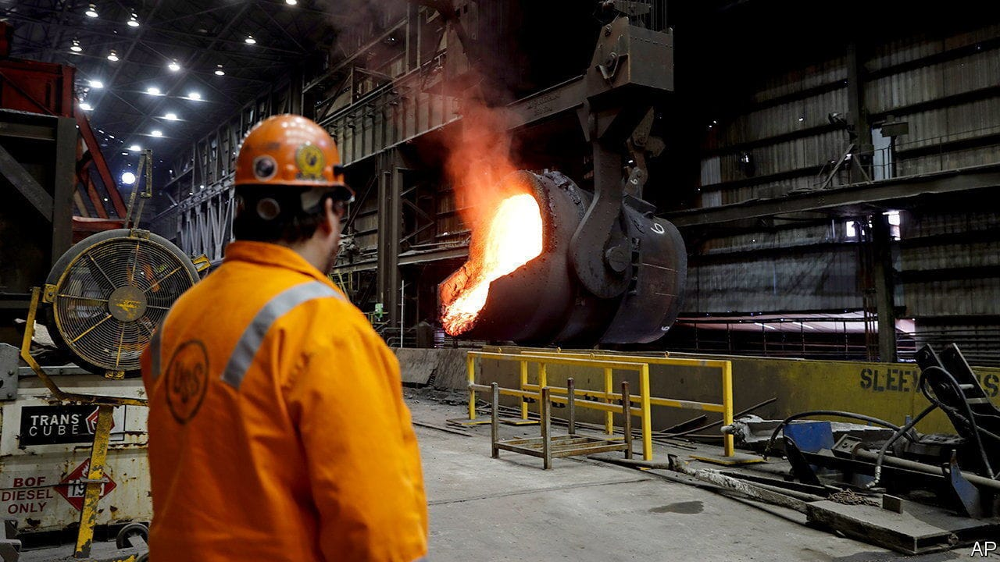
Listen to this story.Enjoy more audio and podcasts on iOS or Android.
As america unleashes a barrage of new protectionist measures under President Joe Biden, it continues to be dogged by past efforts—not least the tariffs on aluminium and steel that President Donald Trump thought necessary. These “section 232” levies, named after the trade act under which they were introduced, are scheduled to return to their original scope at the start of 2024, when a deal agreed by Mr Biden and the eu is due to run out.
The deal allows the vast majority of eu exports to America to continue as before the tariffs. It was intended to give the two sides time to weld a comprehensive pact called the “Global Arrangement on Sustainable Steel and Aluminium” (gsa). This would, negotiators hoped, reduce excess capacity in steel markets and set out a joint way to decarbonise without crushing domestic producers. “These negotiations should be on the simpler end of the spectrum. They are only about two products, and America and the eu have a very similar profile in these industries,” says Todd Tucker of the Roosevelt Institute, a think-tank. But at a summit on October 20th the eu’s top brass and Mr Biden admitted that they needed more time to negotiate.
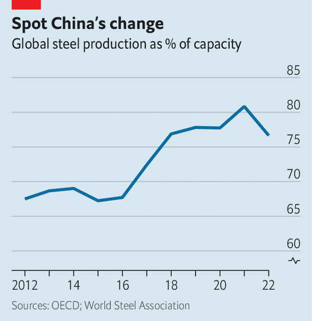image: The Economist
It is not clear whether such an agreement will ever be struck, or whether, when it comes to excess capacity, it is even needed. Paul Butterworth of cru, a consultancy, notes that data from the oecd club of mostly rich countries shows that steel mills around the world are being used at the highest levels since 2000. In part, this is because China restructured its steel industry in 2017, killing unlicensed producers (see chart). Still, America and the eu have put in place an arsenal of measures to protect domestic markets from state-sponsored imports. Steel shipments from China to the eu have halved since 2015-16, and play hardly any role in America. Despite the harm such measures do, neither side wants to get rid of them altogether. European negotiators argue current policies are sufficient to resolve excess capacity, and are unwilling to commit to additional tariffs. American ones want more barriers.
An agreement on carbon levies is an even more difficult task. The eu’s plan to tackle climate change is based upon a carbon price that applies to aviation, electricity generation and industry, and will soon cover more of the economy. The natural complement, its officials argue, is a tariff on the carbon content of imported steel and other high-energy goods in line with the eu carbon price. This is being introduced and the only exception will be for places that levy their own carbon prices—something most of America does not, and never will, do. It uses regulation and subsidies to push industry to be greener. Reconciling these two approaches into a common trade policy is a nightmarish task.
The American proposal is for a club that levies a common carbon tariff on aluminium and steel, with higher tariffs for non-members. For its part, the eu would prefer a completely different sort of club, based on legally binding targets for decarbonisation and state-aid restrictions. Members of the club would be free to impose carbon tariffs, but only in line with the World Trade Organisation’s rules, which the eu believes would permit its border adjustment.
In theory, then, both sides still want a gsa. Reality may be different. “The eu will now resort to what it knows best: damage control by continuing to negotiate and kicking the can down the road,” says David Kleimann of Bruegel, another think-tank. The result will probably be an extension of the current fix, and no agreement. ■
The world economy is witnessing a $600bn-a-year shift in behaviour
Listen to this story.Enjoy more audio and podcasts on iOS or Android.
In some ways covid-19 was a blip. After soaring in 2020, unemployment across the rich world quickly dropped to pre-pandemic lows. Countries re-attained their pre-covid gdp in short order. And yet, more than two years after lockdowns were lifted, at least one change is enduring: consumer habits across the rich world have shifted decisively, and perhaps permanently. Welcome to the age of the hermit.
Before covid, the share of consumer spending devoted to services was rising steadily. As societies became richer, they sought more luxury experiences, health care and financial planning. Then in 2020 spending on services, from hotel stays to hair cuts, collapsed. With people spending more time at home, demand for goods jumped, with a rush for computer equipment and exercise bikes.
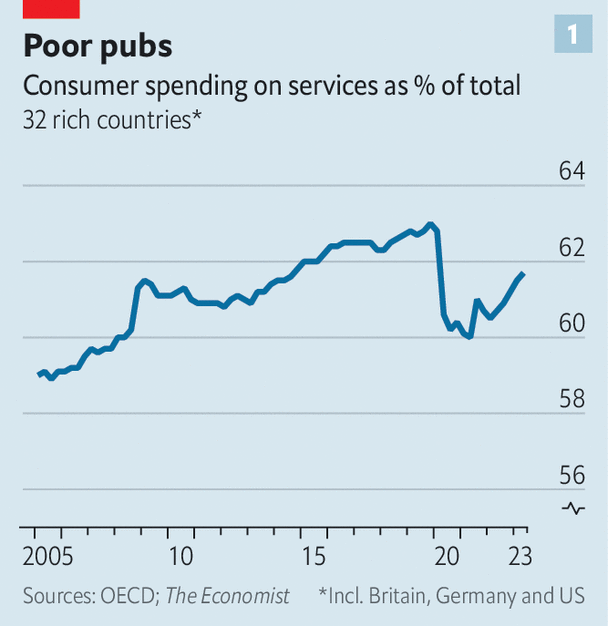image: The Economist
Three years on, the share of spending devoted to services remains below its pre-covid level (see chart 1). Relative to its pre-covid trend, the decline is sharper still. Rich-world consumers are spending around $600bn a year less on services than you might have expected in 2019. In particular, people are less interested in leisure activities that take place outside the home, including hospitality and recreation. Money is being redirected to goods, ranging from durables like chairs and fridges, to things such as clothes, food and wine.
In countries that spent less time in lockdown, hermit habits have not become ingrained. Elsewhere, though, the behaviour looks pathological. In the Czech Republic, which was whacked by covid, the services share is three percentage points below trend. America is not far off. Japan has witnessed a 50% decline in restaurant bookings for client entertainment and other business purposes. Pity the drunken salaryman staggering round Tokyo’s pleasure districts: he is an endangered species.
At first glance, the figures are difficult to reconcile with the anecdotes. Isn’t it harder than ever to get a table at a restaurant? Yet the true source of the crowding is not sky-high demand, but constrained supply. These days fewer people want to work in hospitality—in America employment in the industry remains lower than in 2019. And pandemic disruption means many new hotels and restaurants that would have opened in 2020 and 2021 never did. The number of hotels in Britain, at around 10,000, has not grown since 2019.
image: The Economist
Firms are noticing the $600bn shift. In a recent earnings call an executive at Darden Restaurants, which runs one of America’s finest restaurant chains, Olive Garden, noted that, relative to pre-covid times, “we’re probably in that 80% range in terms of traffic”. At Home Depot, which sells tools to improve homes, revenue is up by about 15% on 2019 in real terms. Goldman Sachs, a bank, tracks the share prices of companies that benefit when people stay at home (such as e-commerce firms) and those that thrive when people are out (such as airlines). Even today, the market looks favourably upon firms that serve stay-at-homers (see chart 2).
Why has hermit behaviour endured? The first possible reason is that some tremulous folk remain afraid of infection, whether by covid or something else. In Britain, car use is in line with the pre-covid norm, whereas public-transport use is well down. People also seem less keen on up-close-and-personal services. In America spending on hairdressing and personal grooming is 20% below its pre-covid trend, while spending on cosmetics, perfumes and nail preparations is up by a quarter.
The second reason relates to work patterns. Across the rich world people now work about one day a week at home, according to Cevat Giray Aksoy of King’s College London and colleagues. This cuts demand for services bought at the office, including lunches, and raises demand for do-it-yourself goods. Last year Italians spent 34% more on glassware, tableware and household utensils than in 2019.
The third relates to values. Covid may have made people genuinely more hermit-like. According to official data from America, last year people slept 11 minutes more a day than in 2019. They also spent less on clubs that require membership and other social activities, and more on solitary pursuits, such as gardening and pets. Meanwhile, global online searches for “Patience”, a card game otherwise known as Solitaire, are running at about twice their pre-pandemic level. Covid’s biggest legacy, it seems, has been to pull people apart. ■
Israel’s war economy is working—for the time being
The longer the conflict lasts, the greater the pressure
Listen to this story.Enjoy more audio and podcasts on iOS or Android.
Less than three weeks since Hamas plunged Israel into war, conflict is taking a toll on the country’s economy. The shekel has sunk to its lowest level against the dollar in more than a decade, prompting Israel’s central bank to sell $30bn of foreign-exchange reserves to prop up the currency. The price of insuring the country’s debt against default has rocketed. Firms from builders to restaurants have shut. On October 19th the finance ministry outlined plans to ramp up defence spending and provide for those pushed out of work. Four days later the central bank cut its growth forecast for the year from 3% to 2.3%.
Since war is not just fought by military forces, but also by economic ones, an important question hovers over all this activity. Can Israel withstand the economic pain? The country’s clashes with Hamas since withdrawing from Gaza in 2005 do not provide much of a guide. In each case billions of shekels—a mere fraction of gdp—were spent on the military and repairs. The conflicts did not pose a threat to the country’s economy, which has long had one of the highest incomes per person in the Middle East.
The scale of Hamas’s attacks on October 7th, and the likely ensuing conflict, is therefore pushing economists to the history books. In 1973 the cost of weapons and drafting 200,000 army reservists for the Yom Kippur war brought Israel to the brink of financial collapse. The country’s central bank reckons that, in 2002, a single year of intifada (Palestinian uprisings that ran intermittently from the late 1980s to the 2000s) cost 3.8% of gdp.
To dodge disaster, Israeli officials must face up to three challenges. The first is employment. There are not enough workers to support both the economy and the war. Since October 7th the armed forces have mobilised more than 360,000 reservists, or 8% of the country’s workforce—a bigger call-up than in 1973. Most have left jobs, producing an enormous hole in the economy. Worse, the recruits are some of Israel’s most productive workers. Start-Up Nation, an Israeli charity, reckons that a tenth of tech workers have been called up. Workers in the industry are a quarter more productive than the average in the oecd club of mostly rich countries. By contrast, those in the rest of the economy are two-fifths less productive. Just a handful of reservists are from ultra-Orthodox communities in which employment is shunned.
There is another source of labour shortages. Many of Israel’s low-skilled jobs are done by Palestinians from the West Bank, some 200,000 of whom work in either Israel or its settlements. But unrest in the West Bank means that many workers are not being allowed across the border, and they may begin to strike. During part of the second Palestinian intifada, which lasted from 2000 to 2005, missing Palestinian workers were one of the biggest brakes on Israeli growth, according to the imf.
Moreover, there are few workers with which to replace reservists and Palestinians, since Israel’s labour market is ultra-tight. According to the central bank, which has spent the past few months raising interest rates to cool the economy, unemployment is at 3.2%. Strict labour laws mean that firms can only hire temporary replacements for those on military duty—not an attractive option. Investors worry about capital flooding away from “Silicon Wadi” and back to its Californian namesake. Start-Up Nation reckons that 70% of tech firms are struggling to function. The risk is that, when the war finishes, there will be fewer jobs to which to return.
A second challenge for policymakers is the collapse of private consumption. Amid uncertainty and fear of repeat attacks, people have changed their consumption habits by staying at home. For nearly three weeks, restaurants and shopping malls have been empty. Those with the workers to open have discovered there are few customers. Tourism, Israel’s main business aside from tech, has screeched to a halt. Entire towns along the border with Gaza and Lebanon have been cleared out, putting a stop to economic activity. In order to support firms, all but the biggest businesses that suffer because of the war will receive covid-style grants to cover fixed costs. vat payments have been deferred. Workers who used to toil in areas now deemed unsafe will get handouts.
That brings the final challenge for Israeli policymakers: managing the fiscal costs of conflict. Rescuing businesses, paying reservists and housing the population of entire villages in hotels will take its toll. An enormous increase in defence spending will be required in order to finance a ground invasion this year, and stock Israel with enough weapons to feel secure next year.
Israel’s debt is currently at around 60% of gdp, a modest ratio for somewhere so rich. Even assuming that the war continues to the end of the year, it is forecast to rise to a mere 62%. The central bank has a healthy $170bn of foreign-exchange reserves. On top of this, America will help, assuming that President Joe Biden is able to unlock the $14bn he is asking for in military aid from Congress. Yet the longer the conflict continues, the more risks will grow. In 2024 Israel’s primary deficit is forecast to jump from 3% of gdp to 8%. The country’s economy had been on the rocks before Hamas’s attack. The government’s revenues were down by 8% in September, after a tough first eight months of the year. Now the cost of borrowing is rising and the tax base is crumbling. A longer war will mean more destruction, and reconstruction will not come cheap.
Now or never
The government will not be able to pay its way for ever, which is one reason why a chorus of local politicians insists that a ground invasion of Gaza ought to proceed straight away. Although, in the next few months, households and firms will receive generous financial support, conflict is draining labour, capital and expertise from Israel’s economy faster than it can be replaced. Other economies may have withstood far greater damage in pursuit of military victories in the past, but that will be little consolation to those forced to bear the costs in Israel this time around. ■
Read more from Free exchange, our column on economics:
Firms are exploring sodium batteries as an alternative to lithium
Unlike lithium, sodium is cheap and abundant
Listen to this story.Enjoy more audio and podcasts on iOS or Android.
They power tiny phones and two-tonne electric cars. They form the guts of a growing number of grid-storage systems that smooth the flow of electricity from wind and solar power stations. Without them, the electrification needed to avoid the worst effects of global warming would be unimaginable. And in 2019 they earned three of their pioneers a Nobel prize.
But lithium-ion (Li-ion) batteries have downsides. Lithium is scarce, for one. And the best Li-ion batteries, those with layered-oxide cathodes, also require cobalt and nickel. These metals are scarce, too—and cobalt is also problematic because a lot of it is mined in the Democratic Republic of Congo, where working conditions leave much to be desired. A second sort of Li-ion battery, a so-called polyanionic design that uses lithium iron phosphate (LFP), does not need nickel or cobalt. But such batteries cannot store as much energy per kilogram as layered-oxide ones.
A clutch of companies, though, think they have an alternative: making batteries with sodium instead. Unlike lithium, sodium is abundant: it makes up most of the salt in the oceans. And chemists have found that layered-oxide cathodes which use sodium rather than lithium can get by without cobalt or nickel to jazz them up. The idea of making sodium-ion (or Na-ion) batteries at scale is therefore gaining traction. Engineers are tweaking designs. Factories, particularly in China, are springing up. For the first time since the Li-ion revolution began, lithium’s place on the electrochemical pedestal is being challenged.
Salts of the Earth
Lithium and sodium, members of a group called the alkali metals, sit just below hydrogen in the first column of the Periodic Table. Alkali metals are famously reactive. (Dropping some in water will give you a lot of fizzing. Others will produce explosions.) This is because the outermost shell of electrons surrounding the nucleus of an alkali-metal atom has but a single occupant. These “valence” electrons are easily shed, creating positive ions (cations) that can link up with negative counterparts (anions), such as hydroxyl ions derived from water. The results are compounds like lithium hydroxide and sodium chloride, better known as table salt.
image: The Economist
If, however, the lost electrons are routed to their destinations via a wire, rather than hopping directly to a neighbouring atom or group of atoms, while the cations make the journey separately, through a medium called an electrolyte, the result is an electrochemical cell. Energy can be drawn from this as the electrons journey through the wire (see diagram). Conversely, if the whole process is put into reverse by applying a current, the cell can be recharged.
All this applies as much to sodium as to lithium. Given sodium’s cost advantages, non-chemists may wonder why it was not preferred to lithium in the first place. The answer is that sodium atoms, which have 11 protons, 12 neutrons and an extra electron shell, are bigger and heavier than lithium ones (three protons and three neutrons). A sodium battery will be bigger and heavier than a lithium one of the same capacity.
Small size and a low weight are crucial for phones, and at least desirable in cars. But they do not matter everywhere. Sodium batteries could work for grid-scale storage, home storage and heavy forms of transport, such as lorries and ships.
China’s interest stems partly from the government’s current five-year economic plan, which began in 2021, and which aims, among other things, to explore a variety of battery chemistries. Benchmark Mineral Intelligence, a firm in London, lists 36 Chinese companies that are either making or investigating sodium batteries. These firms mostly play their cards close to their chests—in four cases Benchmark’s researchers cannot even determine exactly which battery chemistry is involved. The leader of the pack is, nevertheless, generally agreed to be CATL, based in Fujian.
image: Cristina Spanò
CATL is already the world’s largest maker of Li-ion vehicle batteries. In 2021 it announced the world’s first sodium battery for electric vehicles. Chery, a Chinese carmaker, will use catl’s sodium batteries, alongside some lithium ones, in its iCAR brand, to be launched shortly.
BYD, CATL’s chief rival and a carmaker in its own right, is similarly active. Its Seagull hatchback, which was unveiled at the Shanghai Auto Show in April, will also soon sport Na-ion batteries. Farasis Energy, another established battery-maker, has teamed up with Jiangling Motors; HiNa Battery Technology, a firm created specifically to develop Na-ion batteries, is collaborating with JAC group, yet another carmaker; and Svolt, a subsidiary of Great Wall Motor, has a ready-made automotive partner in its parent company.
According to Benchmark, these five firms, together with 22 of the others, are using layered-oxide cathodes (besides the four unknowns, the remainder are working either on polyanionic designs or a third approach involving an iron-containing substance called Prussian blue). And this is where the cobalt and nickel come in. Experience has shown that oxide layers involving cobalt and nickel ions (together with those of manganese, which is cheap and uncontroversial to mine) result in the best lithium battery cathodes.
Cobalt and nickel (and also manganese and iron) are so-called transition metals, with more than one valence electron. Whereas lithium and sodium ions always have a single positive charge, cobalt, for example, can form ions with charges of +2 or +3. When an electron arrives at a layered-oxide battery’s cathode, it reacts with a transition-metal ion, reducing its positive charge by one and creating a net negative charge. An alkali-metal ion (which is positively charged) moves into the crystal structure to balance out the charges.
In sodium batteries, layered-oxide cathodes can be made with just manganese and iron (though they may be spiced with metals such as copper and titanium to improve performance). Why is not entirely clear. Dominic Bresser of the Karlsruhe Institute of Technology, in Germany, reckons it is because sodium atoms’ larger sizes and somewhat different electronic properties allow them to fit into a wider range of crystals. Whatever the answer, the practical upshot is a big reduction in cost of materials. This flexibility also allows the engineering into Na-ion batteries of properties, such as higher power output, that are harder to achieve with Li-ions.
Starting grid
Between them, according to Rory McNulty, a research analyst at Benchmark, Chinese firms have 34 Na-ion-battery factories built, being built or announced inside the country, and one planned in Malaysia. Established battery-makers in other places, by contrast, are not yet showing much interest. Even without a five-year plan to guide them, though, some non-Chinese startups are seeking to steal a march by developing alternatives to layered oxides, in the hope of improving the technology, reducing its cost, or both.
One of the most intriguing of these neophytes is Natron Energy, of Santa Clara, California. It is taking the Prussian blue approach. Prussian blue, which is a common dyestuff, is cheap. But Natron hopes it can prolong a battery’s service life. At least at the moment, Na-ion layered-oxide cathodes are less durable than their Li-ion counterparts. Natron claims that its cells can endure 50,000 cycles of charging and discharging—between ten and 100 times more than commercial Li-ion batteries can manage. The firm has built a factory in Michigan, which it says will begin production later this year.
Other non-Chinese firms are less far advanced, but full of hope. Altris, in Sweden, which is also building a factory, employs a material called Prussian white that substitutes some of the iron in Prussian blue with sodium. Tiamat, in France, uses a polyanionic design involving vanadium. And Faradion, in Britain (now owned by Reliance, an Indian firm), intends to stick with a layered-metal-oxide system.
How things will all play out remains to be seen. Dr McNulty urges caution, at least in the short term. Battery technologies take time to mature (the first research into lithium batteries dates back to the 1960s). Benchmark predicts that sodium battery manufacturing capacity in 2030 will be about 140 gigawatt-hours of storage a year. However, the firm thinks that only just over half of this capacity will actually be churning out cells. This amounts to 2% of its projection for lithium-cell production in that year.
Sodium batteries do, nevertheless, look attractive. For grid storage, they seem like serious competitors with LFPs—though they will also have to compete with other novel approaches, such as vanadium flow-batteries. Their chief rivals in the lorry and shipping markets are probably hydrogen fuel cells, but these are an untested technology that rely on an as-yet-unbuilt infrastructure to supply the hydrogen.
For weight-sensitive, high-value applications such as electric cars or even aircraft, their future is less certain. The crucial factor will be materials prices. If prospecting for lithium, cobalt and nickel creates enough new mines to keep these down, the incentive to pay scientists and engineers to drive up the amount of energy per kilogram which sodium batteries can store may evaporate. But if the costs of those metals remain high, then for sodium the sunny uplands could beckon. ■
EHang could soon take passengers on pilotless joyrides over Guangzhou
Listen to this story.Enjoy more audio and podcasts on iOS or Android.
Anyone keen to view from on high the sprawling cityscapes of Guangdong, a bustling province in southern China, may soon be able to do so from the cabin of a flying taxi. On October 13th the Civil Aviation Administration of China (CAAC) awarded a “type certificate”, a crucial piece of aviation paperwork, to the world’s first electric vertical take-off and landing (eVTOL) taxi. And in case that does not sound futuristic enough, the small two-seater, called the EH216-S, was also cleared to fly without a pilot on board.
The EH216-S is made by EHang, a company based in Guangdong. It resembles a scaled-up consumer drone with a passenger bubble mounted on top. Propulsion is provided by 16 small rotors, mounted on the tips of eight arms that fold away when the vehicle is not in use, allowing it to park in small spaces.
EHang has already set up a factory to produce the aircraft at scale. The firm hopes sightseeing flights in Guangdong could begin before the end of the year. There is interest from elsewhere, too. On October 18th the city government of Hefei, in Anhui province, announced a $100m deal with EHang to provide tourist flights and other services such as deliveries and emergency response, using 100 of the machines. The company believes its eVTOLs will one day be able to offer taxi rides at a similar price to terrestrial cabs.
Scores of eVTOLs are being developed around the world. These have already attracted more than $30bn in orders, says Robin Riedel, co-lead of the Centre for Future Mobility, a part of McKinsey. Being the first to certify one could allow China, which is keen to promote the industry, to gain valuable operating experience.
The CAAC gave its approval after EHang had conducted more than 40,000 test flights, including with volunteer passengers in 18 cities across China. It also subjected the EH216-S to structural analysis and crash tests, and checked its ability to keep flying if one of its rotors fails. Regulators also inspected the wireless network which EHang uses to link its flying taxis to a control centre on the ground. That allows backup pilots to land an aircraft by remote control if there is a problem.
EHang says its pilotless eVTOLs will be quieter than helicopters, their closest cousins, and much cheaper to operate, thanks in part to the ability to swap out an expensive pilot for a second paying passenger. Performance, though, will be limited, at least at first. The EH216-S has a range of about 30km, and a speed of up to 130kph. EHang is developing a second version, the VT30, with 300km of range—though it will require separate certification.
The firm thinks that doing away with pilots will make things safer too, in the same way that enthusiasts argue that self-driving cars, if they are ever widely deployed, could prove safer than human-driven ones. A computer’s attention never wavers, and its reflexes operate at the speed of silicon. And flying is, in many ways, much easier to automate than driving, for there are fewer obstacles and unexpected situations to navigate.
EHang has ambitions beyond China, too. It has carried out demonstration flights in America and Europe with the aim of obtaining type certificates in both markets. The company says it hopes its Chinese approval will shorten that process. But American and European aviation regulators are likely to take a more cautious approach than their Chinese counterparts. Both have signalled that they will approve only piloted air taxis at first, and allow autonomous flights only after the vehicles have proved themselves safe in human hands. Given that most piloted eVTOLs under development are designed with automation in mind, having to build piloted versions increases costs. It might, though, encourage more people to use them.
The firm’s closest rivals are Volocopter, a German company, and a pair of Californian firms, Joby Aviation and Archer Aviation. All three are conducting test flights of piloted eVTOLs of various designs. Volocopter’s vehicle, for example, looks more like an ordinary helicopter, with a passenger pod slung below a circular frame supporting 18 small propellers. It hopes to start carrying passengers in its two-seater version (with one seat used by a pilot) at the Paris Olympics, which open in July 2024.
And EHang is not alone in taking the autonomous route first. Wisk Aero, another Californian firm, has begun testing a pilotless eVTOL as part of America’s certification programme. The firm, which is a subsidiary of Boeing, one of the world’s biggest aircraft-makers, will also use a ground-based control centre to monitor flights. As Wisk expects to obtain certification only sometime “within this decade”, EHang might find it has to hover hopefully for a long while before it can do the same.■
AI can catalogue a forest’s inhabitants simply by listening
That could help check whether reforestation projects work as advertised
Listen to this story.Enjoy more audio and podcasts on iOS or Android.
The rainforests are alive with the sound of animals. Besides the pleasure of the din, it is also useful to ecologists. If you want to measure the biodiversity of a piece of land, listening out for animal calls is much easier than grubbing about in the undergrowth looking for tracks or spoor. But such “bioacoustic analysis” is still time-consuming, and it requires an expert pair of ears.
In a paper published on October 17th in , a group of researchers led by Jörg Müller, an ecologist at the University of Würzburg, describe a better way: have a computer do the job. Smartphone apps already exist that will identify birds, bats or mammals simply by listening to the sounds they make. Their idea was to apply the principle to conservation work.
The researchers took recordings from across 43 sites in the Ecuadorean rainforest. Some sites were relatively pristine, old-growth forest. Others were areas that had recently been cleared for pasture or cacao planting. And some had been cleared but then abandoned, allowing the forest to regrow.
Sound recordings were taken four times every hour, over two weeks. The various calls were identified manually by an expert, and then used to construct a list of the species present. As expected, the longer the land had been free from agricultural activity, the greater the biodiversity it hosted.
Then it was the computer’s turn. The researchers fed their recordings to artificial-intelligence models that had been trained, using sound samples from elsewhere in Ecuador, to identify 75 bird species from their calls. “We found that the AI tools could identify the sounds as well as the experts,” says Dr Müller.
Of course, not everything in a rainforest makes a noise. Dr Müller and his colleagues used light-traps to capture night-flying insects, and DNA analysis to identify them. Reassuringly, they found that the diversity of noisy animals was a reliable proxy for the diversity of the quieter ones, too.
The results may have relevance outside ecology departments, too. Under pressure from their customers, firms such as L’Oreal, a make-up company, and Shell, an oil firm, have been spending money on forest restoration projects around the world. Dr Müller hopes that an automated approach to checking on the results could help monitor such efforts, and give a standardised way to measure whether they are working as well as their sponsors say.■
The arts in Paris are booming—and trying to nip at London’s heels
A long-running rivalry between London and Paris is playing out in the art market
Listen to this story.Enjoy more audio and podcasts on iOS or Android.
The rivalry between France and England is long-running and bitter. The Wikipedia entry for “France-United Kingdom Relations”, at more than 15,000 words, is almost the length of a novella. Since William the Conqueror did what his name suggests in 1066, the French and English have vied for superiority with swords, guns, words and—more recently—art auctions.
On October 20th a painting by Joan Miró, a Spanish artist, was sold at Christie’s in Paris. The work, with squiggly stick figures, stars and dabs the colour of macaw feathers, fetched€20.7m ($22m), making it one of the most expensive paintings sold in France in recent decades. For those watching, the paddle-populated auction of avant-garde and Italian work was a symbol of Paris’s growing clout in art. The Italian sale used to be held in London, before Christie’s shifted it to Paris last year because of Brexit. “A part of London’s attractiveness used to be its position at the centre of the European Union,” says Guillaume Cerutti, the boss of Christie’s, who adds: “The momentum is now more with Paris.” (Mr Cerutti is, coincidentally, a Frenchman living in London.)
Parisians in the art world are popping champagne corks even more than usual. Last year Sotheby’s had 70 auctions in Paris, 140% more than in 2013; in London there were 131 auctions, 75% more than a decade earlier. But auction houses are just one part of the picture. Recently prominent international galleries, such as Hauser & Wirth, a Swiss firm, have set up shop. “The wave of galleries opening in Paris is extraordinary; we haven’t seen this in any other city,” says Thaddaeus Ropac, an Austrian gallerist, whose outposts include London and Paris.
France’s art market is still small compared with Britain’s, which claimed 18% of the $67.8bn in art sales worldwide last year. Britain is the second-biggest market after America, which has 45% of sales. London is also where most artworks in Europe that go for more than $10m are sold. France, , had a mere 7% of the global art market. But Paris’s share is growing, and so is its place in the minds of art buyers and enthusiasts, who are often guided more by emotion than statistics. France now claims 54% of all art transactions by value in the EU, says Clare McAndrew of Arts Economics, a research firm.
Some insist it is not a competition between London and Paris, which suggests it is. Paris+, an art fair, ended on October 22nd and took place just after a rival event in London called Frieze, which celebrated its 20th anniversary this year. Many “artizens” do not have the time to go to both. This year attendance at Frieze London was lower. There were fewer Americans, who saved their trip for Paris, says Leslie Ramos of the Twentieth, an art-advisory firm. By contrast, Paris+ has been generating buzz since it was launched by Art Basel, an international art fair, last year.
Brexit is one reason for the attention Paris is getting. Britain’s withdrawal from the EU in 2020 has changed the dynamics for buyers and sellers of art. Before, Europeans could buy an artwork in London without any import duty; now between 5% and 20% of the value is levied if a buyer imports it into an EU country from London. There is also more paperwork and red tape to contend with. “As an artist, getting your work in and out of the UK is so complicated now,” says Peter Doig, a Scottish painter who lives in London but is considering moving to Paris.
Some European artists have left London for other cities in Europe, says Noah Horowitz, the boss of Art Basel. Berlin, which has a vibrant contemporary arts and museum scene, has been a winner (see next story), but it does not claim as many buyers or vendors as London or even Paris.
Yet Brexit does not entirely explain Paris’s boom, says Charles Stewart, Sotheby’s chief executive, who thinks “the collision of luxury and culture, and luxury and art, plays into Paris.” Private foundations, fuelled by money-spinning luxury-goods firms, have raised the city’s artistic game. Since 2021 the Bourse de Commerce, a former commodities exchange, has housed the collection of François Pinault, one of the world’s richest men, who made his fortune from fashion brands. (He also owns Christie’s.) The Fondation Cartier, launched by a company known for panthers and its pantheon of jewels, will move its contemporary-art collection to a building opposite the Louvre.
And then there is the Fondation Louis Vuitton, the creation of Bernard Arnault, whose luxury firms have made him the second-richest man in the world. Museums’ exhibitions and ambitions are usually constrained by the price of shipping and insuring art. The Fondation Louis Vuitton, however, does not have to worry about costs. Its retrospective of Mark Rothko, an American painter, which opened on October 18th, features 115 works, many of them enormous, colour-drenched canvases. The value of the borrowed works is in the billions of dollars. “The Rothko show couldn’t happen anywhere else in the world,” says Aurelie Cauchy, also of the Twentieth.
Paris’s revival has a quality of . From the late 19th century through the second world war, Paris was “the star of the art market” and “was more important than London, particularly in terms of modern art”, says Philip Hook, a former director of Christie’s and Sotheby’s and author of “The Rogue’s Gallery”, which examines the history of art-dealing. Artists flocked to Paris and so did buyers. But in the 1950s France started imposing new taxes on art transactions, which fuelled London’s growth.
Three factors make a strong art hub—wealth, cultural infrastructure and a seamless regulatory system, says Ms McAndrew. She argues that London and Paris both score well on the first two but less so on the regulatory front; America has less intrusive bureaucracy. The French government, aware of how the country lost its edge in the past, is now deliberate in its efforts to preserve France’s attractiveness, Ms McAndrew notes.
Some in Britain complain that funding cuts from the current government have hurt the arts, while others say that leaders should promote policies to help London retain its pole position. “The UK government needs to change some regulations if they want to regain their competitive advantage,” says Mr Cerutti. Anthony Browne, chairman of the British Art Market Federation, is trying to coax the government to eliminate import taxes on art, which he says would not have “any significant impact on the government revenues but would put us on a level footing with our main global rivals”, such as America and Hong Kong. But shielding art transactions from import tax, however small the financial cost, may look bad, as it is mainly the wealthy who would benefit.
Ultimately, policies may matter less than market forces. Art as an asset class has been surprisingly resilient in the face of higher interest rates, but there is no guarantee it will stay that way. This year the Asian market has wobbled because of property and financial jitters in China. London’s recent sales have been mixed. Violence in Israel and Palestine has somewhat muted the freewheeling mood at the fairs and may have suppressed buying, some dealers murmur. But harder times can also encourage rivalries to be set aside. Perhaps for Paris and London, there will soon be a . ■
One of Berlin’s star attractions is closing for 14 years
Revamping the Pergamon Museum is a monumental task
Listen to this story.Enjoy more audio and podcasts on iOS or Android.
What is 14 years? A mere flash, compared with the antiquity of a 7,000-year-old female figurine from Syria, or a processional hallway from Babylon, or the façade of an ancient Roman market. But in the life of a busy city such as Berlin, the time between now and 2037 could feel like an eternity. To museum lovers it certainly will, because that is how long much of the Pergamon Museum, home to the treasures described above and many more, will stay shut once it closes for renovations on October 23rd.
The Pergamon is the most famous of the quintet of national museums that straddle Museumsinsel (Museum Island), a tourist-thronged isle in the River Spree at the heart of Germany’s capital. But the century-old building, which houses a legendary collection of ancient Near-Eastern, Hellenistic and Islamic artworks, is in sad shape. The ceilings leak. Heavy nets on the museum’s exterior walls protect visitors’ heads from crumbling masonry. Indeed, half the Pergamon’s galleries have been closed for repair since 2014, including the biggest draw, a spectacular marble frieze from the Greek city of Pergamon (now in Turkey) depicting a battle between gods and giants.
If it took Paris just four years to reshape the Louvre around the iconic glass pyramid that opened in 1989, why must Berlin wait until 2037? Barbara Helwing, director of the Pergamon’s Near-East collections, explains the trouble started below ground. Central Berlin was once a bog, and the island is essentially a sandbank. The museums rest on rusted iron pilings that need to be replaced or meticulously repaired. A master plan for all five museums envisages linking them with underground passages, much like the Louvre. The Pergamon will be enlarged, with a light-filled gallery changing its U-shape to a square. All this must be done with minimum vibration.
The arrangement of exhibits also needs an overhaul. The Pergamon was, like most of Berlin’s museums, largely emptied during the second world war to protect against Allied bombs. But the building was damaged, along with monumental displays that had been too big to move, such as the 30-metre-wide, 17-metre-tall, 1,900-year-old market gate of Miletus, another Greek-speaking city in what is now Turkey.
At the end of the war, Museum Island was in the communist east. Scarcity of funds and the scattering of its collection—Egyptian pieces had been stored in West Berlin, and others were taken to the Soviet Union—delayed the Pergamon’s reopening until 1959. East German curators did what they could with the materials at hand, but using cement and iron rods to stick chunks of the gate of Miletus to the museum walls was not ideal. Germany’s reunification in 1990 saw the return of objects from West Berlin, such as the exquisite bust of Queen Nefertiti. But many of these pieces ended up in different museums. The puzzle of how to bring the works together more coherently is only now being undertaken.
Dr Helwing is sad that she will have retired long before the Pergamon reopens, but she is cheered by the work that will keep her busy in the interim. All the movable objects of the collection she oversees will be shifted to a hangar-like temporary site in Berlin’s eastern suburbs, with state-of-the art facilities for scientific analysis, documentation and restoration. Pieces that had been on public display can now be tested using new dating techniques, says Dr Helwing.
And the patient public may not have to wait until 2037 to see at least some of the Pergamon’s treasures. Its north wing, closed since 2014, is due to reopen in 2027. The small but fine Islamic collection will move to airy new galleries there. Choice pieces from ancient Pergamon are already displayed just across the river, in a specially built space that houses a giant, wraparound panorama of the city in 200AD. Other objects will be aired in a busy schedule of temporary exhibitions on the island and offered on loan to other museums.
As for Berliners pining to stroll through the Ishtar Gate, flanked by a magnificent menagerie of sacred Babylonian animals, they should remember that for 2,500 years it was never possible. The gate lay strewn in pieces in what is now southern Iraq, until a century ago, when archaeologists lovingly picked them up, packed them off to Berlin and spent years diligently fitting them all together again. ■
How superstars and heritage acts hijacked the vinyl revival
Smaller names are being squeezed out of the format they regenerated
Listen to this story.Enjoy more audio and podcasts on iOS or Android.
WHEN THE Rolling Stones released their debut album in 1964, fans rushed out to shops to buy the LP. When the rockers put out “Hackney Diamonds” on October 20th, their first album of original material since 2005, some acolytes chose convenience and streamed it. But many also will buy the record on vinyl, just as admirers did almost 60 years ago. It will be available in standard black, as well as blue and green. In America people can also get it adorned, for some reason, with the logo of a Major League Baseball team.
The idea, no doubt, is that vinyl is a heritage format befitting a heritage act. But the ongoing vinyl revival, now well into its second decade, crosses generations, genders and genres. In America, 25- to 34-year-olds buy as much vinyl as the over-55s.
Rock has long been dominant, but other genres are making noise, too. Last year Taylor Swift, pop’s reigning queen, sold almost 1m copies of “Midnights” on vinyl. In August Travis Scott’s “Utopia” moved more vinyl copies in a single week than any rap album since data collection began in 1991.
Vinyl was music’s leading physical format until the 1980s, when cassettes displaced it (and, later, CDs). But now it is top of the charts again. According to Luminate, an analytics firm, Americans bought 43.5m vinyl albums in 2022, up from 41.7m in 2021. (CDs, meanwhile, sold35.9m units, down from 40.6m.) The vinyl market was valued at $1.7bn last year; by 2028 it is expected to be worth $2.8bn.
Small record shops and independent labels led the renaissance. A group of shop owners set up Record Store Day (rsd), an annual event, in 2007 to promote overlooked musicians and offer limited-edition releases. But now giants of the music industry have commandeered the gig. Last year the official RSD releases included records by Paul McCartney and u2.
The economics of vinyl have come to resemble those of streaming. Artists including Olivia Rodrigo, Harry Styles and Ms Swift dominate both formats. This might not be an issue except that vinyl, unlike streaming, is a limited resource. It is estimated that there is demand for about 400m vinyl records annually, but pressing plants are able to manufacture only around 160m. Overwhelmed by the return of mass-market appeal, plants cannot expand fast enough.
For star acts, vinyl offers not only profit but prestige. Even Ed Sheeran has lamented that it is difficult to get his work pressed in plastic. In 2021 he was competing for factory production with Abba, Adele, Coldplay, Elton John and Ms Swift. If superstars are battling to get records pressed, that will leave others to deal with long turnaround times: up from four to six weeks in 2018 to between five months and a year today.
The pandemic created a production bottleneck. But the situation has not eased since and has been exacerbated by vinyl’s popularity. Part of its resurgence in a digital age can be explained by nostalgia and fans’ (unproven) belief that music sounds superior in this format. But it is also because people want to own LPs or vinyl box sets as props that look cool in a living room. In America, for instance, half of vinyl’s buyers do not own a record player.
In vinyl’s bygone era of dominance, success for bigger acts could carry smaller ones along with it. More sales for them meant a larger market for everyone. Vinyl today is, at least temporarily, a zero-sum game: when big acts win, small ones lose out. ■
A new book traces the rise and demise of Patrice Lumumba
Listen to this story.Enjoy more audio and podcasts on iOS or Android.
The Lumumba Plot. By Stuart Reid.
Patrice Lumumba was prime minister of newly independent Congo for less than three months in 1960, before he was murdered at the age of 35. Yet his tumultuous life—and gruesome death—set a pattern for coups and post-colonial interference that shaped Congo’s torrid path, as well as the gameplan for CIA interventions and assassinations worldwide.
“The Lumumba Plot” by Stuart Reid, an editor at is many things at once: a biography, a history of Congo’s chaotic independence, a dissection of the UN’s first big peacekeeping mission and a thriller about plots to kill Lumumba. There are villains of every stripe, from rogue Belgian pilots to shamelessly scheming UN officials and racist ambassadors. This is a tragic tale but also a rollicking read.
Heroes are in short supply. The charismatic Lumumba repeatedly auditions for the role with stirring calls for Congolese independence and unity, but he is too egotistic and impulsive. As a young postal clerk he embezzled two years’ worth of salary from his job. As prime minister, he agreed to a 50-year, $2bn contract for the country’s mineral and hydroelectric resources with a dodgy financier in Delaware—without consulting his economy minister. (He managed to wriggle out of it.)
The overwhelming tension in post-independence Congo, a country four times the size of France, was between the former coloniser, Belgium, and the elected prime minister, Lumumba. Frequently racist Belgian officials were angered by Lumumba’s anti-colonial rhetoric, including an unscheduled speech at the independence ceremony. “We have suffered contempt, insults and blows morning, noon and evening, because we were Negroes,” he declared in front of the fuming Belgian king. Lumumba, having won independence on paper, wanted it in practice.
He did not get it. Belgium was soon plotting to assassinate him, at one point hiring a Greek hitman who took the money and ran, and backed the secession of an eastern province, Katanga, in order to retain influence and loosen Lumumba’s grip on power. Lumumba then called the UN, which launched its first big peacekeeping mission. That descended into chaos, as Lumumba railed against the UN’s reluctance to kick out the Belgians immediately and reconquer secessionist Katanga.
Ignorant American officials interpreted Lumumba’s anti-imperialism as communism. Mr Reid argues convincingly that Lumumba was willing to appeal to the Soviets to help chuck out the Belgians but that he was not red. Even Nikita Khrushchev, the Soviet leader, was baffled that America did not see Lumumba as a natural ally. (“Really, are the Americans that stupid?” he asked.) The CIA’s fears of Lumumba’s communism eventually led Dwight Eisenhower, America’s president, to order his assassination. (Some dispute how direct the order was, but Mr Reid leaves little doubt.)
What followed was a string of failed CIA plots involving injecting poison into his toothpaste and trying to snipe him. “The hunting is good here when the light’s right,” wrote Larry Devlin, the CIA station chief, and asked headquarters to send him a “high-powered, foreign-make rifle with a telescopic sight and a silencer”.
Lumumba was ultimately undone by a coup, the first in post-colonial Africa, carried out by Joseph-Désiré Mobutu and backed by the CIA. The American ambassador told Washington that Mobutu was “completely honest”. (He would later rule Congo kleptocratically for 32 years.) Lumumba was handed over to secessionists in Katanga where, within hours, he met a predictably grisly death. Congo has been ruled despotically ever since.
Mr Reid seems keen to pin the blame for Lumumba’s demise on Americans. Yet Belgium, like America, had tried to assassinate Lumumba and also backed the secessionist province where he was murdered. Two Belgians oversaw his torture (which included stuffing splinters under his toenails) and murder by gunfire. Two of Lumumba’s gold-capped molars were all that remained after another Belgian dug up his body and dissolved it in acid to hide the crime. One tooth wound up in Brussels—until its return to Congo last year.
Lumumba’s life might seem of a distant, dramatic era. Yet this story feels timely. In Africa coups are back in fashion, as is anti-colonial rhetoric, especially against France. Western fears about Russian influence in Africa are rightly resurgent. And as Congo prepares for an election in December, another disappointing UN peacekeeping mission has been asked to leave.
People trying to understand Congo today should glean lessons from Lumumba’s short life, such as the danger of seeing Africa solely through the lens of great-power rivalries. But memories are short. Some 15 years after Lumumba’s death, Richard Helms, a CIA official, told a Senate inquiry: “I am relatively certain that he represented something that the United States government didn’t like, but I can’t remember any more what it was.” Stumped, he asked for help. “What was wrong with Lumumba? Why didn’t we like him?” ■
Ken Burns chronicles the sad fate of the American buffalo
The beast’s near-extermination had a devastating effect on Native American tribes
Listen to this story.Enjoy more audio and podcasts on iOS or Android.
The “Ken Burns effect” is a film technique popularised by the American documentary film-maker, where a camera pans across a still photograph and makes it appear to move. However, there is another Ken Burns effect that is far more important. For 40-odd years Mr Burns has focused America’s attention on some of its most difficult chapters.
His breakout series, “The Civil War” (1990), was watched by nearly 40m viewers on public television, then a record; visits to battlefields more than doubled the next year, says Mr Burns. A bump in visitors also followed “The National Parks” series in 2009. Mr Burns’s subjects include biographies of Ernest Hemingway and Thomas Jefferson, as well as histories of baseball, jazz, slavery and the Vietnam war. His aim, he says, is to tell the unsanitised story of his country.
His latest, “The American Buffalo”, takes on a double tragedy: the wanton slaughter of buffaloes living in the Great Plains during the late 19th century and the parallel near-extinction of the Native American tribes that evolved alongside these shaggy beasts for 10,000 years. Steeped in Native American perspectives, it is a tale of destruction and partial recovery unfamiliar to most Americans.
The Cheyenne had 27 words for the animal, which a Spanish conquistador in the 16th century described as numberless as the fish in the sea. The buffalo sustained Native Americans, who used every piece. “We are brothers, we are related,” M. Scott Momaday, a Kiowa poet, says in the film. “We have regard for each other.”
That regard was trampled by the voracious appetite of an expanding United States. Between 1805, when Meriwether Lewis and William Clark first traversed the continent,and the 1860s, the buffalo’s numbers fell from probably 30m-60m to fewer than 15m. Then, over the next decade, they were almost wiped out. Sharpshooters arrived on the new railroads, seeking hides for leather belts in industrial machines. Buffaloes were “like walking gold pieces”, exclaimed one of those hunters.
Years later, Theodore Roosevelt wrote that “the extermination of the buffalo was the only way of solving the Indian question.” Though never an explicit policy, historians agree that army and political leaders tacitly approved of exterminating buffaloes in order to force Native Americans to move to reservations. A quarter of the Blackfeet tribe starved; it was “a death wind for my people”, said Chief Sitting Bull of the Lakota Sioux.
In its more uplifting second half, the film looks at efforts to save the buffalo from extinction: by tribal people, conservationists, white supremacists and former hunters haunted by regret. At a time when American history is often contested, Mr Burns says documentaries such as this one have “the possibility of reminding people how complex and contradictory our story is”.■
In a Mexican cemetery, bling-bling burials lionise the dead
Listen to this story.Enjoy more audio and podcasts on iOS or Android.
On November 1st and 2nd millions of Mexicans will visit cemeteries to celebrate the Day of the Dead. The tradition, a fusion of Catholic and indigenous belief, holds that the dead briefly come back to join the living. Families play music and decorate loved ones’ graves with orange flowers, banners and food.
The celebration will be extravagant in Jardines del Humaya(Humaya Gardens), which is the country’s most visually spectacular burial ground. It is in the north-western state of Sinaloa, a hub of Mexican drug gangs, which started off growing marijuana before turning to cocaine trafficking and, more recently, fentanyl. Humaya Gardens hosts a “who’s who” of dead narcos. Many were members of the Sinaloa cartel, formerly run by Joaquín “El Chapo” Guzmán, who inspired a television series and now festers in an American prison.
The cemetery itself looks like a swanky nouveau-riche development. (Some refer to this flashy style of architecture as “narcdeco”.) The multi-storey, multi-plot mausoleums are larger than most Mexican homes. Many are gaudy. There is a mini Taj Mahal and an imitation Greek temple. Some have cupolas; others boast angels or statues of saints. There is a lot of marble and some stained glass. At least one has bulletproof-glass windows. Rumour has it that some of the mausoleums cost hundreds of thousands of dollars to build.
The tombs are as luxurious inside as outside. Many have air conditioning, water and Wi-Fi—incentives for relatives to visit. Some have bedrooms or benches outside to bask in the sun. The main chamber features a photo of the dead—almost always a young man. Many pose with guns; one has a display of knives in the tomb. Around them sit knick-knacks, from teddy bears to bottles of tequila.
Throughout history wealthy and powerful people have erected impressive tombs: consider the pyramids for Egyptian pharaohs and the Taj Mahal, where the Mughal emperor Shah Jahan and his wife are buried. “Like the real Taj Mahal, these are monuments to a person,” says Juan Carlos Ramírez-Pimienta of San Diego State University-Imperial Valley, who studies Mexican culture.
While alive drug barons are immortalised in , ballads about the drug world. “It is part of a masculine culture of legend and honour,” says Deborah Bonello, the author of “Narcas”, a book about women in the drugs trade. Their lives are often short: most photos show men in their 20s or 30s. But like others in Mexico, narcos are often religious and want a proper burial.
The first construction in Humaya Gardens began in 1969. (Ordinary people are buried there, too, in much more modest one-plot graves.) But it was in the 1990s that many of the grandest tombs started to be erected. This coincided with a crackdown on gangs, known as the “war on drugs”, which left more people dead, as well as the development of a more flashy and excessive (the lifestyle of drug traffickers).
A trade that originated with farmers is now urban and more violent. According to Ms Bonello, “El Chapo was respected and feared, while the Chapitos [his sons] are only feared.” Since 2006 Mexico has more vigorously policed drug cartels, so narcos have had to become more discreet; once they die, the need for discretion perishes.
Some feel the tombs glorify narcos and have criticised Mexico’s government for not shutting down the cemetery. In Chile the government has recently demolished several narco burial sites. But it is harder to do this in Sinaloa, because the power of drug lords is so entrenched there, says Juan Carlos Ayala, a professor at the Autonomous University of Sinaloa.
Many men in Sinaloa aspire to join gangs and do not struggle to find wives. Unlike gangs elsewhere in Mexico, the Sinaloa cartel has convinced locals that it does not prey on them. “Here they are part of the social fabric,” says Mr Ayala. “There is no clear line between them and us.” Until death, that is, when some get tombs fit for kings and others simple graves. Death is not such a great equaliser after all. ■
Rushdi Sarraj loved to record what others did not or would not see
The Palestinian photo-journalist and film-maker was killed in an Israeli missile strike on October 22nd
Listen to this story.Enjoy more audio and podcasts on iOS or Android.
Anyone going to Rushdi Sarraj’s photostream on Flickr was in for a surprise. It opened with pictures of birds. They were common terns, trim and black-backed, and he caught them wheeling, diving, probing the waves and riding them, as he loved to do himself. Rather than focus on the crowded backdrop of the Gaza shore, full of fishing boats, shacks and grim apartments, he snapped the birds over the blue open sea or against the blue open sky.
He enjoyed close-ups, happily recording piles of olives, rain on leaves, daisies and just-caught sardines. But he was even more fascinated by the birds’ eye view of things. God’s eye view, some called it, as if it was impartial, simply sweeping over the crammed hive of high-rises that was his home, hovering above the narrow streets, the teeming markets and the rare, scrappy outbreaks of green. He grabbed beauty wherever he could find it: sunsets, cloudscapes, an orange orchard. His film-production collective, set up in 2012 with his wife Shurouq, his childhood friend Yaser Murtaja and some other friends, was called Ain Media, “ain” meaning “eye”. Its motto was “Deeper than you see”.
A visiting Canadian film company gave them their first drone, a Phantom 3. Yaser loved to deploy it because it made him feel he was flying away from Gaza, as he never had. Rushdi’s feelings were more complicated. He liked the lofty viewpoint, but also felt rooted in his city. His family had arrived there, via England where he was born, after fleeing from Jaffa in 1948 during the Nakba, the trauma of Palestinian displacement. They had settled at last in Tel al-Hawa in south Gaza city, a fairly well-off section, though battered in the war of 2008 with Israel. Over Tel al-Hawa, as over the whole strip, Israeli drones already flew with a constant humming. He could not forget this surveillance. Another favourite filming height, still bird-like, was from rooftops into tiny walled courtyards, or down through stairwells and railings, to catch, say, two teenage boys performing a pop song in the prison that was Gaza.
The world, he felt, did not see daily life there, for the good or for the bad. Foreign journalists were rare. For some of them, principally from Radio France and , he was a fixer: guiding them round, setting up useful interviews, translating (into English, better than his French), and generally explaining the place. He also became a friend, sharing coffee and pastries as well as information. But the world’s press did not have much to do with Gaza, and was sometimes barred from going in, as it was this October after Hamas attacked Israel. Many institutions then, including UN agencies, Oxfam and the BBC, relied on Ain Media’s photographs and video clips, as they often had before.
He and his colleagues therefore collected all the footage they could. The slightest incident with Israel would find them ready. Some of what they shot was desultory stone-throwing, but some was terrifying. In a documentary shot in 2021, “Targeting the Towers”, Ain Media’s camera was in the midst as three skyscrapers fell to an Israeli strike, not only hovering above the billowing plumes and collapsing floors but also pushing down the stairs, skidding over slippery pavements, running back in panic, blacking out. This too, alongside old men drinking tea, camels suckling and small girls in Palestinian-flag dresses, was life in Gaza.
His friends called him brave, but he did not think he was. He was terrified, in bad times, by the thought that while he chased the news story his house and family might be destroyed. His blue flak jacket, with “Press” on it in large letters, was supposed to guarantee his protection under international law. Yet he knew it might not. In 2018 in Khan Yunis he was recording the Great March of Return, a demonstration on the border for the Palestinians’ right to their ancestral lands, when Yaser fell bleeding beside him. A bullet had entered under his left armpit, where the flak jacket had a gap; he died within hours. To Rushdi the shooting seemed deliberate, just as it did when his colleague Ibrahim Lafi was shot dead on October 8th at the Erez crossing. Ibrahim was 21, really talented, and another haunter of the beach. With 20 Palestinian journalists killed within two weeks, it looked to Rushdi like an effort by Israel to shut down news from Gaza, as if rolling power cuts and internet failures could not do that effectively enough.
The Israelis suggested that Yaser had been a target because he was on the payroll of the military wing of Hamas. Yet Ain Media had only just been cleared by America’s State Department to receive a grant from USAID, which would have picked up that connection if it were true. Rushdi thought the charge ridiculous. As for him, he belonged to no political party. As a man who prized efficiency and good service (“I’m ready to start the work now, and I deliver work 24 hours a day!”), he was furious with the shambolic Palestinian Authority for its incompetence and its failure to replace his lost passport, which stopped him going abroad to showcase his films. The PA had cited “security reasons”. But his only loyalty was to his people and his settled place.
He therefore stayed and kept reporting. As he explained to his French friends, he could either go out and do his job or sit and do nothing. For him, that was no choice at all. The present situation was the hardest he had ever experienced, a disaster, when added to the obvious dangers he also had to worry about finding food and clean water for himself, his wife and baby Dania, who was not quite one. But he did not think for a second of escaping by the Rafah crossing, even if it were allowed. He had no intention of dying in the dust at the side of a road to somewhere else.
The most famous film he worked on was Ai Weiwei’s “Human Flow” of 2017, a documentary about refugees the world over. This too made much use of the bird’s eye view, high above trails of people crossing deserts on foot or seas on inflatable boats. But the Gaza episodes he filmed included a laughing group of young Palestinian women, refugees as most Gazans are, perched on a mound of rubble under a bright blue sky. Yes, Gaza was one big prison, they said. But they were strolling and having fun. They were staying, and he would too, on the shore, watching the terns. ■